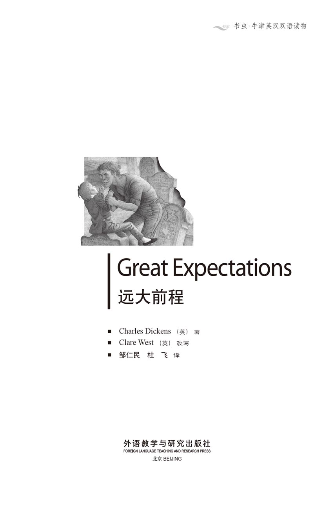
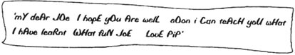
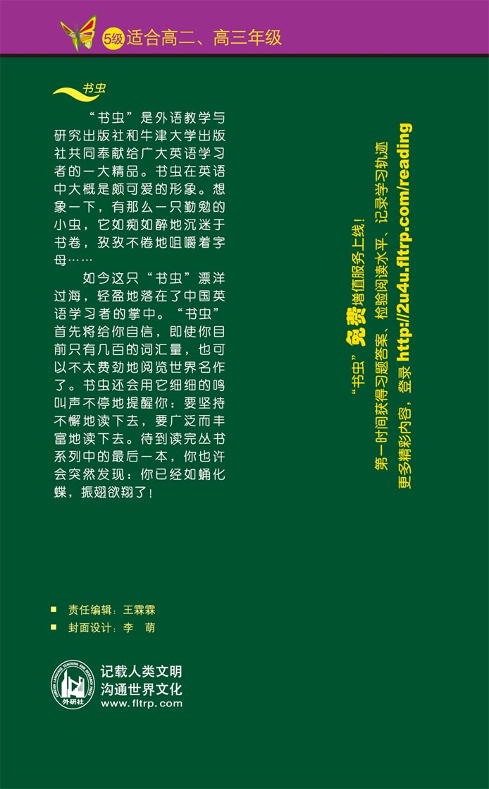

扉页

版权页
京权图字01-96-1586
Originally published by Oxford University Press, Great Clarendon Street, Oxford. © 1992
This edition is licensed for sale in the People's Republic of China only and not for export therefrom.
'Oxford' is a registered trademark of Oxford University Press.
只限中华人民共和国境内销售，不包括香港特别行政区、澳门特别行政区及台湾省。不得出口。
图书在版编目（CIP）数据
远大前程＝Great Expectations／（英）狄更斯（Dickens, C.）著；（英）韦斯特（West, C.）改写；邹仁民、杜飞译．—北京：外语教学与研究出版社，1996.12（2014.10 重印）
（书虫·牛津英汉双语读物）
ISBN 978-7-5600-1173-8
Ⅰ．远… Ⅱ．①狄…②韦…③邹…④杜… Ⅲ．小说—对照读物—英、汉 Ⅳ．H319.4：I
中国版本图书馆CIP数据核字（97）第00444号
出版人： 蔡剑峰
责任编辑：王霖霖
出版发行：外语教学与研究出版社
社 址：北京市西三环北路19号（100089）
网 址：http://www.fltrp.com
版 次：1997年3月第1版
书 号：ISBN 978-7-5600-1173-8
* * *
凡侵权、盗版书籍线索，请联系我社法律事务部
举报电话：（010）88817519
电子邮箱：banquan@fltrp.com
法律顾问：立方律师事务所 刘旭东律师
中咨律师事务所 殷 斌律师
简介
简 介
总是希望和周围的朋友攀比，这是人类的一大弱点。如果他们有钱，我们也希望有钱。如果他们很穷，那么我们也不在乎同样受穷。我们不会因为自己的愚蠢而羞愧，我们只会因为比周围的朋友更蠢才感到羞愧。这就是“人比人”的问题。
其实这里还有“往前看”的问题。我们无所谓错过什么，假如从未期待拥有。我们也不会因为贫穷而失望，既然我们不曾指望富有。
匹普又穷又没受过什么教育，但好在他的朋友们也都一样。对他们来说，这并没有什么；这就是生活的本来面目。然而，一旦匹普得知他有“远大前程”，他开始不再安分了。
他羞于与自己的伙伴们为伍，他甚至还自惭形秽。他的“前程”显然有摧毁他的生活的“危险”。
查尔斯·狄更斯（1812—1870）是英国最伟大的小说家之一。尽管出生清贫（他父亲因负债而入狱），他却在有生之年获得盛名而且富有。
目录
人物介绍
人物介绍
Pip匹普又名Handel汉德尔；教名菲利普
Abel Magwitch, a convict 阿伯尔·马格韦契，一名罪犯
Mrs Joe Gargery, Joe's wife and Pip's sister 乔·葛吉瑞夫人，乔的妻子，匹普的姐姐
Joe Gargery, the village blacksmith 乔·葛吉瑞，乡村铁匠
Compeyson, a convict 康培生，一名罪犯
Mr Pumblechook, Joe's uncle 潘波趣先生，乔的舅舅
Mr Wopsle, church clerk 伍甫赛先生，教堂里的执事
Biddy, Mr Wopsle's young cousin 毕蒂，伍甫赛先生的表妹
Miss Havisham 郝薇香小姐
Estella, adopted by Miss Havisham 艾丝黛拉，被郝薇香小姐收养
Herbert Pocket 赫伯特·朴凯特
Matthew Pocket, Herbert's father 马修·朴凯特，赫伯特的父亲
Orlick 奥立克
Mr Jaggers, a London lawyer 贾格斯先生，一名伦敦律师
Mr Wemmick, Mr Jaggers' clerk 文米克先生，贾格斯先生的雇员
Bentley Drummle 本特利·朱穆尔
Startop 史达多蒲
Miss Skiffins, engaged to Wemmick 斯基芬小姐，已与文米克先生有婚约
The aged parent, or the Aged, Wemmick's father 年老的父亲，或老年人，文米克的父亲
1 Pip meets a stranger
1
Pip meets a stranger
My first name was Philip, but when I was a small child I could only manage to say Pip. So Pip was what everybody called me. I lived in a small village in Essex with my sister, who was over twenty years older than me, and married to Joe Gargery, the village blacksmith. My parents had died when I was a baby, so I could not remember them at all, but quite often I used to visit the churchyard, about a mile from the village, to look at their names on their gravestones.
My first memory is of sitting on a gravestone in that churchyard one cold, grey, December afternoon, looking out at the dark, flat, wild marshes divided by the black line of the River Thames, and listening to the rushing sound of the sea in the distance.
'Don't say a word!' cried a terrible voice, as a man jumped up from among the graves and caught hold of me. 'If you shout I'll cut your throat!' He was a big man, dressed all in grey, with an iron chain on his leg. His clothes were wet and torn. He looked exhausted, and hungry, and very fierce. I had never been so frightened in my whole life.
'Oh! Don't cut my throat, sir!' I begged in terror.
'Tell me your name, boy! Quick!' he said, still holding me. 'And show me where you live!'
'My name's Pip, sir. And I live in the village over there.'
He picked me up and turned me upside-down. Nothing fell out of my pocket except a piece of old bread. He ate it in two bites, like a dog, and put me back on the gravestone.
'So where are your father and mother?' he asked.
'There, sir,' I answered, pointing to their graves.
'What!' he cried, and was about to run, when he saw where I was pointing. 'Oh!' he said. 'I see. They're dead. Well, who do you live with, if I let you live, which I haven't decided yet?'
'With my sister, sir, wife of Joe Gargery, the blacksmith.'
'Blacksmith, you say?' And he looked down at his leg. Then he held me by both arms and stared fiercely down into my eyes.
'Now look here. You bring me a file. You know what that is? And you bring me some food. If you don't, or if you tell anyone about me, I'll cut your heart out.'
'I promise I'll do it, sir,' I answered. I was badly frightened and my whole body was trembling.
'You see,' he continued, smiling unpleasantly, 'I travel with a young man, a friend of mine, who roasts boys' hearts and eats them. He'll find you, wherever you are, and he'll have your heart. So bring the file and the food to that wooden shelter over there, early tomorrow morning, if you want to keep your heart, that is. Remember, you promised!'
I watched him turn and walk with difficulty across the marshes, the chain hanging clumsily around his leg. Then I ran home as fast as I could.
My sister, Mrs Joe Gargery, was very proud of the fact that she had brought me up 'by hand'. Nobody explained to me what this meant, and because she had a hard and heavy hand, which she used freely on her husband as well as me, I supposed that Joe and I were both brought up by hand. She was not a beautiful woman, being tall and thin, with black hair and eyes and a very red face. She clearly felt that Joe and I caused her a lot of trouble, and she frequently complained about it. Joe, on the other hand, was a gentle, kind man with fair hair and weak blue eyes, who quietly accepted her scolding.
Because Joe and I were in the same position of being scolded by Mrs Joe, we were good friends, and Joe protected me from her anger whenever he could. So when I ran breathless into the kitchen, he gave me a friendly warning. 'She's out looking for you, Pip! And she's got the stick with her!' This stick had been used so often for beating me that it was now quite smooth.
Just then Mrs Joe rushed in.
'Where have you been, you young monkey?' she shouted. I jumped behind Joe to avoid being hit with the stick.
'Only to the churchyard,' I whispered, starting to cry.
'Churchyard! If I hadn't brought you up, you'd be in the churchyard with our parents. You'll send me to the churchyard one day! Now let me get your supper ready, both of you!'
For the rest of the evening, I thought of nothing but the stranger on the marshes. Sometimes, as the wind blew round the house, I imagined I heard his voice outside, and I thought with horror of the young man who ate boys' hearts.
Just before I went to bed, we heard the sound of a big gun on the marshes. 'Was that a gun, Joe?' I asked.
'Ah!' said Joe. 'Another convict's escaped. One got away last night. They always fire the gun when one escapes.'
'Who fires the gun?' I asked. Joe shook his head to warn me.
'Too many questions,' frowned my sister. 'If you must know it's the men in the prison-ships who fire the gun.'
'I wonder who is put into prison-ships, and why?' I asked, in a general way, quietly desperate to know the answer.
This was too much for Mrs Joe. 'Listen, my boy, I didn't bring you up by hand to annoy people to death! There are ships on the river which are used as prisons. People who steal and murder are put in the prison-ships, and they stay there for years sometimes. And they always begin their life of crime by asking too many questions! Now, go to bed!'
I could not sleep at all that night. I was in terror of the young man who wanted my heart, I was in terror of the man with the iron chain, I was in terror of my sister, who would soon discover I had stolen her food. As soon as there was a little light in the sky outside my window, I got up and went quietly down to the kitchen. I stole some bread, cheese and a big meat pie, hoping that, as there was a lot of food ready for Christmas, nobody would notice what was missing. I did not dare take the whole brandy bottle, so I poured some into a smaller bottle to take away with me. Then I filled up the brandy bottle with what I thought was water from a big brown bottle. I took a file from Joe's box of tools, and ran out on to the dark marshes.
The mist was so thick that I could not see anything. Although I knew my way to the shelter very well, I almost got lost this time. I was near it when I saw a man sitting on the ground, half asleep. I went up and touched his shoulder. He jumped up, and it was the wrong man! He was dressed in grey, too, and had an iron chain on his leg. He ran away into the mist.
'It's the young man!' I thought, feeling a pain in my heart.
When I arrived at the shelter, I found the right man. He looked so cold and hungry that I felt sorry for him. Trembling violently he swallowed the brandy and ate the food like a hunted animal, looking around him all the time for danger.
'You're sure you didn't tell anyone? Or bring anyone?'
'No, sir. I'm glad you're enjoying the food, sir.'
'Thank you, my boy. You've been good to a poor man.'
'But I'm afraid there won't be any left for him.'
'Him? Who's that?' My friend stopped in the middle of eating.
'The young man who travels with you.'
'Oh, him!' he replied, smiling. 'He doesn't want any food.'
'I thought he looked rather hungry,' I answered.
He stared at me in great surprise. 'Looked? When?'
'Just now, over there. I found him half asleep and I thought it was you. He was dressed like you, and—' I was anxious to express this politely '—he had the same reason for wanting to borrow a file.'
'Then I did hear them fire the gun last night! You know, boy, when you're on the marsh alone at night, you imagine all kinds of things, voices calling, guns firing, soldiers marching! But show me where this man went. I'll find him and I'll finish with him! I'll smash his face! Give me the file first.'
I was afraid of him now that he was angry again.
'I'm sorry, I must go home now,' I said. He did not seem to hear, so I left him bending over his leg and filing away at his iron chain like a madman. Halfway home I stopped in the mist to listen, and I could still hear the sound of the file.
stranger n. a person who is unfamiliar. 陌生人。
churchyard n. an open space around and belonging to a church. 教堂周围属于教堂的空地。
marsh n. low land that is soft and wet. 沼泽地；湿地。
exhaust v. to tire. 疲惫；使筋疲力尽。
fierce adj. angry, violent, and cruel. 凶狠的；残忍的。
gravestone n. a stone put up over a grave. 墓石；墓碑。
blacksmith n. a person who makes and repairs things made of iron. 铁匠。
tremble v. shake because you are afraid, cold, weak, etc. （因害怕、寒冷、体弱等而）发抖。
frequently adv. happening often. 时常发生。
monkey n. a small wild animal, person, esp. a child who is fond of mischief. （戏语）顽皮的人（尤其指小孩）。
fair hair 金发。
convict n. a person convicted of crime and undergoing punishment. 囚犯。
frown v. draw the eyebrows together, causing lines on the forehead. 皱眉头。
terror n. great fear. 恐怖。
brandy n. strong alcoholic drink made from wine. 白兰地酒。
mist n. 雾（密度低于 fog而高于 haze）。
violently adv. severely. 剧烈地。
politely adv. in a refined manner. 文雅地。
smash v. break, be broken. 打破。
匹普与一位陌生人相遇
1 匹普与一位陌生人相遇
我的教名叫菲利普，但是在我小时候，我仅会说匹普。因此，匹普就成了大家对我的称呼。我和姐姐住在埃森克斯的一个小村庄，姐姐比我大二十多岁，她与村里的铁匠乔·葛吉瑞结了婚。当我还是一个婴儿时，父母就离开了人间，所以我对他们根本没有什么印象，但是，我常常去离村庄大约一英里的教堂墓地，瞻仰墓碑上他们的名字。
我的最初记忆是12月份一个阴冷的下午，我正坐在那个教堂墓地的一块墓石上，眺望着远处低平的、被泰晤士河形成的黑线分割开的黑压压的沼泽荒地，倾听着远处大海的咆哮声。
“别出声！”一个骇人的声音大喊道，接着一个人从墓地里窜出来，一把抓住我，“你敢叫的话，我就割断你的喉咙！”他身材高大，穿着一身灰色衣服，腿上拴着一副铁镣铐。他的衣服湿淋淋的并且破烂不堪。他看上去筋疲力尽、饥寒交迫、十分凶残的样子。我一生中从没有像这样被吓着过。
“噢！先生，不要割我的喉咙！”我害怕地乞求着。
“小子，告诉我你叫什么名字！快点儿！”他仍然抓着我说，“指给我看你住在哪儿！”
“先生，我叫匹普，我住在那边的村庄里。”
他把我头朝下拎起来。一块放了很久的面包从我的口袋里掉了出来，此外一无所有。他像只饿狗似的两口吞下面包，然后把我放回墓石上。
“那么，你的爸爸妈妈在哪儿？”他问道。
“先生，在那儿。”我指着他们的坟墓回答。
“什么！”他叫起来，拔腿就要跑。这时他看到了我所指的地方，“噢！”他说，“我明白了，他们已经死了。那么，如果我放过你的话——这事我还没决定呢，你跟谁一起生活呢？”
“和我姐姐，先生，她是铁匠乔·葛吉瑞的妻子。”
“你说，铁匠？”他低下头看看自己的腿，然后抓住我的双臂，恶狠狠地盯着我的双眼。
“你看这儿。给我带把锉刀来。你知道什么是锉刀吗？再给我弄点儿吃的。如果你不照办，或者把我的情况告诉别人，我就把你的心挖出来。”
“我保证照办，先生。”我回答。我非常害怕，整个身体在颤抖。
“听我说，”他狞笑着继续说道，“同我一起来的还有一个年轻人，是我的朋友，他烤炙小孩的心脏并把它们吃掉。不管你在哪儿，他都会找到你并吃掉你的心脏。所以，如果你要保住你的心脏，明天一大早，把锉刀和食物送到那边的木棚里。记住，你发过誓的！”
我注视着他转过身去，拖动脚上笨拙的脚镣，艰难地穿过沼泽地。然后我拼命地往家跑。
我姐姐乔·葛吉瑞夫人为“亲手”把我带大这一事实感到很自豪。没有人给我解释这是什么意思，而且因为她有只坚实有力的手，这只手可自由“落”在她的丈夫和我的身上，所以我以为乔和我都是被“亲手”养大的。她不是一个漂亮的女人，身材瘦高，黑色的头发和眼睛，一副赤红的面孔。她确实觉得乔和我给她添了不少麻烦，常常为此发牢骚。相反，长有金色头发和浅蓝色眼睛的乔是一个和蔼、心地善良的人，总是老老实实地接受她的训斥。
因为我和乔都处于被乔夫人责骂的地位，所以我们俩是好朋友，乔随时都在保护我免遭她的怒斥。所以，当我上气不接下气地跑进厨房时，他给了我一个友好的忠告：“她正在外面找你，匹普！她还拿了根棍子！”这根棍子常被用来打我，以至于现在变得非常光滑了。
正在这时，乔夫人闯了进来。
“到哪里去了，你这个小淘气鬼？”她大叫着。我跳到乔的背后，以避开棍子的击打。
“只去了教堂墓地。”我小声嘟囔着，接着哭了起来。
“教堂墓地！如果不是我照顾你，你早就和我们的父母一起被埋在教堂墓地里了。有一天你会把我送到坟墓去！现在，我给你们准备晚餐，你们俩！”
接下来的整个晚上，我满脑子都是沼泽地里那个陌生人。有时，当风在房屋周围掠过时，我以为自己听到外面他的声音，惊恐地想起吞吃小孩子心脏的那个年轻人。
我刚要睡觉，沼泽地里传来一阵猛烈的枪声。“乔，那是枪声吧？”我问道。
“噢！”乔说，“又有一个囚犯逃走了。昨晚上就逃了一个。当有囚犯逃跑时，他们总是要开火。”
“谁开的枪？”我问道，乔摇摇头以示警告。
“问得太多了，”我的姐姐皱着眉头说，“如果你一定要知道的话，是监狱船上的人开的枪。”
“不知道是谁被关在船上监狱里，为什么？”我漫不经心地问道，内心却极度渴望知道答案。
对于乔夫人来说，这是问得太多了，“听着，我的孩子，我一手把你带大可不是让你来烦死人的！在那条河里有一些专门用来当监狱的船。小偷和杀人犯被关在那些船上监狱里，有时他们在那里要待上很多年。而且，他们总是通过提出过多的问题来开始他们的犯罪生涯的！现在，睡觉去！”
那天晚上，我根本无法入睡。我害怕那个想要吃我心脏的年轻人，我害怕那个带着铁脚镣的人，我害怕我的姐姐，她马上就会发现我偷了她的食物。窗外的天空刚刚朦朦亮，我就起了床，悄悄地下楼进了厨房。我偷了一些面包、奶酪和一个大肉饼，心存侥幸地想，为过圣诞节准备了那么多吃的，不会有人发现少了东西。我没敢拿整瓶的白兰地酒，所以往一个更小的瓶子里倒了一些以便携带。然后，我用自己认为是盛水的褐色大瓶子里的东西把白兰地瓶子灌满。我从乔的工具箱里拿了一把锉刀，随后跑出了家门，直奔黑魆魆的沼泽地。
大雾弥漫，我什么也看不见。虽然我对去木棚的路了如指掌，但这次几乎迷了路。我接近木棚时，看见一个人坐在地上，几乎睡着了。我走过去，拍拍他的肩膀，他一跃而起，他不是我遇见的那个人！他也穿着灰布衣服，腿上也戴着一副铁镣铐。他跑进了浓雾之中。
“是那个年轻人！”我想，心头感到一阵刺痛。
当我到达木棚时，我看到了昨天那个人。他看上去饥寒交迫，我不禁为他感到难过。他大口大口地吃东西、喝白兰地；他身子颤抖得很厉害，边吃边警戒地环顾四周，活像一只被追捕的野兽。
“你确定你没告诉任何人？没有带任何人来吧？”
“没有，先生，你吃得这么香，我真高兴，先生。”
“谢谢你，我的孩子。你善待了一个可怜人。”
“但恐怕不会给他剩什么了。”
“他？谁呀？”我的朋友停下吃了半截的东西问道。
“就是和你一起来的那个小伙子。”
“噢，他嘛！”他笑着说，“他不想吃东西。”
“我看他的样子很饿。”我回答说。
他十分惊讶地盯着我，“看样子？什么时候？”
“刚才，在那边儿。我发现他快要睡着了，我还认为是你呢。他穿的衣服和您一样，还有……”我希望礼貌地进行表述，“……他有同样的理由要借一把锉刀。”
“如此说来，我昨晚确实听到了他们的枪声！你知道，孩子，当你孤身一人在沼泽地里过夜时，你会想像形形色色的东西，尖叫的声音，扫射的枪支，行军的士兵！带我到这个人逃走的地方去，我会找到他，杀了他！我要打烂他的脸！先给我锉刀。”
他再一次发怒，我又害怕起他来。
“对不起，我现在该回家了。”我说。他似乎没听见，弯着腿，像疯子一样锉着脚镣；我趁机溜走。回家的半路上我在浓雾中停住了脚步，仍然能听到锉脚镣的声音。
2 Catching a convict
2
Catching a convict
All that morning I was frightened that my sister would discover that I had stolen from her, but luckily she was so busy cleaning the house, and roasting the chickens for our Christmas lunch that she did not notice that I had been out, or that any food was missing. At half-past one our two guests arrived. Mr Wopsle had a large nose and a shining, bald forehead, and was the church clerk. Mr Pumblechook, who had a shop in the nearest town, was a fat, middle-aged man with a mouth like a fish, and staring eyes. He was really Joe's uncle but it was Mrs Joe who called him uncle. Every Christmas Day he arrived with two bottles of wine, handing them proudly to my sister.
'Oh Uncle Pumblechook! This is kind!' she always replied.
'It's no more than you deserve,' was the answer every time.
Sitting at table with these guests I would have felt uncomfortable even if I hadn't robbed my sister. Not only was Pumblechook's elbow in my eye, but I wasn't allowed to speak, and they gave me the worst pieces of meat. Even the chickens must have been ashamed of those parts of their bodies when they were alive. And worse than that, the adults never left me in peace.
'Before we eat, let us thank God for the food in front of us,' said Mr Wopsle, in the deep voice he used in church.
'Do you hear that?' whispered my sister to me. 'Be grateful!'
'Especially,' said Mr Pumblechook firmly, 'be grateful, boy, to those who brought you up by hand.'
'Why are the young never grateful?' wondered Mr Wopsle sadly.
'Their characters are naturally bad,' answered Mr Pumblechook, and all three looked unpleasantly at me.
When there were guests, Joe's position was even lower than usual (if that was possible), but he always tried to help me if he could. Sometimes he comforted me by giving me extra gravy. He did that now.
'Just imagine, boy,' said Mr Pumblechook, 'if your sister hadn't brought you up—'
'You listen to this,' said my sister to me crossly.
'If, as I say, she hadn't spent her life looking after you, where would you be now?'
Joe offered me more gravy.
'He was a lot of trouble to you, madam,' Mr Wopsle said sympathetically to my sister.
'Trouble?' she cried. 'Trouble?' And then she started on a list of all my illnesses, accidents and crimes, while everybody except Joe looked at me with disgust. Joe added more gravy to the meat swimming on my plate, and I wanted to pull Mr Wopsle's nose.
In the end Mrs Joe stopped for breath, and said to Mr Pumblechook, 'Have a little brandy, uncle. There is a bottle already open.'
It had happened at last! Now she would discover I had stolen some brandy, and put water in the bottle. Mr Pumblechook held his glass up to the light, smiled importantly at it and drank it. When, immediately afterwards, he jumped up and began to rush round the room in a strange wild dance, we all stared at him in great surprise. Was he mad? I wondered if I had murdered him, but if so, how? At last he threw himself gasping into a chair, crying 'Medicine!' Then I understood. Instead of filling up the brandy bottle with water, I had put Mrs Joe's strongest and most unpleasant medicine in by mistake. That was what the big brown bottle contained.
'But how could my medicine get into a brandy bottle?' asked my sister. Fortunately she had no time to find the answer, as Mr Pumblechook was calling for a hot rum to remove the taste of the medicine. 'And now,' she said, when the fat man was calmer, 'you must all try Uncle Pumblechook's present to us! A really delicious meat pie!'
'That's right, Mrs Joe!' said Mr Pumblechook, looking more cheerful now. 'Bring in the pie!'
'You shall have some, Pip,' said Joe kindly.
I knew what would happen next. I could not sit there any longer. I jumped down from the table, and ran out of the room.
But at the front door I ran straight into a group of soldiers. Mrs Joe was saying as she came out of the kitchen, 'The piehas-gone!' but stopped when she saw the soldiers.
'Excuse me, ladies and gentlemen,' said the officer in charge. 'I'm here in the King's name, and I want the blacksmith.'
'And why do you want him?' said my sister crossly.
'Madam,' replied the officer politely, 'speaking for myself, I'd like the pleasure of meeting his fine wife. Speaking for the King, I'd like him to repair these handcuffs.'
'Ah, very good, very good!' said Mr Pumblechook, clapping.
The soldiers waited in the kitchen while Joe lit the forge fire and started work. I began to feel better now that everyone had forgotten the missing pie.
'How far are we from the marshes?' asked the officer.
'About a mile,' replied Mrs Joe.
'That's good. We'll catch them before it's dark.'
'Convicts, officer?' asked Mr Wopsle.
'Yes, two escaped convicts out on the marshes. Has anyone here seen them?'
The others all shook their heads. Nobody asked me. When the handcuffs were ready, Joe suggested we should go with the soldiers, and as Mrs Joe was curious to know what happened, she agreed. So Joe, Mr Wopsle and I walked behind the men through the village and out on to the marshes.
'I hope we don't find those poor men, Joe,' I whispered.
'I hope not either, Pip,' he whispered back. It was cold, with an east wind blowing from the sea, and it was getting dark.
Suddenly we all stopped. We heard shouts in the distance.
'This way! Run!' the officer ordered, and we all rushed in that direction. The shouts became clearer. 'Murder!' 'Escaped convict!' 'Help!' At last we discovered two men fighting each other. One was my convict, and the other was the man who had run away when I had seen him near the shelter. Somehow the soldiers held the men apart and put the handcuffs on them.
'Here he is, I'm holding him for you!' shouted my convict.
'Officer, he tried to murder me!' cried the other man. His face was bleeding and he was clearly very frightened.
'Murder him! No,' said the first, 'that would be too easy. I want him to suffer more, back on the prison-ship. He's lying, as he did at our trial! You can't trust Compeyson!'
Just then he noticed me for the first time. I shook my head at him, to show that I had not wanted the soldiers to find him. He stared at me, but I did not know if he understood or not.
The prisoners were taken to the riverside, where a boat was waiting to take them on to the prison-ship. Just as he was about to leave, my convict said, 'Officer, after my escape, I stole some food, from the blacksmith's house. Bread, cheese, brandy and a meat pie. I'm sorry I ate your pie, blacksmith.'
'I'm glad you did,' replied Joe kindly. 'We don't know why you're a convict, but we wouldn't want you to die of hunger.'
The man rubbed his eyes with the back of his dirty hand. We watched the small boat carry him out to the middle of the river, where the great black prison-ship stood high out of the water, held by its rusty chains. He disappeared into the ship, and I thought that was the last I had seen of him.
deserve v. to be good or bad enough to have something. 应得。
ashamed adj. having a feeling of shame. 羞耻。
elbow n. the joint between the upper and lower arms. 肘。
stare v. look fixedly, be wide open. 盯着；睁大；张开。
whisper v. using the breath but not the vocal cords. 低声而语，耳语。
character n. moral strength. 品格。
comfort v. to cause to feel comfortable. 安慰。
imagine v. form a picture in the mind. 想像。
sympathetically adv. having or showing sympathy. 表示同情的。
gravy n. juice which comes from meat while it is cooking. 肉汁。
surprise n. something which happens suddenly. 意外，惊奇。
murder v. to kill a person against the law. 谋杀；凶杀。
gasp v. struggle for breath. 喘气；喘息。
delicious adj. pleasing to one's taste or smell. 香，好吃的。
rum n. 朗姆酒。
handcuff n. one of a pair of metal rings joined by a short chain, fastened round a prisoner's wrists. 手铐。
clap v. show approval, applaud, by striking the palms of the hands together loudly. 鼓掌，拍手。
lit (light) v. 生火。
forge n. furnace or hearth for melting. 铁匠炉。
direction n. a way towards something. 方向；方位。
bleed v. to lose blood. 流血。
suffer v. to feel pain or sorrow. 感到痛苦。
rub v. to move one thing backwards and forwards on the surface of another. 摩擦；擦。
rusty adj. reddish-brown coating formed on iron by the action of water and air. 生锈的。
disappear v. to go out of sight. 消失。
抓住一名罪犯
2 抓住一名罪犯
一上午，我一直害怕姐姐会发现我偷了她的东西，但是，幸运的是她只顾忙于打扫房间，为我们的圣诞节午饭准备烤鸡，并没有注意到我出过门，也没发现少了任何食物。1点半钟，我们的两位客人到了。伍甫赛先生的鼻子很大，秃顶的前额闪闪发光，他是教堂里的执事。潘波趣先生在最近的镇上有一个商店，他是个体胖腰圆的中年人，鱼嘴，双眼外凸。他是乔的亲舅舅，可喊他舅舅的是乔夫人。每年圣诞节，他都带两瓶葡萄酒来，高傲地递给我姐姐。
“噢，潘波趣舅舅！您真是太好了！”她总是这样说。
“这是一点儿小意思。”每一次都是这种回答。
和这些客人围桌而坐，即使没偷姐姐的东西，我也不会好受。不但潘波趣的胳膊肘在我眼前晃悠，而且我还不能说话，加之他们给我的是最不好的肉块。即使这些鸡们活着的时候也一定会对它们身体的这些部位感到害臊的。更糟糕的是，这些大人一刻也不让我安宁。
“进餐之前，让我们感谢上帝赐给我们面前的食物。”伍甫赛先生以他在教堂常用的低沉语调说。
“你听见了吗？”姐姐在旁边耳语道，“感谢！”
“特别是，”潘波趣先生坚定地说，“孩子，要感谢那些把你亲手带大的人。”
“为什么年轻人从来不感激？”伍甫赛先生难过地问。
“他们的品行天生就是坏的。”潘波趣先生回答说，三个人不悦地看着我。
当有客人的时候，乔的地位甚至比平时还要低（如果可能的话），但只要做得到，他总会设法帮助我。有时，他给我额外添点肉汁，以安慰我。现在，他就是这样做的。
“设想一下，孩子，”潘波趣先生说，“如果不是你姐姐亲手把你带大……”
“好好听着。”我姐姐恶声恶气地对我说。
“如果，正如我所说，她不消耗自己的生命照顾你，你现在会在哪儿呢？”
乔又给我加了一些肉汤。
“他给你添了不少麻烦，夫人。”伍甫赛先生同情地对我姐姐说。
“麻烦？”她喊了起来，“麻烦？”接着她开始罗列我的生病、意外及干的坏事，除了乔，其他人都用反感的目光瞅着我。乔又往我那肉块漂浮的碟子里添了些肉汤，而我恨不得揪下伍甫赛先生的鼻子。
最后，乔夫人停下来喘了口气，然后对潘波趣先生说：“舅舅，喝点儿白兰地吧。有一瓶已经打开了。”
祸事降临了！现在，她会发现我偷了一些白兰地，并把水倒进瓶子里。潘波趣先生把杯子举到空中，自负地笑了笑，然后一饮而尽。酒刚落肚，他突然蹦了起来，开始绕屋子乱撞，脚下踏着奇怪、狂野的舞步，我们大家惊异地盯着他。他疯了吗？我不知道我是否害了他。果真如此，怎么做到的呢？最后，他气喘吁吁地一屁股靠倒在椅子上，嘴里嚷嚷着：“药！”我这才明白。我往白兰地瓶里装的不是水，而是乔夫人那药效极强、味道极苦的药水。那就是褐色大瓶子里装的东西。
“可是，我的药怎么能进到白兰地酒瓶里呢？”我姐姐问。幸好她顾不上去找答案，因为潘波趣先生叫喊着要些热朗姆酒，以除掉药的味道。“现在，”当那个肥胖的家伙惊魂渐定时，她说，“你们大家必须尝尝潘波趣舅舅给我们送的礼物！一个味道鲜美的肉饼！”
“很好，乔夫人，”潘波趣先生说，看样子他现在稍微高兴了点儿，“拿肉饼！”
“你也会有一份肉饼，匹普。”乔和蔼地说。
我料到下一步会发生什么事情，我不能在这儿继续坐下去了。我从椅子上跳下来，拔腿跑出了屋子。
但是，在门口，我迎头撞上了一队士兵。乔夫人从厨房里出来，嘴里正在叨咕：“肉饼——不翼而飞！”可是，当她看到士兵们时，闭上了嘴。
“对不起，女士们、先生们，”统领士兵的军官说，“我以国王的名义来到这里，而且我要找铁匠。”
“你们找他干吗？”我姐姐没好气地问。
“夫人，”军官客气地说，“就我自己而言，我乐意见到他美丽的妻子，要是就国王而言，我希望他修理一下这些手铐。”
“啊，很好，很好！”潘波趣先生拍着手说。
士兵们在厨房等候，而乔生上炉火，开始干活儿。我渐渐地不害怕了，大家都把丢肉饼的事抛到脑后去了。
“从这里到沼泽地有多远？”军官问。
“大约一英里。”乔夫人回答。
“那不太远。我们将在天黑前抓到他们。”
“是罪犯吗，长官？”伍甫赛先生问。
“是的，有两个逃犯还躲在沼泽地里，你们有谁见过他们吗？”
其他的人都摇摇头。幸亏没有人问我。手铐修好后，乔提议我们跟着这些士兵一起去，由于乔夫人好奇地想知道发生了什么事情，所以她同意了。因此，乔、伍甫赛先生和我走在队伍的后面，穿过村庄向沼泽地开进。
“我希望我们找不到那些可怜的人，乔。”我小声说道。
“我也希望那样，匹普。”他小声回了一句。天气很冷，从海上刮来一股东风，夜幕降临了。
突然，我们都停了下来，远处传来喝呼声。
“这个方向！追！”军官命令道。我们迅速向那个方向跑去。喝呼声越来越近，“谋杀！”“逃犯！”“救命呀！”最后我们看见两个人正在互相厮打。一个是我帮助的那个囚犯，另一个是我在木棚附近见过的那个逃窜的人。士兵们设法把两人分开，并一一戴上手铐。
“他在这儿，我帮你们抓住了他！”我的那个囚犯喊着。
“长官，他企图杀害我！”另一个囚犯哭喊着，他的脸上流着血，很显然，他被吓坏了。
“杀害他！不，”第一个逃犯说，“杀他太容易了。我要让他多受受折磨，让他回船上监狱去。他在说谎，就像他在试探我们！你们不要相信康培生！”
这时他才注意到我。我向他摇了摇头，表示我并不想让士兵们找到他。他盯着我，我不知道他是否明白我的意思。
逃犯们被带到河边，那儿有一只小船正等着把他们送到船上监狱去。正要离开的时候，我的那个囚犯说：“长官，我逃跑后，从铁匠家里偷了些吃的，面包、黄油、白兰地和一个肉饼。我很抱歉，我吃了你的肉饼，铁匠。”
“你这样做我很高兴，”乔客气地说，“我们不知道你因为什么成为一名罪犯，但我们不希望你饿死。”
这个罪犯用他的脏手背擦了擦眼睛。我们注视着那艘小船把他带进河中央。在那里，被锈迹斑斑的铁链连在一块儿的监狱船高高耸立在水面上。他被押进船里，消失得无影无踪。我心想，这是我见他最后一面了。
3 An opportunity for Pip
3
An opportunity for Pip
I always knew I would be apprenticed to Joe as soon as I was old enough, and so I used to spend most of the day helping him in the forge. However, I also attended the village evening school, which was organized by an ancient relation of Mr Wopsle's. Her teaching mostly consisted of falling asleep while we children fought each other, but Mr Wopsle's young cousin, Biddy, tried to keep us under control and teach us to read, write and count. Mr Wopsle 'examined' us every three months. In fact he did not ask us any questions at all, but read aloud from Shakespeare, waving his arms dramatically and enjoying the sound of his own voice.
One night, about a year after the escaped convicts had been caught, I was sitting by the kitchen fire, writing a letter to Joe. I didn't need to, because he was sitting right next to me, but I wanted to practise my writing. After an hour or two of hard work, I passed a letter to him.

'Pip, old boy!' cried Joe, opening his kind blue eyes very wide. 'What a lot you've learnt! Here's a J and an O, that's for Joe, isn't it, Pip?'
I wondered whether I would have to teach Joe from the beginning, so I asked, 'How do you write Gargery, Joe?'
'I don't write it at all,' said Joe. 'But, you know, I am fond of reading. Give me a good book or newspaper, a good fire and I ask no more. Well! When you come to a J and an O, how interesting reading is!'
'Didn't you ever go to school, Joe, when you were young?'
'No, Pip. You see, my father drank a lot, and when he drank, he used to hit my mother, and me too, sometimes. So she and I ran away from him several times. And she used to say, "Now, Joe, you can go to school." But my father had such a good heart that he didn't want to be without us. So he always came to find us, and took us home, and hit us. So you see, Pip, I never learnt much.'
'Poor Joe!'
'But remember, Pip, my father had a good heart.'
I wondered about that, but said nothing.
'He let me become a blacksmith, which was his job too, only he never worked at it. I earned the money for the family, until he died. And listen to this, Pip, I wanted to put this on his gravestone:
Whatever the fault he had from the start,
Remember, reader, he had a good heart.'
'Did you invent that yourself, Joe?' I asked, surprised.
'I did,' said Joe proudly. 'It came to me in a moment. From my own head. But, Pip, sad to say, there wasn't enough money for the gravestone. My poor mother needed it. In bad health, she was. She died soon after. Found peace at last.' Joe's blue eyes were watery. 'I was lonely then, and I met your sister. Now, Pip,' Joe looked firmly at me, because he knew I was not going to agree with him, 'your sister is a fine woman!'
I could think of nothing better to say than 'I'm glad you think so, Joe.'
'So am I,' said Joe. 'I'm glad I think so. Very kind of her, bringing you up by hand. Such a tiny baby you were! So when I offered to marry your sister, I said, "And bring the poor little child to live with us. There's room for him at the forge!"'
I put my arms round Joe's neck and cried into his shirt.
'Don't cry, old boy!' he said. 'Always the best of friends, you and me!' As I dried my tears, he continued, 'So here we are, Pip! Now if you teach me a bit (and I warn you now that I'm very stupid) Mrs Joe must never know. And why? Because she likes to be—in charge—you know—giving the orders.'
'Joe,' I asked, 'why don't you ever rebel?'
'Well,' said Joe, 'to start with, your sister's clever. And I'm not. And another thing, and this is serious, old boy, when I think of my poor mother's hard life, I'm afraid of not behaving right to a woman. So I'd much rather seem a bit weak with Mrs Joe than shout at her, or hurt her, or hit her. I'm just sorry she scolds you as well, Pip, and hits you with the stick. I wish I could take all the scolding myself. But there it is, Pip.'
Just then we heard the sound of a horse on the road. Mrs Joe and Uncle Pumblechook were returning from market. The carriage arrived, and in a rush of cold air, they were in the kitchen.
'Now,' said Mrs Joe, excitedly throwing off her cloak, 'if this boy isn't grateful tonight, he never will be!'
'She's offering the boy a great opportunity,' agreed Pumblechook. Trying to look grateful, I looked at Joe, making the word 'She?' with my lips. He clearly did not know either.
'You were speaking of a she?' he said politely to them.
'She is a she, I suppose,' Mrs Joe replied crossly. 'Unless you call Miss Havisham a he. And even you wouldn't do that.'
'The rich Miss Havisham who lives all alone in the big house in town?' asked Joe.
'There aren't any other Miss Havishams that I know of! She wants a boy to go and play there. She asked Uncle Pumblechook if he knew of anyone. And Uncle Pumblechook, thinking of us as he always does, suggested this boy. And what's more, Uncle Pumblechook, realizing that this boy's fortune may be made by going to Miss Havisham's, has offered to take him into town tonight in his carriage, and let him sleep in his own house, and deliver him tomorrow to Miss Havisham's. And just look!' she cried, catching hold of me. 'Look at the dirt on this boy!'
I was washed from top to toe in Mrs Joe's usual violent manner, and handed over, in my tightest Sunday clothes, to Mr Pumblechook. In the carriage taking me into town, I cried a little. I had never been away from Joe before, and I had no idea what was going to happen to me at Miss Havisham's.
Mr Pumblechook seemed to agree with my sister that I should be punished as much as possible, even when eating, and so for breakfast next morning he gave me a large piece of bread with very little butter, and a cup of warm water with very little milk, and insisted on checking my learning.
'What's seven and thirteen, boy?' He continued testing me all through breakfast. 'And nine? And eleven?'
So I was glad to arrive at Miss Havisham's house at about ten o'clock. It was a large house, made of old stone, and with iron bars on the windows. We rang the bell, and waited at the gate. Even then Mr Pumblechook said, 'And fourteen?' but I pretended not to hear him. Then a young lady came to open the gate, and let me in. Mr Pumblechook was following me when she stopped him.
'Do you wish to see Miss Havisham?' she asked.
'If Miss Havisham wishes to see me,' answered Mr Pumblechook, a little confused.
'Ah!' said the girl, 'but you see, she doesn't.'
Mr Pumblechook dared not protest but he whispered angrily to me before he turned away, 'Boy! Behave well here and remember those who brought you up by hand!' I thought he would come back and call through the gate, 'And sixteen?' but he did not.
The young lady took me through the untidy garden to the house. Although she called me 'boy', she was the same age as me, but she seemed much older than me. She was beautiful, and as proud as a queen. We went through many dark passages until we reached a door, where she left me, taking her candle with her.
I knocked at the door and was told to enter. I found myself in a large room, where the curtains were closed to allow no daylight in, and the candles were lit. In the centre of the room, sitting at a table, was the strangest lady I have ever seen, or shall ever see. She was wearing a wedding dress made of rich material. She had a bride's flowers in her hair, but her hair was white. There were suitcases full of dresses and jewels around her, ready for a journey. She only had one white shoe on. Then I realized that over the years the white wedding dress had become yellow, and the flowers in her hair had died, and the bride inside the dress had grown old. Everything in the room was ancient and dying. The only brightness in the room was in her dark old eyes, that stared at me.
'Who are you?' said the lady at the table.
'Pip, madam. Mr Pumblechook's boy. Come—to play.'
'Come close. Let me look at you.' As I stood in front of her, I noticed that her watch and a clock in the room had both stopped at twenty minutes to nine.
'You aren't afraid of a woman who has never seen the sun since you were born?' asked Miss Havisham.
I am sorry to say I told a huge lie by saying, 'No.'
'Do you know what this is?' she asked, putting her hand on her left side.
'Yes, madam.' It made me think of my convict's travelling companion. 'Your heart, madam,' I added.
'My heart! Broken!' she cried almost proudly, with a strange smile. Then she said, 'I am tired. I want to see something different. Play.'
No order could be more difficult to obey in that house and that room. I was desperate enough to consider rushing round the table pretending to be Pumblechook's carriage, but I could not make myself do it, and just stood there helplessly.
'I'm very sorry, madam,' I said, 'my sister will be very angry with me if you complain, but I can't play just now. Everything is so strange, and new, and sad...' I stopped, afraid to say more. Miss Havisham looked down at her dress, and then at her face in the mirror on the table.
'So strange to him, so well-known to me,' she whispered. 'So new to him, so old to me. And so sad to us both! Call Estella!'
When Estella finally came, with her candle, along the dark passage, Miss Havisham picked up a jewel from her table and put it in Estella's hair. 'Very pretty, my dear. It will be yours one day. Now let me see you play cards with this boy.'
'With this boy! But he's a common working boy!'
I thought I heard Miss Havisham whisper, 'Well! You can break his heart!' She sat, like a dead body ready for the grave, watching us play cards in the candle-light. I almost wondered if she was afraid that daylight would turn her into dust.
'What coarse hands this boy has! And what thick boots!' cried Estella in disgust, before we had finished our first game. I was suddenly aware that what she said was true.
'What do you think of her?' whispered Miss Havisham to me.
'I think she's very proud,' I whispered back.
'Anything else?'
'I think she's very pretty.'
'Anything else?'
'I think she's very rude. And—and I'd like to go home.'
'And never see her again, although she's so pretty?'
'I don't know. I'd—I'd like to go home now.'
Miss Havisham smiled. 'You can go home. Come again in six days' time. Estella, give him some food. Go, Pip.'
And so I found myself back in the overgrown garden in the bright daylight. Estella put some bread and meat down on the ground for me, like a dog. I was so offended by her behaviour towards me that tears came to my eyes. As soon as she saw this, she gave a delighted laugh, and pushed me out of the gate. I walked the four miles home to the forge, thinking about all I had seen. As I looked sadly at my hands and boots, I remembered that I was only a common working boy, and wished I could be different.
My sister was curious to know all the details of my visit, and kept asking me question after question. Somehow I felt I could not, or did not want to, explain about Miss Havisham and her strange house. I knew my sister would not understand. And the worst of it was, that old fool Pumblechook arrived at tea-time, to ask more questions. Just looking at his fishy staring eyes and open mouth made me want to keep silent.
'Leave this boy to me, madam,' he told Mrs Joe. 'I'll make him concentrate. Now, boy, what's forty-three and seventy-two?'
'I don't know,' I said. I didn't care, either.
'Is it eighty-five, for example?' he joked.
'Yes!' I answered, although I knew it wasn't. My sister hit me hard on the head.
'Boy!' he continued. 'Describe Miss Havisham.'
'Very tall and dark,' I said, lying.
'Is she, uncle?' asked my sister eagerly.
'Oh yes,' answered Mr Pumblechook. So I knew immediately that he had never seen her. 'This is the way to get information from this boy,' he added quietly to Mrs Joe.
'How well you make him obey you, uncle!' said Mrs Joe.
'Now, boy! What was she doing when you arrived?'
'She was sitting in a black carriage,' I replied.
Mr Pumblechook and Mrs Joe stared at each other. 'In a black carriage?' they repeated.
'Yes,' I said, becoming more confident. 'And Miss Estella, her niece, I think, handed in gold plates with cake and wine through the windows.'
'Was anybody else there?' asked Mr Pumblechook.
'Four dogs, huge ones. They ate meat out of a silver basket.'
'Where was this carriage, boy?'
'In her room. But there weren't any horses.'
'Can this be possible, uncle?' asked Mrs Joe.
'She's a strange woman, madam. It's quite possible. What did you play at, boy?'
'We played with flags,' I answered. What lies I was telling! 'Estella waved a blue one, and I had a red one, and Miss Havisham waved one with little gold stars on, out of the carriage window.'
Fortunately they asked no more questions, and were still discussing the wonderful things I had seen, when Joe came in from the forge. When I saw his blue eyes open wide in surprise, I felt very sorry I had lied, and that evening, as soon as I found Joe alone for a moment, I confessed to him that I had lied about my visit to Miss Havisham.
'Is none of it true, Pip?' he asked, shocked. 'No black carriage? But at least there were dogs, weren't there, Pip? No? Not even one dog?'
'No, Joe, I'm sorry.'
'Pip, old boy!' His kind face looked very unhappy. 'If you tell lies, where do you think you'll go when you die?'
'I know, Joe, it's terrible. I don't know what happened. Oh I wish I didn't have such thick boots and such coarse hands! I'm so miserable, Joe. That beautiful young lady at Miss Havisham's said I was common. And I know I am! Somehow that made me tell lies.'
'One thing to remember, Pip,' said Joe, lighting his pipe slowly, 'is that lies are always wrong. You can't stop being common by telling lies. That's not the way to do it. And you're learning all the time, Pip! Look at that letter you wrote me last night! Even the King had to start learning at the beginning, didn't he? That reminds me, any flags at Miss Havisham's? No? That's a pity. Look here, Pip, this is a true friend speaking to you. Take my advice. No more lies, live well, and die happy.'
Encouraged by Joe's honest words I went to bed, but I couldn't stop myself thinking that Estella would consider Joe's boots too thick and his hands too. coarse, and our whole family common. That was a day I shall never forget.
opportunity n. favourable time or chance. 机会，时机。
apprentice n. v. learner of a trade who has agreed to work for a number of years in return for being taught. 学徒，（当）徒弟。
ancient relation 远房亲戚。
Shakespeare 莎士比亚。
cousin n. child of one's uncle or aunt. 表兄弟（姐妹），堂兄弟（姐妹）。
drink a lot 酗酒。
invent v. make up, think of. 虚构，杜撰。
proudly adv. having or showing a proper pride or dignity. 自豪地，骄傲地。
tiny adj. very small. 甚小的。
stupid adj. slow-thinking, foolish. 愚蠢的。
rebel v. show resistance, protest strongly. 反抗。
behave v. act. 行为举止。
carriage n. one with four wheels, pulled by a horse or horses, for carrying people. 四轮马车。
cloak n. a type of coat that has no sleeves, fastens at the neck and hangs loosely from the shoulders, worn especially in the past.（尤指旧时的）披风，斗篷。
lip n. one or other of the fleshy edges of the opening of the mouth. 唇。(to open one's lips 开口。)
suggest v. bring (an idea) into the mind. 提及。
deliver v. take (letters, goods, etc.) to houses. 递送。
violent adj. using, showing, accompanied by, great force. 用暴力的。
manner n. way in which a thing is done or happens. 方式。
tight adj. neat, tidy. 整洁的。
punish v. cause (sb.) to suffer pain or discomfort for wrongdoing; cause pain or discomfort to sb.. 处罚，惩罚。
confuse v. put into disorder; mix up in the mind. 使混乱；使糊涂。
protest v. complain. 抗议。
passage n. corridor in a building. 走廊。
curtain n. piece of cloth or lace hung up at a window. 窗帘。
bride n. woman on her wedding day, newly married woman. 新娘。
companion n. person who goes, works or travels with another. 同伙，同伴。
obey v. to do what somebody tells you to do. 服从。
pretend v. to make oneself appear to be something or to be doing something. 假装，装扮。
coarse adj. not fine and small. 粗糙。
disgust n. strong feeling of dislike or distaste. 厌恶。
offend v. hurt the feelings of, give offence to. 激怒。
curious adj. not usual, strange, wishing to know. 好奇的。
concentrate v. to keep (all one's thoughts, efforts etc.). 专心。
describe v. to say what something is like. 描述。
eager adj. wanting very much to do something. 渴望。
confident adj. feeling or showing confidence, certain. 自信。
fortunately adv. luckily. 幸运。
confess v. say or admit (that one has done wrong), acknowledge. 供认。
common adj. heard or seen in a lot of places, usual. 普通的，平常的。
advice n. the opinion you give to other people on what you think they should do. 劝告。
encourage v. to give courage to, to urge to go on. 鼓励。
honest adj. telling the truth. 诚实的。
匹普的一次机会
3 匹普的一次机会
我向来明白，一到学徒的年龄，我就得做乔的学徒。因此，我过去大部分时间都呆在铁匠铺里帮忙。但是，我也参加村办夜校，这所学校是由伍甫赛先生的一位远房亲戚创办的。她上课的时候通常是打瞌睡，我们一群孩子就在下面打闹。但是，伍甫赛先生的表妹，毕蒂，设法把我们控制住，教我们读、写和算术。伍甫赛先生每三个月就“考”我们一次。事实上，他什么问题也不问我们，只是戏剧性地挥动着双臂，大声朗读莎士比亚的作品，沉醉在他自己的声音里。
一天晚上，这大约是两个逃犯被捕的一年以后，我正坐在厨房火炉旁，给乔写信。我其实大可不必这样做，因为他就坐在我身旁。但是，我是想锻炼我的写作。经过一两个小时的努力后，我把一封信递给他。
“亲爱的乔，我希望你很好，很快我就能把我所学的东西教给你了，可有趣了，乔，爱你的匹普”
“匹普，好小子！”乔喊着，睁大他那仁慈的蓝眼睛，“你学了这么多了！这儿是一个J和O，这是乔字，对吗，匹普？”
我不知道是否必须从头教乔，所以，我问道：“你怎么拼写葛吉瑞，乔？”
“我根本就不写，”乔说，“但是，你知道，我喜欢阅读。只要给我一本好书或者报纸，一盆炉火，我就别无所求。啊！当你读到J和O，阅读是多么有趣呀！”
“乔，你小时候没上过学吗？”
“没有，匹普。你知道，我爸爸酗酒，当他酗酒时，常打我妈妈，有时候也打我。因此，她和我几次逃离他。她过去常对我说，‘现在，乔，你能上学了。’可是，我爸爸有如此的好心肠，他不能没有我们。因此，他总是来找我们，并把我们带回家，继续揍我们。所以你就明白了，匹普，我一丁点儿也没学过。”
“可怜的乔！”
“但是记住，匹普，我爸爸有一副好心肠。”
我对此表示怀疑，但是没说什么。
“他让我当了一名铁匠，这也是他的工作，只是他从来不干这活儿。直到他死，都是我挣钱养家。听着这一点，匹普，在他的墓碑上我曾想这样写：
无论他一开始就有什么过错。
记住，读者，他有一副好心肠。”
“乔，那是你自己想出来的吗？”我惊讶地问道。
“是的，”乔自豪地说，“从我自己的头脑里突然冒出来的。但是，匹普，悲哀的是，我没有足够的钱去立这块墓碑。我可怜的妈妈需要钱，她身体不好。不久，她也离开了人间，最后找到了安宁。”乔的蓝眼睛湿润了，“我从此孤独一人，并认识了你姐姐。嗳，匹普，”乔坚定地盯着我，因为他知道我不会赞成他的，“你姐姐是个好女人！”
我想不出什么话好说，只好说：“我很高兴你这样想，乔。”
“我也是这样想的，”乔说，“我很高兴我这样想。她非常仁慈，亲手把你带大。你当时是那么小的一个婴儿！所以，当我向你姐提出结婚时，我说，‘带着这个可怜的小孩子和我们一起生活吧，铁匠铺里有他容身的地方！’”
我搂着乔的脖子，泪水打湿了他的衬衫。
“不要哭，老伙计！”他说，“你和我永远是最好的朋友！”当我擦干眼泪，他继续说，“这就是我们想要的东西，匹普！现在你如果教我一点儿（我提醒你，我很笨），乔夫人决不会知道。为什么呢？因为她喜欢——下命令——你知道——就是发号施令。”
“乔，”我问道，“你为什么不反抗呢？”
“唉，”乔说，“首先，你姐姐聪明，而我不行。另一方面，这是真的，老伙计，每当想起我可怜的妈妈苦难的生活，我就担心对女人举止失当。所以，我宁可对乔太太示弱一点儿，也不愿高声喝呼她、伤害她或打她。我很抱歉，她也责骂你，匹普，还用棍子打你。我希望全部的责骂由我一人承担。可是，不现实，匹普。”
正在这时，我们听到路上的马蹄声，乔夫人和潘波趣舅舅赶集回来了。马车到了，随着一股冷风涌入，他们进了厨房。
“嘿，”乔夫人一边说，一边激动地脱掉她的斗篷，“如果这孩子今晚不感恩的话，那他就是一个忘恩负义的家伙！”
“她要给这孩子提供一个很好的机会。”潘波趣应和着说。我尽力表现出一副感恩的样子看着乔，双唇成说“她？”字的形状。显然他也不知就里。
“你们正在谈论一个女性？”他有礼貌地对他们说。
“我想‘她’就是女的吧，”乔夫人不高兴地回答，“除非你把郝薇香小姐叫‘他’，即使是你也不会这样叫吧。”
“那个在城里独住一幢大宅、腰缠万贯的郝薇香小姐吗？”乔问道。
“我所知道的没有第二个郝薇香小姐！她想要一个孩子到她那儿去玩玩。她问潘波趣舅舅是否有认识的小孩子，一向为我们着想的潘波趣舅舅推荐了这个孩子。还有，潘波趣舅舅意识到把这个孩子送到郝薇香小姐那儿也许可以赚上一笔，所以主动提出今晚就用他的马车带匹普到镇上，让他睡在自己家里，明天把他送到郝薇香小姐家里。瞧！”她抓着我喊了起来，“看看这个脏孩子！”
乔夫人以常用的粗暴手法给我从头到脚洗了洗澡，给我穿上最整洁的礼拜服，把我交给潘波趣先生。在马车载我进城的路上，我哭了一小会儿。以前我从来没有离开过乔，我也不知道在郝薇香小姐家将会发生什么。
潘波趣先生似乎赞成我姐姐想尽一切办法惩罚我的做法，甚至在吃饭时也不放过。所以，第二天吃早饭，他给了我一大块几乎没涂黄油的面包，以及一杯只加了丁点儿牛奶的温水，并坚持检查我的学习情况。
“7加13得几，孩子？”整个早餐，他不断地考我，“加9？加11？”
因此我很高兴能在大约十点到达郝薇香小姐家。那是一座宽敞的住宅，用旧石所砌，窗户架有铁栏杆。我们按了门铃后，在门口耐心等候。直到这时候潘波趣先生还在说：“加14？”不过，我假装没听见。接着，一位年轻的小姐过来打开了门，让我进去。潘波趣先生想跟着我进来，却被她阻止了。
“你想见郝薇香小姐吗？”她问道。
“如果郝薇香小姐想见我的话。”潘波趣先生有点儿不理解地说。
“噢！”那女孩说，“可是，你要知道，她不想见你。”
潘波趣先生不敢表示异议，但是，他在走开之前，恶狠狠地小声对我说：“孩子！在这儿要规矩点，记住是谁亲手把你养大的！”我想他也许会返回来，通过门缝大喊，“加16？”但是，他没有这样做。
那个年轻的小姐领着我穿过一座脏乱的花园来到这所房子。尽管她叫我“孩子”，她的年纪其实和我一样大，可是，看上去她比我大多了。她长得很漂亮，像王后一样高傲。我们穿过几条漆黑的过道，来到一个房间门口，在这儿她带着蜡烛离开了我。
我敲了敲门，里面叫我进去。我发现自己在一个大房间里，这里的窗帘关得紧紧的，不让一缕日光透进来，但点着蜡烛。在屋子的中央，桌子旁坐着的是一位我从没见过、将来也不会见得到的如此奇怪的夫人。她穿着一身华贵的结婚礼服，头上戴着新娘礼花，但她已是满头银发了。她周围摆放着装满衣物和珠宝的箱子，像要准备旅行．她只穿着一只白鞋。这时我才意识到，这么多年来白色的结婚礼服已经变黄了，头上戴的花朵已经枯萎了，身着礼服的新娘已经老了。屋里的一切都显得既古老又死气沉沉的。屋子里仅有的亮点便是她那双正盯视着我的黑色的老眼。
“你是谁？”在桌子旁的女士问。
“匹普，夫人，潘波趣先生的孩子，来这儿——玩的。”
“过来，靠近点儿，让我瞧瞧你。”当我站在她的面前时，我发现她的手表和屋子里的钟表都停止在8点40分。
“你不怕一个自你出世以来就没有见过阳光的女人吗？”郝薇香小姐问道。
“不怕。”很抱歉我撒了个弥天大谎。
“你知道这是什么吗？”她把手放在左边胸口问道。
“知道，夫人。”这使我想起我那个囚犯的同伴，“您的心脏，夫人。”我补充说。
“我的心脏！破碎啦！”她几乎是骄傲地嚷道，脸上带着一种怪异的微笑。然后，她说：“我累了，想看点儿新花样，玩儿吧。”
在这座住宅和这间房屋里，没有比这更难服从的命令了。我甚至绝望地想到扮成潘波趣的马车绕着桌子转。可是，我无法让自己这么做，只能无助地站在那儿。
“很抱歉，夫人。”我说，“如果您向我姐姐告状，她会对我发怒的。但是，我刚才没法玩儿。这里的一切都很陌生，很新鲜，也太凄凉了……”我住口了，害怕说得太多。郝薇香小姐低头看了看她的衣服，然后，看了看桌子上镜子里自己的脸。
“对他来说，如此陌生，对我来讲习以为常，”她自言自语道，“对他那么新鲜，对我那么陈旧，而对我们俩都太凄凉了！叫艾丝黛拉！”
艾丝黛拉拿着蜡烛沿着漆黑的过道进来时，郝薇香小姐从桌子上拿起一件首饰放在艾丝黛拉头上，“真漂亮，亲爱的。它总有一天会属于你的。现在让我看看你和这孩子玩牌吧。”
“和这个孩子！他可是一个普通工人家的孩子。”
我想我听到郝薇香小姐小声说：“嗨！你可以伤透他的心！”她坐下，像一具准备入墓的尸体，在烛光下看着我们玩牌。我忍不住想，她是否惧怕日光会把她化为尘埃。
“这个孩子的双手多么粗糙！靴子多么笨重！”我们打完第一局之前，艾丝黛拉厌恶地喊道。我忽然意识到，她是对的。
“你认为她怎么样？”郝薇香小姐对我耳语道。
“我认为她很傲慢。”我小声回了一句。
“还有呢？”
“我认为她很美。”
“还有呢？”
“我认为她很无礼，还有——还有我想回家了。”
“不想再见到她了，尽管她很漂亮？”
“我不知道。现在，我——我想回家了。”
郝薇香小姐笑着说：“你可以回家了。6天以后再来。艾丝黛拉，给他些吃的。去吧，匹普。”
于是我发现自己又回到了青天白日下草木疯长的花园里。艾丝黛拉把给我的那些面包和肉放在地上，好像我是只狗似的。我被她的行为激怒了，眼泪夺眶而出。一看到这一切，她得意地一笑，把我推出了门外。我走了四英里的路回到铁匠铺，一路上回想着所看到的一切。我伤心地看着我的双手和靴子，记起自己只是一个普通工人家庭的孩子，希望我能改变这一切。
我姐姐好奇地想知道我出访的细节，一个问题接着一个问题地问我。不晓得什么缘故，我感到不可能，也不想解释郝薇香小姐和她那奇怪的住宅。我知道我姐姐不会明白的。更糟糕的是，老傻瓜潘波趣在喝茶的时间到来，问了更多的问题。只要看看他那瞪着的鱼跟和张着的嘴巴，我就不想开口。
“把这孩子交给我，夫人，”他告诉乔夫人，“我会让他聚精会神。喂，孩子，43加72等于几？”
“不知道。”我说，我什么也不在乎。
“举个例子，是85吗？”他开玩笑说。
“是！”我回答，尽管我知道不是那个数。我姐姐狠狠地在我头上凿了个栗暴。
“孩子！”他继续说，“描述一下郝薇香小姐。”
“又高又黑。”我撒谎说。
“她是这样的吗，舅舅？”我姐姐急切地问道。
“噢，是的。”潘波趣先生回答。因此，我马上明白了，他从来没有见过她。“这是从这个孩子那里得到消息的方法。”他平静地对乔夫人补充说。
“你使得他多顺从你呀，舅舅！”乔夫人说。
“喏，孩子！当你到达时她正在干什么？”
“她正坐在一辆黑马车上。”我回答说。
潘波趣先生和乔夫人面面相觑。“在一辆黑马车上？”他们重复道。
“是的，”我变得更自信，“艾丝黛拉小姐，我想那是她的侄女，通过窗户递进来盛有蛋糕和葡萄酒的金盘子。”
“那里还有其他人吗？”潘波趣先生问。
“有四只巨大的狗。它们吃装在银盘子里的肉。”
“这辆马车在哪儿，孩子？”
“在她的房间里。但是，没有马。”
“这可能吗，舅舅？”乔夫人问道。
“她是个怪女人，夫人。那是很有可能的。你玩儿什么啦，孩子？”
“我们玩旗子。”我回答说。瞧瞧我撒的什么谎！“艾丝黛拉挥舞着蓝色的一面旗，我的是红色的，郝薇香小姐从马车窗户往外挥动着一面镶着金色小星星的旗子。”
幸运的是他们没再问问题，当乔从铁匠铺回来时，他们仍然在讨论我所见到的漂亮的东西。看到他吃惊地瞪着蓝色的眼睛，我对自己撒谎的行径感到内疚。那天晚上，我一发现乔独自一人时，就向他供认了关于我去拜访郝薇香小姐所编造的谎话。
“那全都不是真的，匹普？”他摇着头问，“没有黑马车？但是，至少有狗吧，对吗，匹普？没有？一条狗也没有？”
“没有，乔，很抱歉。”
“匹普，老伙计！”他慈祥的脸上看上去很不高兴，“如果你说谎，当你死了，想想你会去哪儿？”
“我知道，乔，那是可怕的，我不知道发生了什么事情。噢，我希望我没有如此笨重的靴子和粗糙的双手！我是如此悲惨，乔。在郝薇香小姐家那个漂亮的年轻小姐说我是普通人。我知道我是！莫名其妙地那就使得我说了谎。”
“有一件事情要记住，匹普，”乔慢条斯理地点上烟斗说，“说谎总是错误的。你不能通过说谎来改变普通人的身份，那样做是没有出路的。你一直都在学习，匹普！看看你昨天晚上给我写的那封信！即使是国王也要从头开始学起，不是吗？这倒提醒我，郝薇香小姐家有旗子吗？没有？真遗憾。瞧这儿，匹普，这是一个真正的朋友在对你说话。记住我的劝告，不再说谎，活得自在，死得愉快。”
被乔诚实的话语所鼓励，我去睡觉了。但是，我抑制不住地想，艾丝黛拉会认为乔的靴子太厚重，他的双手太粗糙，以及我们的家庭太普通。那是我永远不会忘记的一天。
4 A present from a stranger
4
A present from a stranger
I desperately wanted to be accepted by Estella. I realized I could never become well-educated just by attending old Mrs Wopsle's evening school, so I asked Mr Wopsle's cousin Biddy to teach me everything she knew. She helped me as much as she could, but I knew it would take a long time to reach Estella's level.
One evening I went to fetch Joe from the village pub, where my sister sometimes allowed him to smoke his pipe and have a beer. Mr Wopsle and Joe were sitting with a stranger, a man I'd never seen before. One of his eyes was half closed, and he wore a big hat which covered most of his head. He suddenly looked interested when I arrived, and rubbed his leg in a rather strange way. He had just ordered hot rum for the three of them.
'It's lonely country round here, gentlemen,' he said.
'Yes,' said Joe, 'just marshes down to the river.'
'Do people ever spend the night on the marshes?'
'No,' replied Joe, 'except an escaped prisoner sometimes. Difficult to find, they are. Went out to look for one once, me, and Mr Wopsle, and young Pip here. Didn't we, Pip?'
'Yes, Joe.'
The stranger looked at me with his good eye.
'What's his name? Pip? Your son, is he?'
'The boy is the blacksmith's wife's brother,' explained Mr Wopsle in his official church clerk's voice.
When the drinks arrived, the stranger did something that he wanted nobody to see except me. He mixed his hot rum and water, not with a spoon, but with a file, which he put back in his pocket when he had finished. As soon as I saw the file, I knew it was the one I had stolen from Joe, and I knew that this man knew my convict. I stared at him in horror.
The men continued their conversation in a friendly way until Joe stood up to leave, and took my hand.
'Wait a moment,' said the stranger. 'I'd like to give the boy something,' and wrapping a coin in some old paper from his pocket, handed it to me. 'That's yours!' he told me, giving me a look full of meaning.
'Thank you, sir,' I said, still staring at him. Together Joe and I walked home, Joe with his mouth open all the way so that my sister would not notice the smell of rum on his breath.
But when we arrived home, we found the stranger had given me two pound notes as well as the coin. My sister thought it must have been a mistake, and kept the pound notes in case he came back for them. But I knew they came from my convict, and I felt that having criminal friends made me more common than ever.
The next time I went to Miss Havisham's, I was shown into a different room to wait. Several ladies and gentlemen, relations of hers, were there. They all turned and looked at me in disgust when I was the first to be called by Estella.
As Estella was leading me along the dark passages, she stopped suddenly and put her face close to mine.
'Look at me, boy! Am I pretty?'
'Yes, I think you're very pretty.'
'Am I rude to you?'
'Not as much as last time.'
She hit my face as hard as she could.
'Now, you coarse little boy, what do you think of me?'
'I won't tell you.'
'Why don't you cry again, you fool?'
'Because I'll never cry for you again,' I said, which was a very false promise, because I was crying inside at the time, and only I know how much I cried for her later.
On our way upstairs we met a gentleman coming down in the dark. He was a large, heavy man, with a very dark skin, sharp eyes, and a huge head, almost bald on the top. His hands smelt strongly of perfumed soap. I didn't know then how important he would be later on in my life.
'Who's this?' he asked Estella, stopping to look at me.
'A local boy. Miss Havisham sent for him,' she replied.
'Well, in my experience most boys are bad,' he said to me.
'Behave yourself!' He bit the side of his large finger as he frowned at me, and then continued downstairs.
This time Miss Havisham was in another room, which I had not seen before. All the furniture was covered in dust. In the candle-light I could see a long table, in the middle of which was a large yellow shape, with hundreds of insects feeding off it.
'This,' said Miss Havisham, pointing to the table, 'is where they will put me when I'm dead. I'll lie on the table, and my relations can come and look at me.' She put a bony hand on my shoulder, but I didn't want her to touch me. I was afraid she would die there and then. 'And that,' she added, pointing to the yellow shape, 'that was my wedding cake. Mine!' She looked all round the room angrily. 'Come!' she said suddenly. 'Help me walk round the room. And call Estella!'
I held her arm to support her as she walked. We were still going slowly and painfully round the room when Estella brought in the relations who had been waiting downstairs. They stood watching us at the door. I thought they blamed me for Miss Havisham's cold manner towards them.
'Dear Miss Havisham!' said one of the ladies lovingly. 'How well you look!'
'I do not,' replied Miss Havisham sharply. 'I am yellow skin and bone.'
'How could Miss Havisham look well, after all her suffering?' said a second lady quickly. 'Impossible! What a silly idea!'
'And how are you?' Miss Havisham asked this lady. As we were close to her then, I would have stopped, but Miss Havisham insisted on walking past. It seemed rather rude.
'Not well at all,' said this lady sadly. 'I don't want to talk too much about my feelings, but—well—I often lie awake at night thinking of you, dear Miss Havisham!'
'Well, don't!' said Miss Havisham crossly as we hurried past the little group again.
'I'm afraid I can't stop myself. I often wish I were less sensitive and loving. But that's my character and I have to live with it!' And she started crying softly. 'Look at Matthew now!' she added, through her tears. 'Matthew never comes to see dear Miss Havisham. But I—'
When she heard Matthew's name, Miss Havisham stopped walking and stood looking at the speaker, who suddenly became silent.
'Matthew will come in the end,' said Miss Havisham firmly, 'when I die and am laid on that table. You will stand around and look at me, you here, you there, you next to her, you two there. Now you know where to stand. And now go!'
The ladies and gentlemen went slowly out of the room, some protesting quietly that they had not seen enough of their dear relation. When they had all gone, Miss Havisham said to me,
'This is my birthday, Pip. I don't allow anyone to speak of it. My relations always come on this day once a year. This day, long before you were born, was my wedding day. Perhaps I shall die on this day too. And when they lay me in my wedding dress on that table, I'll have my revenge on him!'
In the heavy air of that dark, dusty room, she was a ghostly figure in her yellow-white dress. There was a long silence.
As usual I left the house and walked towards the gate, but this time something strange happened. In the garden I met a pale young gentleman with fair hair.
'Hello!' he said. 'Come and fight! This way!'
I was so surprised that I followed him without a word.
'Wait a minute,' he said, turning round quickly. 'I must give you a reason for fighting. There it is!' And he pulled my hair, then pushed his head hard into my stomach. I was ready to fight him after this, but he danced about so much that I couldn't get close to him.
'Follow the laws of the game!' he said, eagerly preparing himself for our fight. He seemed to know so much about fighting that I was very surprised when I knocked him down with my first hit, and then again with my second. He always got up immediately and seemed very glad to be fighting in the correct manner. I admired him greatly for his bravery and his cheerfulness. Finally he had to agree I had won, and we said goodbye.
When I reached the gate, I found Estella waiting for me. She seemed very pleased about something. I wondered if she had been watching our fight. Before I went out, she said,
'Here! you can kiss me if you like.'
I kissed her cheek. It was true I wanted to kiss her very much, but I felt that kiss was almost like a coin thrown to a poor common boy, and not worth anything.
I didn't see the pale young gentleman there again. I continued my visits to Miss Havisham for almost a year. She took great pleasure in watching my growing admiration for Estella, and my unhappiness when Estella laughed at me.
'Go on, my love,' she used to whisper in Estella's ear, 'break men's hearts and have no mercy! I want my revenge!'
Meanwhile my sister and that fool Pumblechook never stopped discussing Miss Havisham and her considerable wealth. They were sure I could expect a large present from her, either before or after her death. But one day Miss Havisham decided it was time to apprentice me to Joe, and told me to bring him to her house. My sister was very angry because she was not invited as well.
Dear old Joe simply could not believe his eyes when he and I entered Miss Havisham's room the next day. The darkness, the candles, the dust, the ancient furniture, the old lady in her bride's dress—it was almost too much for Joe's limited intelligence. That may be why he refused to speak to Miss Havisham directly, but spoke only to me during the conversation. I was ashamed of him, especially as I could see Estella laughing at me over Miss Havisham's shoulder.
'So,' began Miss Havisham, 'you, Joe Gargery, blacksmith, are ready to take Pip as an apprentice?'
'You know, Pip,' replied Joe, 'how we've both been looking forward to working together. Haven't we, Pip?'
'You don't expect any payment when he becomes your apprentice?' she continued.
'Now, Pip,' said Joe, rather offended, 'that question doesn't need an answer. Between you and me. Does it, Pip?'
Miss Havisham looked kindly at Joe. I think she understood more of his character than Estella did. She picked up a little bag from the table. 'Pip has earned something here. There are twenty-five pounds in this bag. Give it to your master, Pip.'
The strange situation seemed to have made Joe go mad. Even now, he insisted on speaking to me.
'This is very generous of you, Pip. Very generous. Now, old boy, we must try to do our duty to each other. Mustn't we, Pip?'
'Goodbye, Pip!' said Miss Havisham. 'Take them out, Estella!'
'Shall I come again?' I asked.
'No, Gargery is your master now. Gargery! Remember, I'm giving you this money because he has been a good boy. Don't expect anything more!'
Somehow I managed to get Joe out of the house, and in the daylight he gradually became normal again. In fact I think his intelligence was improved by the interview, because as we walked home he invented a surprisingly clever plan.
'Well,' cried my sister, as we arrived, 'so you've finished visiting your fine ladies, have you? I'm surprised you bother to come home at all!'
'Miss Havisham asked me to send,' said Joe, as if trying to remember the exact words, 'her-best wishes, was it, Pip? to Mrs J. Gargery...'
'Best wishes,' I agreed.
'And apologized for not being well enough, what was it, Pip?'
'To have the pleasure,' I said.
'To have the pleasure of a lady's company,' he nodded, giving the impression of a man glad to pass on a message correctly.
'Well!' said my sister, pleased. 'She could have sent that message earlier, but better late than never. And what did she give the boy?'
'Nothing,' said Joe firmly, stopping Mrs Joe from speaking by raising his hand. 'What she gave, she gave to his sister, Mrs J. Gargery. That's what she said. Didn't she, Pip?'
'And how much did she give?' asked my sister, laughing. She was actually laughing!
'What would you say to ten pounds?' asked Joe.
'Not bad,' said my sister.
'It's more than that. What would you say to twenty pounds?'
'That's good!' said my sister.
'Well, here you are, it's twenty-five pounds!' said Joe delightedly, handing the bag to my sister.
attend v. to go to, to be present at. 参加，出席。
fetch v. to go to get something and to come back with it. （去）取来。
pub n. public house. 酒馆。
rum n. alcoholic drink made from sugar cane juice. 甘蔗酒；朗姆酒。
horror n. a feeling of great fear or dislike. 恐怖。
wrap v. to cover completely with. 裹；包。
smell n. that which can be noticed by the nose. 气味。
criminal n. a person who has done something seriously, against law. 罪犯。
false adj. not true, not real. 假的，不真实的。
promise v. to tell somebody that you will certainly do something. 允诺。
perfumed adj. 加香味的。
furniture n. things like tables, chairs, beds, which are needed in a house. 家具。
insect n. a small animal with six legs. 昆虫。
bony adj. very thin. 很瘦。
blame v. to say that a person did something wrong. 责备。
sharply adv. angrily, not gently. 严厉地。
sensitive adj. quick to receive impressions. 敏感的。
character n. the sort of person you are. 性格。
silent adj. making no noise. 沉默的。
protest v. to express objection. 反对，抗议。
wedding n. marriage ceremony. 结婚。
revenge n. deliberate infliction of injury upon the person(s) from whom injury has been received. 报仇。
ghostly adj. like, suggesting, a ghost. 鬼的。
admire v. to think someone or something is very good. 钦佩，赞美。
cheerfulness n. happy and contented willing. 高兴的。
mercy n. kindness. 慈悲。
considerable adj. important, quite big. 可观的。
wealth n. valuable things. 财富。
invite v. to ask someone to dinner, or to a social occasion. 邀请。
ancient adj. very old, belonging to the past. 陈旧的。
payment n. paying or being paid. 支付。
situation n. a position or condition at the moment. 局面。
generous adj. ready to give things to people. 慷慨的。
improve v. to make or become better. 改善，提高。
apologize v. to say sorry. 道歉。
nod v. to bend the head a little and quickly. 点头。
impression n. feelings, reaction, or opinions. 印象。
actual adj. existing as a real fact. 实际的。
陌生人的礼物
4 陌生人的礼物
我非常想被艾丝黛拉所接受。我意识到，只参加老伍甫赛女士的夜校，不可能成为有良好教养的人，因此，我请求伍甫赛先生的表妹毕蒂，把她所有的知识都教给我。她尽全力帮助我，但是，我知道要达到艾丝黛拉的水平，需要花费很长的时间。
一天晚上，我去村子上的小酒店接乔。有时，我姐姐允许他在那儿抽抽烟喝杯啤酒。伍甫赛先生和乔正在同一个陌生人坐着，这个人我以前从没见过。他的一只眼半闭着，戴着的一顶大帽子几乎把他的头都盖住了。我到达时，他突然感兴趣地看着我，并用一种奇特的方式磨蹭着腿。他刚为他们三人要了热朗姆酒。
“这周围是荒凉的农村，先生们。”他说。
“是的，”乔说，“从这儿到河边都是沼泽地。”
“有人在沼泽地里过过夜吗？”
“没有，”乔回答说，“除了偶尔会有一两个逃犯以外。很难找到他们。我和伍甫赛先生，还有这个小匹普出去寻找过一次，是吗，匹普？”
“是的，乔。”
陌生人用他那只好眼睛看着我。
“他的名字叫什么？匹普？他是你的儿子，是吗？”
“这个孩子是铁匠妻子的弟弟。”伍甫赛先生用他那一板一眼的教堂职员腔调解释说。
当酒上来时，陌生人做了一件只让我不让别人看见的事。他用一把锉刀搅拌着他的热朗姆酒和水，而不是用勺子。搅拌好后，他把锉刀放回口袋。我一看到这把刀，就知道是我从乔那儿偷的那一把，就知道这个人认识我的那个囚犯。我恐慌地盯着他。
他们继续友好地谈话，直到乔站起来，拉着我的手要离开为止。
“等一会儿，”陌生人说，“我想给这孩子点儿东西，”边说边用从口袋里掏出的一些旧报纸包起一枚硬币，递给我，“这是你的！”他告诉我，并使了个意味深长的眼色。
“谢谢你，先生。”我说，仍然盯着他。我和乔一起往家走，乔一路上张着嘴，以便我姐姐不会在他呼吸时注意到朗姆酒味。
但当我们到家时，发现那个陌生人不仅给了我硬币，还给了我两张一英镑的钞票。我姐姐认为，那一定是搞错了，于是把钞票收起来，以备他回来要。可是，我知道它们来自我那个囚犯，感觉与囚犯做朋友会令我比以前更低贱。
我第二次拜访郝薇香小姐时，被领进另一间屋子等候。那儿有几位女士和先生，都是她的亲戚。当艾丝黛拉首先喊的是我的时候，他们都转过身，用一种厌恶的目光看着我。
艾丝黛拉带我沿着黑过道走时，她突然停住脚步，用她的脸靠近我的脸。
“看着我，孩子！我漂亮吗？”
“是的，我认为你很漂亮。”
“我对你粗鲁吗？”
“比上次好一些。”
她用尽全身力气扇了我一个耳光。
“现在，你这个粗俗的小孩子，你觉得我怎么样？”
“我不告诉你。”
“你为什么不再哭鼻子了，你这个傻瓜？”
“因为我永远不会再为你哭鼻子。”我说，但这话是自欺欺人，因为当时我的内心正在哭泣，且只有我知道日后我为她洒了多少泪。
我们上楼时，遇见一位先生正在摸黑下楼。他是个身材魁梧的家伙，皮肤黝黑，目光炯炯，硕大的脑袋几乎秃了顶。他的双手有一股浓烈的肥皂味。我当时并不知道他在我以后的生活中会有多么重要。
“这是谁呀？”他停下脚步，看着我问艾丝黛拉。
“一个当地的男孩，郝薇香小姐叫他来的。”她回答。
“噢，依我的经验看，大部分男孩都很坏，”他对我说，“规矩点！”他咬着大拇指外侧，皱着眉头看我一眼，然后，下楼去了。
这一次，郝薇香小姐是在另一间屋子里，这间屋子我以前从未见过。所有家具上都蒙着一层灰。在烛光中能看见一张长桌，桌子中间有一个黄色的大模子，模子已经被虫子咬得千疮百孔。
“这，”郝薇香小姐指着桌子说，“就是我死后的栖身之处。我将躺在桌子上，而亲戚们就能来看我。”她把一只骨瘦如柴的手放在我肩上，但我不想让她碰我。我害怕她那时那刻就会死去。“那个，”她指着黄色的模子补充说，“那是我的结婚蛋糕。我的！”她生气地环视了一下屋子。“过来！”她突然说，“扶着我在屋里转转。叫艾丝黛拉！”
我搀着她的手臂扶她走。当艾丝黛拉带着那些在楼下等候的亲戚到来时，我们仍然在慢慢地、艰难地绕着屋子兜圈。他们站在门口看着我们。我觉得这些来客把郝薇香小姐对他们的冷淡归咎于我。
“亲爱的郝薇香小姐！”其中一位女士亲切地说，“你看上去气色多好呀！”
“不好，”郝薇香小姐尖刻地回答，“脸色蜡黄皮包骨头”。
“经历了那么多苦难后，郝薇香小姐的气色怎么还能好呢？”第二个女士赶紧说，“那不可能！多么愚蠢的想法！”
“你怎么样？”郝薇香小姐问这位女士。由于当时我们离她已经很近，我本想停下来的，可是郝薇香小姐坚持走过去。这看起来相当不礼貌。
“一点儿也不好，”这位女士难过地说，“我不想大肆宣扬自己的感受，但是——唉——我晚上常常醒着躺在床上想你，亲爱的郝薇香小姐！”
“哦，可别这样！”我们加快速度再次经过这一小群人时，郝薇香小姐阴阳怪气地说。
“我害怕不能控制自己。我常希望自己不要那么敏感多情。可是，那是我的秉性，我必须接受它！”她开始柔声哭起来，“看看马修！”她流着泪接着说，“马修从不来探望亲爱的郝薇香小姐。可我——”
一听到马修的名字，郝薇香小姐便停住了脚步，站在那里看着说话的人，后者突然变沉默了。
“马修最终会来的，”郝薇香小姐坚定地说，“在我死后被放在那张桌子上的时候你们会围站在这儿看着我，你在这儿，你在那儿，你站在她旁边，你俩在那儿。现在你们知道站哪儿了，都走吧！”
女士和先生们慢慢走出房间，一些人小声抗议说还没有看够他们亲爱的亲戚。他们都走后，郝薇香小姐对我说，“今天是我的生日，匹普。我不允许任何人提起这件事。我的亲戚每年总是这一天来这里一次。远在你出生前的这一天，是我结婚的日子，也许我也应该在这一天死去。当他们把穿着结婚礼服的我放在那张桌子上时，我就向他报了仇了！”
在那间黑暗、布满灰尘的房间的沉闷的空气里，她是个穿着泛黄的白衣服的幽灵。一段长时间的沉寂。
我像往常一样离开了屋子向大门口走去。但是，这次发生了一件奇怪的事。在花园里，我遇见了一位面色苍白的金发少年绅士。
“喂！”他说，“过来打一架！这边！”
我非常惊讶，于是默默地听从了。
“等一等，”他迅速地转过身来说，“我必须给你一个打架的理由，就这个！”他揪着我的头发，用头狠狠地撞我的肚子。之后，我准备迎战，他却左躲右闪，我无法接近他。
“遵守游戏规则！”他说，热切准备投入战斗。他看起来如此熟悉对战，所以当我第一拳就把他打倒在地，并且第二拳又再次打倒他时，我感到很意外。他总是立即爬起来，似乎对这种正确的搏击方式感到很高兴。我很钦佩他的勇敢和快乐。最后，他不得不同意是我取胜，于是我们告别。
当我到达门口时，发现艾丝黛拉正在等我。她好像对发生的某件事情感到很高兴。我纳闷她是否看到了我们的打斗。我出门之前，她说：
“喂！如果你愿意，你可以吻我。”
我吻了她的面颊。我确实非常想吻她，可是，我感到那吻一文不值，跟把一枚硬币丢给一个可怜卑微的孩子没多大区别。
我再也没有见过那个面色苍白的少年绅士。近一年的时间里，我继续去拜访郝薇香小姐。她很高兴看到我对艾丝黛拉的倾慕之情日益增长，也喜欢看到我被艾丝黛拉嘲弄时的沮丧之情。
“继续，宝贝，”她常在艾丝黛拉耳边耳语说，“打碎男人的心，决不仁慈手软！我要报仇雪恨！”
其间，我姐姐和傻瓜潘波趣从来没有停止过讨论郝薇香小姐和她可观的财富。他们确信我能指望从她那儿得到一大笔馈赠，在她死前或在她死后。可是有一天，郝薇香小姐认为我该给乔当学徒了，告诉我把他带到她家来。我姐姐很生气，因为没有一起邀请她。
第二天，当我和他进入郝薇香小姐的房间时，亲爱的老乔简直不敢相信自己的眼睛。黑暗、蜡烛、尘土、陈旧的家具、穿着新娘盛装的老年女士——这大大超出了乔的有限学识。那可能是他拒绝直接与郝薇香小姐说话，而在整个谈话过程中，只跟我讲话的原因。我为他感到害臊，尤其是看到艾丝黛拉越过郝薇香小姐的肩膀嘲笑我的时候。
“那么，”郝薇香小姐开始说，“你，乔·葛吉瑞，铁匠，准备收匹普当徒弟？”
“你知道，匹普，”乔回答说，“我们俩一直多么盼望能在一起干活儿。是吧，匹普？”
“他当你的徒弟，你不想收费吗？”她接着说。
“喂，匹普，”乔很恼火地说，“那个问题不需要回答。答案就在你和我之间。不是吗，匹普？”
郝薇香小姐慈爱地看着乔。我想她比艾丝黛拉更了解他的性格。她从桌子上拿起一个小袋子，“匹普在这里挣了些东西。这个袋子里有25英镑。匹普，把钱给你的师傅。”
这奇怪的情形似乎让乔发疯。直至现在，他还坚持对我说话。
“你真大方，匹普。慷慨大方。现在，老伙计，我们必须努力恪尽职守。是吧，匹普？”
“再见，匹普！”郝薇香小姐说，“带他们出去吧，艾丝黛拉！”
“我还能来吗？”我问道。
“不能，现在葛吉瑞是你的师傅了。葛吉瑞！记住，我给你这笔钱是因为他是个好孩子。别期望别的！”
我想办法把乔弄出了屋子，青天白日下，他慢慢地又恢复了正常。事实上，我现在认为通过这次拜访，他的智商得到了提高，因为在我们走回家时，他想出了一个超常聪明的主意。
“哈，”我们一到家，我姐姐就叫喊道，“你们已经结束了对你们那些高贵的小姐们的拜访，不是吗？你们还想得起回家，真令我惊讶！”
“郝薇香小姐让我送上，”乔说，好像在努力地想准确的字眼，“她——最好的祝福，是吧，匹普？给乔·葛吉瑞夫人……”
“最美好的祝福。”我赞同说。
“并对做得不是太完美表示道歉，那是什么来着，匹普？”
“荣幸。”我说。
“有某位女士陪伴的荣幸。”他点点头，给人的印象是一个男人因为正确地传递了一个口信而很高兴。
“哇！”我姐姐高兴地说，“她本可以早一点儿送上这个口信的，不过，晚送总比不送好。她给这个孩子什么了？”
“什么也没给，”乔坚定地说，他举起手阻止乔夫人说话，“她给的东西，是送给他姐姐，乔·葛吉瑞夫人的。那就是她说的话。不是吗，匹普？”
“她给了多少？”我姐姐笑着问道，她其实是在大笑！
“你说给了十英镑怎么样？”乔问道。
“不错。”我姐姐说。
“不只这些。你说给了20英镑怎么样？”
“那太好了！”我姐姐说。
“喏，给你，是25英镑！”乔高兴地说，同时把钱袋递给我姐姐。
5 Pip's sister is attacked
5
Pip's sister is attacked
In a single year everything had changed. Before I went to Miss Havisham's and met Estella, I had always wanted to be apprenticed to Joe, and I had always been happy at home, in spite of my sister's scolding. Now I was ashamed of my home and my work. I was very miserable. Because of Joe, however, I stayed at the forge and did my best to work hard. I'm glad that I never told him how unhappy I was then. I tried to follow his example and become an honest, happy, hardworking man. But all the time I thought of Estella. My worst fear was that one day she would come to the forge and see me working as a common blacksmith, with black face and hands. She would certainly turn away in disgust.
In the evenings I studied as hard as I could, educating myself for Estella. Whatever I learnt, I shared with Joe, not, I'm afraid, so that he would be more educated, but so that I would be less ashamed of him in front of Estella. One Sunday Joe and I went out on the marshes, as usual, to study together. I don't think he ever remembered anything from one week to the next, but he smoked his pipe comfortably, looking as intelligent as he could. I had a question I had been intending to ask him.
'Joe, do you think I should visit Miss Havisham again?'
'Well, Pip,' said Joe, 'will she think you expect her to give you something? She told me she wouldn't give you anything else.'
'But, Joe, I've been apprenticed nearly a year now, and I've never thanked her!'
'That's true, Pip,' said Joe slowly.
'Could you give me a half day's holiday tomorrow, Joe? I would like to visit Miss Est—Havisham.'
'Her name isn't Estavisham, as far as I know, Pip,' said Joe very seriously.
'I know, Joe! Please, Joe!'
'All right, Pip, but if she isn't happy to see you, better not go again.'
Joe had another blacksmith working for him at the forge. His name was Orlick, and he had no friends or family in the village. He was a big, strong, lazy man, who moved about in a strangely unhurried way, his shoulders bent and his eyes on the ground. For some reason he never liked me, even when I was a child, and when I became Joe's apprentice, he seemed to hate me. When he heard about my half-day holiday, he threw down his hammer angrily.
'Come now, master!' he said to Joe. 'If young Pip's having a holiday, give me one too!'
'Well,' nodded Joe after thinking for a moment, 'I will.'
Just then my sister, who had secretly been listening outside the forge, called to Joe through one of the windows, 'You fool! You think you're a rich man, giving a holiday to a lazy man like that Orlick! I wish I were his master! I'd soon show him!'
'You want to be everybody's master!' Orlick told her angrily. 'And what's more, you're a wicked, ugly, old woman!'
'What did you say?' cried my sister, beginning to scream. 'Oh! Oh! What did you call me? Hold me, someone!' Little by little she was deliberately making herself angry. Joe and I had seen this happen many times before.
'Hold you!' said Orlick in disgust. 'If you were my wife, I'd hold you tight round the neck until you couldn't breathe!'
'Oh!' screamed my sister. 'Me, a married woman! Being spoken to like this! In my own house! And my husband standing nearby! Oh! Oh!' And like a mad woman she pulled her hair loose, and rushed at the forge door, which I had, luckily, locked.
Poor Joe had no choice. He had to challenge Orlick to fight. But Joe was the strongest man in the village, and very soon Orlick, like the pale young gentleman, was lying on the ground. Then Joe unlocked the door and picked up my sister, who had dropped unconscious to the ground, but only after watching the fight through the window. She stayed in the kitchen for the rest of the day, and Joe and Orlick shared a glass of beer peacefully together in the forge.
That afternoon when I arrived at Miss Havisham's house, it wasn't Estella who opened the gate, but a cousin of the old lady's. Miss Havisham looked just the same as before.
'Well?' she said, 'I hope you don't expect me to give you anything.'
'No, indeed, Miss Havisham. I only want you to know that I'm very grateful to you for helping me become Joe's apprentice.'
'Good. Come and see me again, on your birthday. Ah!' she cried suddenly, 'you're looking for Estella, aren't you? Answer!'
'Ye—yes,' I admitted. 'I hope Miss Estella is well?'
'She's abroad, receiving a lady's education. She's more beautiful than ever, and admired by all who see her. Do you feel you've lost her?' She gave such an unpleasant laugh with these last words that I didn't know what to say, and as I left the house I felt even more miserable.
On my way through town I met Mr Wopsle, and together we started the long walk home to the village. It was a dark, wet, misty night, and we could only just see someone ahead of us.
'Hello!' we called. 'Is that Orlick?'
'Yes!' he answered. 'I'll walk home with you. Been in town all afternoon, I have. Did you hear the big gun firing, from the prison-ships? Must be some prisoners who've escaped.' That made me think of my convict. We didn't talk any more, but walked along in silence. We heard the gun firing several times.
It was late by the time we got to the village, and we were surprised to see lights on at the pub, and people running in and out. Mr Wopsle went in to discover what was happening, and after a few minutes rushed out, calling, 'Something wrong up at the forge, Pip! Run! They say perhaps it was an escaped convict who got into the house while Joe was out. Someone's been attacked!'
We didn't stop running until we reached the forge. In Mrs Joe's kitchen there was a doctor, and Joe, and a group of women. And on the floor in the middle of them all was my sister, lying unconscious. She would never scold us again.
Joe had been at the pub that evening, and when he arrived home just before ten, he found her on the floor. Nothing had been stolen. She had been hit violently on the back of the head with a heavy weapon. On the floor beside her was a convict's iron chain. It did not belong to the prisoners who had escaped that day.
The police spent the next week investigating the attack, but did not arrest anybody. I felt sure the iron chain belonged to my convict, but I did not think he had attacked my sister. The attacker could have been either Orlick, or the stranger who had shown me the file. But several witnesses had seen Orlick in town all evening. My only reason for suspecting him was his quarrel with my sister, but she had quarrelled with everyone in the village ten thousand times. And if the stranger had come to ask for his two pounds back, my sister would gladly have given it to him. So I could not imagine who her attacker was.
She lay ill in bed for a long time. She could not speak or understand much, and her character was greatly changed. She had become quiet, patient, and grateful for all our care. She used to write a word or draw a picture when she wanted something, and we tried to discover what she meant. She needed someone to take care of her all the time, and luckily old Mrs Wopsle had just died, so Biddy came to live with us. She understood my sister perfectly and looked after us all very well.
One day my sister drew a T, and seemed to want it very much. I brought her toast, and tea, but Biddy knew immediately.
'It's not a T, it's Orlick's hammer!' she cried. 'She's forgotten his name but she wants to see Orlick!'
I must say I expected to see my sister accuse Orlick of attacking her, but instead she seemed very pleased to see him. She often used to ask for him after that, and nobody knew why.
One Sunday I asked Biddy to come for a walk on the marshes.
'Biddy,' I said seriously, 'promise to keep this a secret. I'm going to tell you something. I want to be a gentleman.'
'Don't you think you're happier as you are?' she replied.
I had often wondered this myself, but I didn't want to hear it from her. 'It's a pity, I know,' I said. 'It would have been much better if I could have been happy working at the forge. Perhaps you and I would have spent more time together. I would have been good enough for you, wouldn't I, Biddy?'
'Oh yes,' she said sadly. 'But I don't ask for very much.'
'The point is,' I continued crossly, 'if nobody had told me I was coarse and common, I wouldn't have thought about it!'
Biddy looked at me, interested. 'That wasn't a true or polite thing to say. Who said it?'
'It was the beautiful young lady at Miss Havisham's, and I admire her greatly, and I want to be a gentleman for her!' The words rushed out before I could stop them.
Biddy said gently, 'She may not be worth the trouble, Pip.'
'That may be true, but I can't stop myself admiring her.'
Biddy was the most sensible of girls, and did not try to persuade me anymore. As we walked home, I felt rested and comforted.
'Pip, what a fool you are!' I said to myself. I realized how much happier I would always be with Biddy than with Estella.
'Biddy, I wish I could make myself fall in love with you!' I said suddenly. 'You don't mind my speaking so openly, as you're such an old friend?'
'No, of course not. But you never will fall in love with me, you see,' she answered, a little sadly.
I wondered if I should continue working with Joe in a plain, honest way of life, and perhaps marry Biddy. Or dare I hope that Miss Havisham would make my fortune and marry me to Estella?
attack v. to fight against. 攻击。
educate v. to teach. 教育。
lazy adj. not wanting to work. 懒惰的。
secret n. something only a few people know. 秘密。
wicked adj. bad, wrong, immoral. 恶劣的。
ugly adj. not beautiful, not nice to look at. 丑陋的。
scream v. to cry out loudly in fear, pain or anger, etc. 尖叫。
deliberately adv. done on purpose, intentional. 故意的。
loose adj. free, not fastened or tied. 松开的。
challenge v. to call to compete in a fight or match, etc. 挑战。
abroad adv. in or to a foreign country. 在国外，到国外。
ahead adv. before. 在前。
silence n. the state of being silent, absence of sound. 无声。
investigate v. examine inquire into. 调查。
suspect v. to believe to true. 怀疑。
quarrel v. to argue very strongly with somebody. 争吵，吵架。
patient adj. able to wait for a long time and not complain or get angry. 忍耐的，容忍的。
accuse v. to charge (someone) with doing wrong or breaking the law, blame. 控诉，指控。
dare v. to be brave enough to. 敢。
匹普的姐姐被袭击
5 匹普的姐姐被袭击
仅仅一年时间，一切都发生了变化。在我去郝薇香小姐家及遇见艾丝黛拉之前，我总是想做乔的徒弟，在家里总是很愉快，尽管在家里会受到姐姐的训斥。现在，我以我的家和工作为耻。我很痛苦。然而，因为乔的缘故，我待在铁匠铺拼命地工作。我现在庆幸从来没有告诉他我当时是多么不快乐。我尽可能地以他为榜样，成为一个诚实、快乐、勤劳的人。但是，我无时无刻不在想艾丝黛拉。我最担心的是有一天她会来到铁匠铺，发现我只不过是一个黑脸黑手的卑微铁匠。她肯定会厌恶地转身离去。
晚上，我拼命地学习，为艾丝黛拉而自修。我无论学到什么，都悉数教给乔，现在想起来，当时恐怕不是为了让他多受些教育，而是为了在艾丝黛拉面前不那么为他感到羞耻。一个星期天，乔和我来到沼泽地，照常一起学习。我相信他不会把这周学到的东西记到下一周。但是他悠闲自得地吸着烟斗，看上去倒挺睿智，我有一个问题一直想问他。
“乔，你认为我应该再去拜访郝薇香小姐一次吗？”
“呃，匹普，”乔说，“她会不会认为你在期望她给你什么东西呢？她告诉过我，她不会再给你任何东西。”
“可是，乔，现在我当徒弟快一年了，而我还从没有感谢过她！”
“这倒也是，匹普。”乔慢腾腾地说。
“明天你能给我半天假吗，乔？我想去看望艾丝黛——郝薇香小姐。”
“据我所知，她的名字不是艾丝黛薇香，匹普。”乔十分严肃地说。
“我知道，乔！求你啦，乔！”
“好吧，匹普，不过，如果她不高兴见到你，最好别再去。”
乔的铁匠铺里还有另一名铁匠帮他干活儿。他叫奥立克，他在村里既没有朋友也没有家人。他个头儿很大、很强壮，是一个懒惰的家伙，行动起来出奇地慢，含着胸，两眼盯着地上。不知什么原因，他从来不喜欢我，即使我还是一个小孩子时，我当了乔的徒弟后，他好像仇恨我。当听说我要请半天假时，他生气地扔下手头的锤子。
“喂，师傅！”他对乔说，“如果给小匹普放假的话，也得给我放假！”
“好，”乔想了一会儿后点点头说，“我会的。”
正在那时，一直在铁匠铺外面偷听的我的姐姐从一扇窗户外对乔喊道：“你这个傻瓜！你认为你是富翁，给像奥立克这样的懒蛋放假！我希望我是他的师傅！我马上就会让他明白的！”
“你想当所有人的师傅！”奥立克愤怒地对她说，“还有，你是一个恶毒、丑陋的老女人！”
“你说什么？”我姐姐喊着，她开始尖叫起来，“啊！啊！你骂我什么？来人，扶着我！”她渐渐地使自己故作忿怒起来。这种好玩儿的情形，乔和我以前见过许多次。
“扶你！”奥立克厌恶地说，“如果你是我老婆，我会紧紧地掐住你的脖子直到你咽气！”
“哎哟！”我姐姐尖叫道，“我，一个结了婚的女人！遭到这般污辱！在我自己家里！而我的丈夫就站在旁边！哎哟！哎哟！”她像一个发了疯的女人一样抓乱头发，往铁匠铺门上撞，幸亏我早已把门锁上了。
可怜的乔别无选择，他不得不向奥立克挑战。不过，乔是村里最强壮的人，很快，奥立克就像那个面色苍白的少年绅士一样躺倒在地。然后，乔打开门，抱起我姐姐，她已经晕倒在地，不过，这是在她通过窗户看完了这场打斗以后发生的事情。这一天其余的时间，她都待在厨房里，而乔和奥立克在铁匠铺里一起友好地分享了一杯啤酒。
那天下午，我到达郝薇香小姐家时，应门的不是艾丝黛拉，而是这位老女士的表亲。郝薇香小姐看上去仍和以前一样。
“哦？”她说，“希望你不是指望我给你任何东西。”
“不是，确实不是，郝薇香小姐，我只想让你知道，我十分感激你帮助我当了乔的徒弟。”
“很好。在你的生日那天再来看看我吧。啊！”她突然喊起来，“你是来看艾丝黛拉的，不是吗？回答！”
“是——是的，”我承认说，“我希望艾丝黛拉身体很好？”
“她出国啦，接受上等教育去了。她比以前更漂亮了，见过她的人都赞不绝口。你感到失去她了吗？”她带着讥笑说最后一句话，让我不知该说什么好。离开这座房子时，我感到更加悲伤。
在经过镇上的路上，我遇到伍甫赛先生，我们一起长途跋涉往村庄走去。那是一个天色漆黑、潮湿雾大的夜晚，我们只能看到前面有一个人。
“喂！”我们喊道，“那是奥立克吗？”
“是的！”他回答，“我跟你们一起回家。我一下午都在镇上。你们听到从船上监狱传来的激烈的枪声了吗？想必是有些犯人越狱了。”这话使我想起我那个囚犯。我们再也没有说话，只是静悄悄地走着。我们听到了好几次枪声。
我们回到村里时，已经很晚了，我们吃惊地看到酒馆里灯光通明，人们在那儿跑进跑出。伍甫赛先生走了进去，看看发生了什么事情，几分钟后他跑了出来，嘴里喊道：“铁匠铺出事了，匹普！快跑！他们说可能乔不在家时，有个逃犯闯进了你们家。有人被击伤了！”
我们马不停蹄地跑到铁匠铺。在乔夫人的厨房里有一位医生、乔和一群妇女，人群中间的地板上是我姐姐，不省人事地躺着。她永远不会再训斥我们了。
那天晚上，乔一直待在酒馆里，他10点之前到家时，发现她躺在地板上。没有丢任何东西。她的后脑勺儿被重武器狠狠地敲击过。她身旁的地板上是一个囚犯的铁链。这副铁链不是那天逃走的那些罪犯的。
警察用了一周的时间调查这起袭击事件，但是没有逮捕任何人。我确信铁链是属于我那个囚犯的，可我不认为是他袭击了我姐姐。袭击者可能是奥立克或是让我看到那把锉刀的陌生人。但有好几个人看见奥立克整晚待在镇上。我怀疑他的唯一原因是他和我姐姐吵过架，可是，她和村上的每一个人吵了无数次架。而且如果那个陌生人来索要他的两英镑钞票，我姐姐会愉快地还给他。因此，我推断不出是谁袭击了她。
她卧病在床很长一段时间。她不能说话，理解力下降，她的性格也产生了巨大变化。她变得安静、有耐性了，并对我们大家的照料很感激。当她想要什么东西时，她常常用笔写下某个词或画一张图，我们设法搞清她的意思。她随时需要有人来侍候，幸亏老伍甫赛夫人刚去世，所以，毕蒂来和我们住在一起。她对我姐姐的意思理解得很好，无微不至地照料我们。
一天，我姐姐画了一个T，好像特别想要它。我给她烤面包，又给她茶，可是毕蒂马上明白了。
“那不是T字，它是奥立克的锤子！”她喊起来，“她忘记了他的名字，但是，她想见奥立克！”
我必须说，我期望见到我姐姐控诉袭击她的奥立克，可恰恰相反，她似乎很高兴见到他。从那以后，她常常叫他来，没有人知道为什么。
一个星期天，我要求毕蒂到沼泽地去散步。
“毕蒂，”我认真地说，“答应为这件事保密。我打算告诉你一些事情。我想要做个绅士。”
“你认为你现在这样不快活吗？”她反问道。
我自己常常思忖这一点，但我不想听到这句话从她嘴里说出。“很遗憾，我知道，”我说，“如果在铁匠铺工作能令我快乐的话，情况就好多了。也许你和我就可以多花些时间待在一起。我就可以对你足够好，不是吗，毕蒂？”
“噢，是的，”她伤心地说，“但是，我不要求太多。”
“关键在于，”我粗鲁地接着说，“如果没有人告诉我我既粗俗又卑微的话，我不会这样想的！”
毕蒂饶有兴趣地看着我说：“那不是真的，那么说不礼貌。这话是谁说的？”
“是郝薇香小姐府上一位年轻美丽的小姐，我很仰慕她，我要做个绅士，就是为了她！”我不假思索就脱口而出。
毕蒂轻柔地说：“不值得为她烦恼，匹普。”
“也许吧，但我抑制不住自己对她的仰慕之情。”
毕蒂是个最通情达理的姑娘，她没再试图劝我。在返回家的路上，我感到既轻松又舒坦。
“匹普，你真傻！”我心想。我意识到和毕蒂在一起总是比和艾丝黛拉在一起要快乐得多。
“毕蒂，我希望我能爱上你！”我突然说道，“你是如此知心的朋友，我这样公开地说你不介意吧？”
“不，当然不会。但是你永远不会爱上我，你明白的。”她有点儿伤心地回答。
我不知道是否将继续和乔一起工作，过一种简朴、诚实的生活，也许还会和毕蒂结婚。或者斗胆希望郝薇香小姐赐我横财，并让我和艾丝黛拉结婚？
6 Great expectations
6
Great expectations
One Saturday evening, when I had been apprenticed to Joe for four years, he and I were sitting in the pub, with some of the villagers, listening to Mr Wopsle. He was giving a dramatic reading of a newspaper report of a murder trial, and we all enjoyed watching him act the main characters. His witnesses were old and feeble, his lawyers were clever and sharp-eyed, and his accused was a violent, wicked murderer.
Suddenly we became aware of a strange gentleman who had also been listening, and was now looking coldly at us.
'Well!' he said to us, biting the side of his finger. 'So you've decided the accused was the murderer, have you?'
'Sir,' answered Mr Wopsle firmly, 'yes, I do think he is guilty.' We all nodded our heads in agreement.
'But,' said the stranger, 'do you or do you not know that the law of England supposes every man to be innocent until he is proved—proved—to be guilty?'
'Sir,' began Mr Wopsle, 'as an Englishman myself, I—'
'Come!' said the stranger, 'don't avoid the question. Either you know it, or you don't know it. Which is it?'
'Of course I know it,' answered poor Mr Wopsle.
'Then why didn't you say so at first? Another question. Do you know that this trial isn't finished yet?'
Mr Wopsle hesitated, and we all began to have a rather bad opinion of him.
'And you were going to say that the accused was guilty, before the end of the trial, before he has been proved guilty!' We realized that the unfortunate Wopsle had no understanding of the law, or indeed anything at all.
Now the stranger stood in front of our little group.
'I'm looking for the blacksmith, Joe Gargery,' he said, 'and his apprentice, Pip.' He did not recognize me but I knew he was the gentleman I had met on the stairs when visiting Miss Havisham. There was even the same smell of perfumed soap on his large hands. 'I want to speak to you two in private,' he said, and so Joe and I left the pub and walked home with him.
'My name is Jaggers, and I'm a lawyer,' he said, when he reached the forge. 'Joe Gargery, I am sent by someone who suggests cancelling this boy's apprenticeship to you. Would you want any money, if you lost your apprentice?'
'I'd never stand in Pip's way, never,' said Joe, staring. 'The answer is no.'
'Don't try to change that answer later,' said Mr Jaggers. 'Now, what I have to say, and remember, I'm only an agent, I don't speak for myself, is that this young man has great expectations.'
Joe and I gasped, and looked at each other.
'I have been told to say that he will be very rich when he is older. In addition, the person who sent me wants the young man to be removed from his home and educated as a gentleman who expects to inherit a fortune.'
My dream had come true. Miss Havisham was making me rich!
'Now, Mr Pip,' continued the lawyer, 'there are two conditions. The first is that you always use the name of Pip. The second is that the name of the person who has been so generous to you must remain a secret, until that person chooses to tell you. You are forbidden to ask any questions or try to discover who the person is. Do you accept these conditions?'
My heart was beating fast as I whispered, 'Yes.'
'Now, to details. I have been given enough money for you to live the life of a gentleman in London while you are studying. You will come to me to ask for whatever you need. I suggest Mr Matthew Pocket as a teacher.' I remembered that was the name of one of Miss Havisham's relations, the one who did not visit her often. 'You must buy some new clothes. Shall I leave you twenty pounds?' He counted twenty coins out of his large purse onto the table. 'And when can you come to London? Next Saturday?'
I agreed, feeling very confused. He looked at Joe, who seemed even more confused.
'Well, Joe Gargery? Perhaps, I only say perhaps, I promise nothing,' he said, throwing his purse carelessly from one hand to another, 'perhaps I have been told to give you a present when you lose your apprentice.'
Joe put his great strong hand on my shoulder in the gentlest possible way. 'Pip can go freely to fortune and happiness, he knows that. But if you think that money can ever pay me back for losing the little child—who came to the forge—and always the best of friends!' He could not continue.
Dear good Joe! I was so ready to leave you, and so ungrateful to you! I can see you now, with your strong blacksmith's arm in front of your eyes, and your shoulders shaking, and tears on your cheeks. But at the time I was so excited by my good luck that I forgot what I owed to Joe. Mr Jaggers clearly thought Joe was a fool for refusing money, and left the house, reminding me to go straight to his office in London in a week's time.
Joe told Biddy what had happened, and both congratulated me. They were very quiet and sad at first, because I would be leaving them, but I promised I would never forget them and would often return to visit them. Biddy tried to explain the good news to my sister but the poor woman could not understand.
As Joe and Biddy became a little more cheerful, discussing my possible plans for the future, I became more miserable. Now that I could be a gentleman, as I had always wished, I was not sure if I wanted to leave my home, which was full of happy memories.
That week passed slowly. I took a last walk through the churchyard to the marshes. At least I need never think about my convict again. No doubt he was dead by now.
I had something special to ask Biddy. 'Biddy,' I said, when we were alone, 'don't you think you could teach Joe a bit?'
'What do you mean, teach him?' asked Biddy.
'Well, I love dear old Joe more than anyone else, but his education and manners could be improved.'
Biddy opened her eyes very wide. 'Oh?' she said. 'So his manners aren't good enough, then?'
'Oh, they're all right for here, but when I receive my fortune, I'll want him to meet important people, and behave correctly.'
'Haven't you ever thought,' asked Biddy, not looking at me, 'that he wouldn't want to meet important people, he wouldn't want to be taken away from this job that he does well, and the village where he's loved?'
'Now, Biddy,' I said crossly, 'are you jealous of my good luck? I didn't expect this of you. This is a bad side of your character, Biddy.'
'Whether you scold me or thank me, I'll always do my best for the family at all times. And I'll always remember you, whatever you think of me,' said poor Biddy.
I was not pleased with this interview, and thought it was strange that the news of my expectations had not made me happier.
When I went into town to order my new clothes, Mr Pumblechook was waiting for me at the door of his shop.
'My dear friend, if you will allow me to call you that,' he cried, shaking both my hands, 'let me congratulate you on your fortune! Nobody deserves it more than you!' He seemed so much more sensible than before that I agreed to have lunch with him.
'When I think,' he said happily, 'that I, Pumblechook, was able to help in my small way, by taking you to play at Miss—'
'Remember,' I stopped him, 'we must never say anything about the person who is being so generous to me.'
'Don't worry, trust me, my dear friend. Have some wine, have some chicken! Oh chicken, you didn't think when you were running around on the farm that you would be lucky enough to be served to one who—May I? May I?' and he jumped up to shake my hand again.
As we drank our wine, Pumblechook reminded me of the happy times he and I had spent together during my childhood. I did not remember it quite like that, but I began to feel he was a good-hearted, sincere man. He wanted to ask my advice on a business matter. He said he was hoping to find a young gentleman who would put money into his business, and seemed very interested in my opinion. 'And may I? May I?' He shook hands with me again.
'You know, I always used to say, "That boy will make his fortune. He's no ordinary boy."' He had certainly kept his opinion very secret, I thought.
There was one person I really wanted to visit before going to London. Dressed in my new clothes I went to Miss Havisham's house, where her cousin opened the gate to me again.
'Well, Pip?' said Miss Havisham to me when she saw me.
'I'm going to London tomorrow, Miss Havisham,' I said, choosing my words carefully, 'and I wanted to say goodbye. I've been so lucky since I saw you last, and I'm so grateful for it!'
'Good, good!' she replied, looking delightedly at her cousin who was staring at my new clothes. 'I know about it. I've seen Mr Jaggers. So, a rich person has adopted you?'
'Yes, Miss Havisham.'
She smiled cruelly at her cousin, who was looking rather ill.
'Remember to do what Mr Jaggers tells you. And you will always keep the name of Pip, won't you? Goodbye, Pip.' She gave me her hand and I kissed it. It seemed the natural thing to do. And so I left the old lady in her bride's dress in the candle-light, with the dusty furniture around her.
On Saturday morning I was in such a hurry that I only said a quick goodbye to my family, before setting out to walk the few miles into town for the London coach. As I left the peaceful sleeping village, the mist over the marshes was rising, to show me the great unknown world I was entering. Suddenly I realized what I was leaving behind—my childhood, my home, and Joe. Then I wished I had asked him to walk with me to the coach, and I could not stop crying. Whenever the horses were changed on the journey, I wondered with an aching heart whether to get down and go back to say goodbye properly. But the mist had completely risen now, and my new world lay ahead of me.
dramatic adj. showing the feelings or character in a lively way. 生动的。
trial n. the act of trying. 审判。
aware adj. having knowledge, conscious. 知觉。
suppose v. to pretend. 假定。
innocent adj. not having done wrong, pure. 天真。
hesitate v. to stop and consider before an action. 踌躇。
guilty adj. have done something against the law. 有罪。
cancel v. to stop something which is planned from happening. 取消。
forbid v. not to allow, to say that someone must not do something. 禁止。
count v. to say the numbers. 数数。
excite v. to make someone feel strongly. 使激动。
refuse v. to say that you will not do something, not to accept. 拒绝。
congratulate v. to speak with praise for a happy event or for being successful. 祝贺。
explain v. to make something clear, so that it can be understood. 解释。
jealous adj. feeling or showing fear or ill will because of possible or actual loss of rights or love. 嫉妒的。
shake v. to move quickly from side to side. 摇，抖动。
sensible adj. having or showing good sense, reasonable, practical. 明智的，切实的。
sincere adj. honest, true, not pretended. 真诚的，不虚伪的。
opinion n. what you think about something or somebody. 意见，看法。
ordinary adj. usual, not special. 平常的；普通的。
cruelly adv. ready to give pain to others. 残忍地。
childhood n. the time during which you are a child. 童年。
properly adv. suitable. 适当地，适宜地。
远大前程
6 远大前程
在给乔当学徒四年后的一个星期六的晚上，乔和我以及一些村民正坐在酒馆里，聆听伍甫赛先生读报。他抑扬顿挫地朗读报纸上一篇关于谋杀案审判的报道，我们都津津有味地欣赏他扮演各种主要角色。他演的证人都年老体弱；他演的律师都精明睿智、目光如炬；他演的被告是个暴力、邪恶的杀人犯。
突然，我们注意到一位也一直在听的陌生人，他正冷眼看着我们。
“喂！”他边咬着手指边对我们说，“所以你们就认定被告是凶手，对吗？”
“先生，”伍甫赛先生坚定地回答，“是的，我想他确实有罪。”我们都赞同地点点头。
“但是，”陌生人说，“你们知不知道英国的法律假定每个人在被证实——证实——有罪之前都是清白的？”
“先生，”伍甫赛先生开始说，“作为一个英国人，我——”
“得啦！”陌生人说，“不要回避这个问题。你们或者知道，或者不知道，答案是哪个？”
“我当然知道。”可怜的伍甫赛先生回答。
“那你为什么开始不这样讲？还有一个问题，你知道这次审判还没结束吧？”
伍甫赛先生踌躇着，我们大家开始对他产生很糟糕的评价。
“而在审判结束前，在他被证实有罪之前，你就想说被告有罪！”我们意识到，不幸的伍甫赛不懂法律，或实际上什么都一窍不通。
现在，陌生人站在我们这一小群人前面。
“我正在寻找铁匠乔·葛吉瑞，”他说，“还有他的徒弟，匹普。”他没有认出我来，可是我知道他是我拜访郝薇香小姐时，在楼梯上遇见的那个绅士，甚至还能闻到他那双大手上的肥皂的香味。“我想私下跟你们俩谈谈。”他说，于是乔和我跟他一起离开小酒店走回家去。
“我叫贾格斯，是一名律师，”到达铁匠铺时，他说，“乔·葛吉瑞，我是由别人派来的，这个人提议取消这个孩子做你徒弟之约。如果你失去你的徒弟，要不要钱？”
“我从来没有阻拦过匹普，从来没有，”惊异万分的乔说，“回答是不。”
“以后可别反悔，”贾格斯先生说，“现在，我要说的，记住，我只是一个代理人，我不是代表我自己讲话，就是这个年轻人要有远大前程啦。”
我和乔倒吸一口气，面面相觑。
“我已经被告知，当他大一点儿，他将非常富有。另外，派我来的那个人希望这位年轻人从他家里搬出来并接受教育，以成为一名日后继承一大笔财富的绅士。”
我的梦想变成了现实，郝薇香小姐将要让我富有起来！
“现在，匹普先生，”律师接着说，“有两个条件：首先，你永远使用匹普这个名字。其次，对你如此慷慨的那个人的名字必须保密，直到那个人愿意告诉你为止。你不得问任何问题，也不能试图发现这个人是谁，你接受这些条件吗？”
当我小声说“是”时，我的心跳得很厉害。
“现在，谈点细节问题。我已被授予足够的钱，以供你在伦敦学习期间过上优越的生活。你需要什么尽管来向我要。我建议马修·朴凯特作你的教师。”我记起那是郝薇香小姐一个亲戚的名字，这个亲戚不常来看她。“你得买几件新衣服。我给你留20英镑吧？”他从硕大的钱包里数出20个硬币放在桌子上，“还有，你什么时间能动身去伦敦？下星期六？”
我同意了，但内心疑窦丛生。他看了看乔，乔好像更加迷惑不解。
“喂，你是乔·葛吉瑞？或许，我只能说或许，我不作任何许诺，”他说，漫不经心地把钱包从一只手抛到另一只手中，“或许我已被告知说，当你失去你的徒弟时，送你一份礼物。”
乔把他那粗壮有力的大手轻轻地搭在我的肩上，“匹普能自由自在地享受财富和幸福，他知道这一点。但是，如果你认为用金钱就能补偿我失去这个小男孩——来铁匠铺的这个小孩子——永远是最知心的朋友！”他再也说不下去了。
亲爱的好人乔！我竟如此心甘情愿地要离开你，对你一点儿都不领情！现在，看到你双手捧面，两肩颤抖，泪流满面，我能理解你了。但在当时，我的好运使我如此兴奋，以致忘了我欠乔的。贾格斯先生显然认为乔拒绝要钱是一个大傻瓜，于是在提醒我一周内直接到他的办公室之后，离开了屋子。
乔告诉了毕蒂所发生的一切，俩人都祝贺我。起先，他们都因我将离开显得非常平静、伤心，但我发誓永远不会忘记他们，会经常回来看望他们。毕蒂设法告诉我姐姐这条好消息，但这个可怜的女人无法理解。
当乔和毕蒂变得高兴一点儿，开始讨论我未来可能的计划时，我感觉更加伤感。现在，我能够做一个一直向往的绅士了，我却不能肯定，我是否愿意离开这个充满着幸福回忆的家。
那一周过得很慢。我做了最后一次穿过教堂墓地去沼泽地的散步。至少我再也不用考虑我那个囚犯。无疑他现在已经归天了。
我有些特别的事情要问毕蒂。“毕蒂，”当我们俩单独在一起时，我说，“你不认为你能教乔一点儿东西吗？”
“你什么意思，教他？”毕蒂问。
“喏，我爱亲爱的老乔胜过其他任何人，不过，他的教育和举止还是能有所改进的。”
毕蒂眼睛睁得很大，“噢？”她说，“照这么说他的举止不够好，是吗？”
“噢，在这儿当然没问题，不过，当我接受我的钱财时，我打算让他去见识重要人物，希望他举止得体。”
“你想过没有，”毕蒂没有看我问，“他不想去见识重要人物，他不想离开这份干得很好的工作，以及这个他一直深爱的村庄。”
“喂，毕蒂，”我不高兴地说，“你嫉妒我的好运吗？我不希望你这样。这是你性格不好的一面，毕蒂。”
“不管你责骂我还是感谢我，我都将每时每刻为这个家作出最好的奉献。我会永远想念你，不管你想起我什么。”可怜的毕蒂说。
我对这次会面不甚满意，且对我的远大前程的消息并没有让我更快乐一点儿感到奇怪。
当我来到镇上订做新衣服时，潘波趣先生正在商店门口等着我。
“我亲爱的朋友，如果你允许我这样称呼你，”他摇晃着我的双手喊道，“让我为你的好运祝贺！没有人比你更应该得到它！”他看起来比以前通情达理得多，于是我同意和他吃午饭。
“当我想起，”他兴高采烈地说，“我，潘波趣，能尽我绵薄之力，领你到——”
“记住，”我打断他的话，“我们必须绝口不提对我如此慷慨的人一丁半点儿。”
“别担心，相信我，我亲爱的朋友。喝些葡萄酒，吃些鸡肉！噢，鸡肉，当你在田地里跑时，你绝料不到自己会那么幸运，能被送到一个——我可以说吗？我可以说吗？”他跳起来，再次握握我的手。
我们喝着葡萄酒，潘波趣提醒我孩提时代他和我共同度过的美好时光。这与我记忆中的大相径庭，不过，我开始觉得他是一个好心肠、诚实的人。他想就一桩生意征询我的意见。他说他正希望找一个会把资金投入到他的生意中的年轻人，他好像对我的看法很感兴趣。“可以吗？可以吗？”他再一次握握我的手。
“你知道，我过去常说：‘那孩子会发达的。他不是一个普通的孩子。’”我想，他肯定把他的观点保留得很隐蔽。
去伦敦之前，有一个人我确实想要去拜访。我穿上新衣服，去了郝薇香小姐府上，给我开大门的又是她的表妹。
“噢，是匹普？”郝薇香小姐看到我时说。
“我准备明天去伦敦，郝薇香小姐。”我字斟句酌地说，“我想来跟你告别，自从上次见到你，我就交上好运啦，为此，我深表感激！”
“很好，很好！”她回答说，愉快地看着正在盯着我的新衣服的表妹，“这件事我知道，我见过贾格斯先生啦。那么，一个富有的人收养你啦？”
“是的，郝薇香小姐。”
她冷冷地对她的表妹笑笑，后者脸色非常难看。
“记住按照贾格斯先生告诉你的去做。你将永远保留匹普这个名字，对吗？再见，匹普。”她向我伸出手来，我吻了她的手，这样做似乎是很自然的事情。于是我离开了在烛光下穿着新娘礼服、周围是尘封的家具的这位老女士。
星期六的早晨，由于如此匆忙，我只是在出发到镇上乘去伦敦的马车之前，仓促地和家里的人说了声再见。我离开这个正在沉睡的宁静的村庄时，笼罩着沼泽地的迷雾正在升起，好像在昭示着我即将步入的未知的大千世界。突然我意识到，我遗留下了什么——我的童年，我的家，还有乔。这时，我希望我原先曾叫他和我一起走去坐马车，我抑制不住地哭起来。在旅途中，无论什么时候换马匹，我都心痛地思忖要不要下车，回去好好地说声再见。但是，现在大雾已经完全升起来了，呈现在我面前的是一个崭新的世界。
7 Pip arrives in London
7
Pip arrives in London
At that time everybody in England agreed that London was a wonderful city. So I was surprised to find it rather ugly, with narrow dirty streets, and people crowded into tiny houses. I was frightened by its huge size. At Smithfield, the meat market, I was shocked by the dirt and blood everywhere. Then I came to Newgate Prison, where a drunk old man showed me the place where prisoners were hanged, and told me excitedly that four men would die there tomorrow. I was disgusted by this news. My first impression of London could not have been worse.
However I managed to find Mr Jaggers' office, noticing that other people were waiting for the great man too. After some time he appeared, walking towards me. His clients all rushed at him together. He spoke to some, and pushed others away. One man held on to the lawyer's sleeve.
'Please, Mr Jaggers,' he begged, 'my brother is accused of stealing silver. Only you can save him! I'm ready to pay anything!'
'Your brother?' repeated the lawyer. 'And the trial is tomorrow? Well, I'm sorry for you, and him. I'm on the other side.'
'No, Mr Jaggers!' cried the man desperately, tears in his eyes. 'Don't say you're against him! I'll pay anything!'
'Get out of my way,' said Mr Jaggers and we left the man on his knees on the pavement.
Now Mr Jaggers turned to me and told me that on Monday I would go to Matthew Pocket's house to start my studies, but until then I would stay with his son, Herbert, who lived nearby.
Wemmick, Mr Jaggers' clerk, showed me the way to Mr Pocket's rooms. He was a short, dry man, with a square, expressionless face, between forty and fifty years old. His mouth was so wide that it looked like a post-box, and gave the impression of smiling all the time.
'Is London a very wicked place?' I asked him, trying to make conversation as we walked.
'You may be robbed or murdered in London. But that may happen to you anywhere, if there is any profit in it for the criminal.'
I was not sure whether I looked forward to living in London, where people like Wemmick accepted crime so calmly.
We arrived at Herbert Pocket's rented rooms. The building was the dirtiest I had ever seen, with broken windows and dusty doors. It stood in a little square with dying trees around it. I looked in horror at Mr Wemmick.
'Ah!' he said, not understanding my look. 'Its quiet position makes you think of the country. I quite agree. Goodbye, Mr Pip.'
I went up the stairs, where there was a note on Mr Pocket's door, saying 'Returning soon.' His idea of 'soon' was not the same as mine. About half an hour later I heard footsteps rushing upstairs, and a young man of my age appeared breathless at the door. 'Mr Pip?' he said. 'I'm so sorry I'm late!'
I greeted him in a confused manner, unable to believe my eyes. Suddenly he looked closely at me and gasped.
'But you're the boy at Miss Havisham's!'
'And you,' I said, 'are the pale young gentleman!'
We both started laughing, and shook hands.
'Well!' he said, 'I hope you'll forgive me for having knocked you down that day.' In fact I had knocked him down. But I did not contradict him.
'Do you know why I was there?' he asked. 'I had been invited to Miss Havisham's to see if she liked me. I suppose I didn't make a good impression on her. If she had liked me, I could be a rich man and engaged to Estella by now.'
'Were you disappointed?' I asked.
'Oh! I wouldn't want to marry Estella! She's a hard, proud girl, and Miss Havisham has brought her up to break men's hearts, as a revenge on all men.'
'Is she a relation of Miss Havisham's?' I asked.
'No, only adopted. Why were you at Miss Havisham's then?'
'To make my fortune, the same as you! But I was lucky.'
'You know Mr Jaggers is Miss Havisham's lawyer? It was kind of him to suggest that my father should teach you. My father is Miss Havisham's cousin, you know.'
Herbert Pocket made an excellent impression on me. He always spoke openly and honestly. There was nothing secret or mean in his character, and we soon became good friends. I told him of my past life in the village, and my expectations.
'Call me Herbert,' he said. 'Would you mind my calling you Handel? There's a wonderful piece of music by Handel, called The Blacksmith, which reminds me of you.' Of course I agreed, and as we sat down to dinner, Herbert told me Miss Havisham's sad story.
'Her mother died young. Her father was very rich and very proud, with only one child, Miss Havisham, by his first wife. Then he married his cook, and had a son by her. This son, a half-brother to Miss Havisham, was a bad character, and didn't inherit as much from his father as Miss Havisham did. And so perhaps he was angry with her for influencing her father against him.
'Anyway, a certain man appeared, and pretended he was in love with Miss Havisham. She was certainly in love with him, and gave him whatever money he asked for. My father was the only one of her relations who dared to tell her that this man should not be trusted. She was so angry that she ordered my father straight out of the house, and he has never seen her since. Her other relations were not interested in her happiness but only in inheriting her wealth, so they said nothing. The couple fixed the wedding day, the guests were invited, the dress and the cake were brought to the house. The day came, but the man did not. He wrote a letter—'
'Which she received at twenty to nine, when she was dressing for her wedding?' I said.
'Yes, so she stopped the clocks at that moment. She was very ill for a while, and since then has not seen daylight. People think that her half-brother sent the man to get money from her, and that he shared the profits. Perhaps he hated her for inheriting most of the Havisham fortune. Nobody knows what happened to the two men. So now you know as much as I do!'
We talked of other things. I asked Herbert what his profession was.
'Oh, working in the City,' he said happily. 'Insuring ships. There's a lot of money in that, you know. Huge profits!'
I began to think that Herbert must have greater expectations than I had.
'Where are your ships at the moment?' I asked admiringly.
'Oh, I haven't started yet. I'm working in a counting-house just now. They don't pay me much, but I'm looking about me for a good opportunity. Then I'll make my fortune!'
Looking around the room, at the old, worn furniture, I realized that Herbert must be very poor. And although he seemed full of hope for the future, somehow I thought he would never be very rich or successful.
He and I spent a happy weekend visiting London together. Although it was all very exciting, I could not avoid noticing the dirt and bad smells and heat, and I compared it sadly with my village home, which now seemed so far away.
crowd n. a lot of people together. 人群。
shock n. a sudden bad surprise. 震惊。
impression n. strong effect produced on the mind, feelings, etc. 印象，感想。
client n. customer. 顾客。
pavement n. paved way at the side of a street for people on foot. 街道边的人行道。
profit n. money gained by a business. 盈利。
calmly adv. quiet, not worried. 平静地。
contradict v. say (that sth. said or written) is not true, deny (the words or a person). 反驳，驳斥。
engaged adj. having agreed to marry. 订婚。
adopt v. take (sb.) into one's family as a relation, esp. as a son or a daughter. 收养。
inherit v. receive (property, a title, etc.) as heir. 继承。
influence n. a power that produces a good or bad effect on the mind of (a person). 影响。
straight out 直言地。
fix v. to join firmly to something, so that it cannot be moved. 使固定。
insure v. to pay money to a company, who must pay you if you lose something or have an accident. 保险。
compare v. to judge if things are the same or different. 比较。
sad adj. not happy. 令人难过的。
匹普到达伦敦
7 匹普到达伦敦
在那时，英国的每个人都称赞伦敦是一座美妙的城市。所以，当我发现这座城市丑陋不堪、街道狭窄肮脏、人们拥挤在窄小的房子里时，我很吃惊。我被它的宽大吓呆了。在一个叫史密斯菲尔德的肉市场，随处可见的污物和血迹让我毛骨悚然。然后，我来到新门监狱，那儿一个喝得醉熏熏的老人把绞首架的地方指给我看，并兴奋地告诉我，明天那儿将有4个人要被处死。这个消息让我生厌。我对伦敦的第一印象糟糕透顶。
我设法找到贾格斯先生的事务所，我注意到，一些人也在等候这位大人物。过了一会儿他露面了，径直朝我走来。他的顾客一起向他冲来。他对其中一些说了几句话，把其他人推开。有一个人抓住律师的衣袖。
“求您啦，贾格斯先生，”他乞求说，“我兄弟被指控偷窃银器。只有你才能救他！我甘愿支付任何东西！”
“你的兄弟？”律师重复道，“审判是在明天吗？呃，对你和他我感到很抱歉。我是另一方的。”
“不，贾格斯先生！”这个人绝望地哭喊道，双眼满是泪水，“不要说你反对他！我愿付任何代价！”
“滚开。”贾格斯先生说，我们离开了，任由他跪在人行道上。
现在，贾格斯先生转向我，告诉我星期一我将去马修·朴凯特的家，开始我的学业。不过，之前我将和他的儿子，住在附近的赫伯特生活在一起。
贾格斯先生的雇员文米克带我去朴凯特先生的房间。他是一个干瘪矮小的家伙，一张方脸毫无表情，年龄在四五十岁之间。他的嘴那么大，看上去像一个邮箱，总是给人始终在微笑的印象。
“伦敦是一个很坏的地方吗？”我们走着的时候我问他，试图打开僵局。
“在伦敦，你可能被抢或被杀。但那种事情无论你身处何处都有可能发生，只要罪犯有利可图。”
我不知道是否盼望在伦敦生活，这儿的人们都像文米克一样平静地接受犯罪。
我们到达赫伯特·朴凯特租的房屋。这是我见到过的最肮脏的房子，门窗破碎，房门上满是尘土。这座房子坐落在一个小方院内，周围有一些要死不活的树木。我惊恐地看着文米克先生。
“啊！”他没有理解我的眼神，说，“幽静的位置让你想起农村。我很赞成这点。再见，匹普先生。”
我走上楼梯，在朴凯特的门上贴有一张纸条，上面写着“外出即归”。他的“即归”意思和我的意思不一样。大约半小时之后，我听到冲上楼的脚步声，一个和我年龄相仿的年轻人上气不接下气地出现在门口。“是匹普先生吗？”他说，“对不起，我回来晚了！”
我有点糊涂地向他问候，不能相信自己的眼睛。突然他走近来盯着我，屏住呼吸。
“你是在郝薇香小姐家里的那个孩子！”
“你，”我说，“是那个面色苍白的少年绅士！”
我们握握手，开始大笑起来。
“喂！”他说，“希望你能原谅我那天把你打倒了。”事实上，是我把他打倒了。但我没有反驳他。
“你知道为什么我在那儿？”他问，“郝薇香小姐让我去见她，看看我是否中她的意。我猜，我没有给她留下好的印象。如果她喜欢我的话，我现在可能是一个富翁，并和艾丝黛拉订婚了。”
“你失望吗？”我问道。
“噢！我不想和艾丝黛拉结婚！她是一个让人难以忍受的、傲慢的女孩子，郝薇香小姐把她带大，是为了让她去伤男人的心，报复所有的男人。”
“她是郝薇香小姐的亲戚吗？”我问。
“不是，只不过是养女罢了。那么，你为什么在郝薇香小姐家呢？”
“去撞大运，和你一样！不过，我是幸运的。”
“你知道贾格斯先生是郝薇香小姐的律师吗？他仁慈地建议让我父亲教你。我父亲是郝薇香小姐的表兄，你知道。”
赫伯特·朴凯特给我一个极好的印象，他说的话总是那么直率和诚实。他的性格中没有什么秘密和卑鄙之处，我们很快就成了好朋友。我告诉他过去的乡村生活以及我对未来的期望。
“叫我赫伯特，”他说，“不介意我叫你汉德尔吧？有一支汉德尔创作的美妙的乐曲，叫《铁匠》，这首曲子让我想起你。”我当然同意，当我们坐下来吃晚饭时，赫伯特给我讲了郝薇香小姐悲惨的故事。
“她的妈妈年轻时就去世了。她的父亲富有而高傲，孤身带着发妻留下的唯一的孩子，郝薇香小姐。之后，他和他的厨娘结婚，生了一个儿子。这个儿子，郝薇香小姐同父异母的弟弟，是一个很坏的人，他从父亲那里继承的家产远没有郝薇香小姐那么多。或许因此，他对她影响父亲反对他很生气。
“不管怎么说，有一个人出现了，他假装爱上了郝薇香小姐。她当然也爱他，无论他要什么，她都给他。我父亲是她亲戚中唯一一个敢告诉她这个人不可信的人。她很生气，下令让我父亲离开。从此，他再也没有见到她。其他的亲戚对她的幸福不感兴趣，只想继承她的财富。因此，他们什么也不说。两人定好结婚的日子，邀请好宾客，买回结婚礼服和蛋糕。结婚那天到来之际，新郎却不见了。他写了一封信——”
“她是在8点40分收到的，当时她正在盛装打扮吧？”我说。
“不错，所以她在那一时刻停止了钟表。她大病了一场，自从那以后再没见过阳光。人们认为是她同父异母的弟弟派那个人来骗她钱财，并从中得利。也许他恨她继承了郝薇香家族大多数的财产。没有人知道那两个男人发生了什么事情。现在你知道的和我一样多了！”
我们谈了些其他事情。我问赫伯特，他的职业是什么。
“噢，在市里工作，”他愉快地说，“从事船只保险。这一行很赚钱，你知道。利润丰厚！”
我开始想，赫伯特一定比我有更远大的前程。
“此刻你的船在哪儿？”我羡慕地问。
“噢，我还没有开展工作。我刚刚在一家账房找到工作。他们所付薪水不多，不过，我正在寻找良机。之后，我就会发达了！”
看看屋子四周，看看古老破旧的家具，我意识到赫伯特一定很清贫。尽管他似乎对未来充满希望，不知为什么我想他不会很富有，也不会成功的。
我和他一起游览了伦敦，度过了一个愉快的周末。虽然这座城市处处让人兴奋，但我无法不注意到它的脏乱、恶臭以及闷热，我满心伤悲地拿它和我那现在似乎遥不可及的乡下的家相比较。
8 Visiting Mr Wemmick and Mr Jaggers
8
Visiting Mr Wemmick and Mr Jaggers
Herbert introduced me to his father, who lived the other side of London, in Hammersmith. In the next few months I studied hard with Mr Pocket, who was always a most kind and helpful teacher. I divided my time between Herbert's and his father's home. If I needed money, I collected it from Wemmick at Mr Jaggers' office, and there seemed to be plenty of money available.
There were two other gentlemen studying at Mr Pocket's. They were quite different from each other. Bentley Drummle came from a rich family living in the country. He was lazy, proud, mean and stupid. I much preferred Startop, who was a pleasant, sensitive young man. He and I used to row our boats up and down the river together. But Herbert was my greatest friend, and we used to spend most of our time with each other.
One day when I was collecting my money from Wemmick, he invited me to his house at Walworth, a village outside London.
'You don't mind walking there, Mr Pip?' he asked. 'I like to get some exercise if I can. For dinner we're having a roast chicken. I think it'll be a good one because I got it from one of our clients. I always accept any little presents from clients, especially if it's cash, or anything that can easily be changed into cash. You see these rings I'm wearing? Given by clients, just before they died. All hanged, they were. By the way, I hope you won't mind meeting my aged parent?'
'No, of course not,' I said quickly.
'You haven't had dinner with Mr Jaggers yet?' Wemmick continued. 'He's inviting you, and the other three young gentlemen, tomorrow. There'll be good food and drink at his house. But I'll tell you something, Mr Pip. When you're there, look at his housekeeper.'
'Why?' I asked. 'Is there something strange about her?'
'She's like a wild animal. But Mr Jaggers has trained her! Oh yes! He's stronger, and cleverer, and more complicated than anyone else in London. And you know, another strange thing about him, he never locks his doors or windows at night.'
'Isn't he ever robbed?' I asked in surprise.
'All the thieves in London know where he lives, but none of them would dare to rob him. They are all afraid of him, you see. They know he wouldn't rest until he had seen them hanged. He's a great man, Mr Pip.'
Wemmick's house at Walworth was a tiny wooden house in the middle of a garden. On top of the roof was a small gun.
'We fire the gun at nine o'clock every evening,' said Wemmick proudly. 'And behind the house—I call it the Castle—I keep animals, and grow my own vegetables. So, in case of enemy attack, we can always eat our own food. What do you think of it?'
I congratulated him on his home. He was clearly delighted to show a visitor all his ideas and improvements.
'I do everything myself, you know,' he said. 'It helps me forget the office for a while. Would you mind being introduced to the Aged now? He would like it very much.'
So we entered the Castle, where we found a cheerful old man sitting by the fire.
'Well, aged parent,' said Wemmick, 'how are you?'
'Very well, John,' replied the old man, nodding happily.
'Here's Mr Pip, aged parent. Nod your head at him, Mr Pip, he's completely deaf, but he likes to see people nod at him.'
'This is a fine house of my son's, sir,' cried the old man, nodding back at me. 'It should be kept by the nation for the public to visit after my son's death.'
'You're proud of it, aren't you, Aged?' said Wemmick, his face losing all its usual hardness as he looked at the old man.
'I hope Mr Jaggers admires your home, Mr Wemmick?' I asked.
'He's never been here. Never met the Aged. Never been invited. No, the office is one thing, and private life is another. At the office I never speak of the Castle, and at the Castle I don't think about the office.'
The Aged was obviously looking forward to the evening ceremony of firing the gun. At nine o'clock exactly Wemmick fired it. As the tiny house shook, the Aged jumped up and down in his armchair, crying excitedly. 'I heard it! That's the gun!'
Supper was excellent, and I spent the night in the smallest bedroom I had ever seen. Next morning, as Wemmick and I walked back to London, I noticed his face becoming dryer and harder, and his mouth becoming more like a post-box again. When we arrived at the office, nobody could have guessed that he had a home, or an aged parent, or any interests at all outside his work.
Wemmick was right in saying that Mr Jaggers would invite me to dinner. Startop, Drummle, Herbert and I were asked to go to the office at six o'clock the next evening. There we found Jaggers washing his hands and face carefully with perfumed soap. He did this every evening before going home. He seemed to be washing away his clients and his work, like dirt. We all walked to his house together.
The housekeeper brought in the first dish. She was about forty, with a strange wild expression on her pale face. She seemed almost afraid of her master, and looked anxiously at him whenever she entered the room.
The food was indeed very good, and the conversation was cheerful. But somehow Mr Jaggers made us all show the worst side of our characters, and encouraged Drummle, who we all disliked, to annoy us. When Drummle stupidly said that he was stronger than any of us, we all protested, foolishly showing each other our muscles to prove how strong we were. Suddenly Mr Jaggers clapped his large hand on the housekeeper's, as she was removing a dish. We stopped talking immediately.
'Gentlemen,' he said, 'look at my housekeeper here. She is stronger than any of you. Molly, show them your wrists.'
'No, please, master,' she begged, trying to pull away, but he held her hand firmly.
'Show them, Molly,' he said, and she held her wrists out to us. 'I've never seen stronger hands than these,' he said. There was silence for a few minutes. 'All right, Molly, you can go,' he said, and she hurried out.
During the rest of the dinner, Mr Jaggers continued to enjoy watching us quarrelling with Drummle. He gave the impression, surprisingly, of liking Drummle very much. But I was glad when the dinner was over, and Herbert and I could walk quietly back to our rooms together.
collect v. to fetch, to go to get. 取。
available adj. able to be got, ready for use. 可以得到。
cash n. coins or paper money, not a cheque. 现金。
housekeeper n. a person who has charge of the running of a house. 女管家。
complicated adj. not simple. 复杂的，纷繁的。
roof n. the covering on the top of a building. 屋顶。
castle n. a strong defence building. 城堡。
improvement n. the act of improving, the state of being improved. 改进；过人之处。
obviously adv. clear, easy to understand. 明显地。
ceremony n. a special set of acts to be done on special occasions. 仪式。
pale adj. having not much colour, rather white. 苍白。
stupidly adv. foolish, silly. 愚笨地。
muscle n. that part of flesh which can be tightened and loosened to move parts of the body. 肌肉。
wrist n. the place where the hand joins the arm. 手腕；腕部。
拜访文米克先生和贾格斯先生
8 拜访文米克先生和贾格斯先生
赫伯特把我介绍给他父亲，他的父亲住在伦敦的另一边，在汉麦尔斯密斯。接下来的几个月，我跟朴凯特先生努力地学习，朴凯特先生永远是一位很慈祥、很有帮助的老师。我的时间是在赫伯特和他父亲两个家中度过。如果需要钱，我就到贾格斯先生事务所的文米克那里取，那儿的钱好像取之不尽，用之不竭。
在朴凯特先生家里学习的，还有另外两名绅士。他们之间性情迥异。本特利·朱穆尔来自乡下一个富有的家庭。他懒惰、傲慢、卑鄙又愚蠢。我更喜欢史达多蒲，他是一个快活、聪敏的年轻人。我和他经常一起在河中泛舟。但是，赫伯特是我最知心的朋友，我们大部分的时间通常是一起度过的。
一天，当我到文米克那里取钱时，他邀请我去他在沃尔鄂斯的家，那是伦敦郊区的一个村庄。
“走着去你不介意吧，匹普？”他问道，“可能的话，我喜欢锻炼锻炼。我们将以烤鸡作晚餐。我想它的味道应该不错，因为，这是我从一位诉讼委托人那里得到的。我总是从诉讼委托人那里收受点礼品，尤其是现金，或者是能够容易兑换成现金的任何东西。你看到我戴的这些戒指了吗？是顾客们死前给的。他们都是被绞死的。顺便说一句，你不会介意见到我年迈的父亲吧？”
“不会，当然不会的。”我很快地回答。
“你还没有和贾格斯先生吃过饭吧？”文米克接着说，“明天他打算邀请你和另外三位年轻绅士到他家去，那儿会有丰盛的酒席。不过，我想告诉你一些事情，匹普先生。当你在那里的时候，看看他的女管家。”
“为什么？”我问，“她有什么与众不同的地方吗？”
“她像一只野兽。但是，贾格斯先生已经驯服了她！噢，是的！在伦敦他比其他任何人更强壮、聪明、老谋深算。你知道，关于他还有一件奇怪的事情，他晚上从不锁门窗。”
“他从来没被盗过？”我惊奇地问。
“伦敦的小偷都知道他住在什么地方，可是，没有一个敢去偷他的东西。他们都害怕他，你明白。他们知道，除非他看着他们全被绞死，他才会善罢甘休。他是一个了不起的人物，匹普先生。”
文米克在沃尔鄂斯的小木屋坐落在一个花园的中央。屋顶上有一把小猎枪。
“我们每天晚上9点开枪，”文米克自豪地说，“在房子后面——我叫它城堡——我养家畜和种疏菜。因此，一旦敌人来袭，我们总能吃上自己的食物。你认为如何？”
我向他称赞他的房子。很显然，他乐于向来访者展示他的想法与过人之处。
“每件事情都是我自己做的，你知道，”他说，“这样能帮助我暂时忘掉事务所的事。现在向老人介绍你，你不反对吧？他会十分乐意的。”
于是我们走进城堡，看到了一位正坐在壁炉旁的快乐的老人。
“喂，老父亲，”文米克说，“你好吗？”
“很好，约翰。”老人高兴地点点头回答。
“这是匹普先生，老父亲。向他点点头，匹普先生，他耳朵全聋了，但是，他喜欢看到人们向他点头。”
“这是我儿子的好房子，先生。”老人喊道，向我点头回敬，“我儿子死后，这座房子应该被国家保护起来，以供人们参观。”
“你为这座房子感到自豪，对吗，老父亲？”文米克说，当他看着老人时，以往脸上冷冰冰的表情悄然消失。
“我想贾格斯先生羡慕你的家吧，文米克先生？”我问。
“他从没来过这儿。从没见过老人。我从来没有邀请过他。不，事务所是一码事，个人的生活是另一码事。在事务所，我从来不提这座城堡的事，而在这座城堡里，我不考虑事务所的事。”
显而易见，这位老人正盼望着晚上的开枪仪式。9点整，文米克准时开枪。随着小房子的震动，老人在椅子上跳上跳下，兴高采烈地叫喊着：“我听到了！那是枪声！”
晚餐很棒，我在从未见过的最小的卧室里度过了一夜。第二天早晨，当我和文米克走回伦敦时，我注意到他的脸变得越来越干硬，他的嘴又变得像一个邮箱。当我们到达事务所时，没有人能猜到他有一个家，或一位老父亲，或他工作之外的许多乐趣。
文米克说贾格斯先生将邀请我吃晚饭是对的。第二天晚上6点钟，史达多蒲、朱穆尔、赫伯特和我被叫到事务所。在那儿，我们看见贾格斯先生用香皂仔细地洗手洗脸。他每天晚上回家之前都这么做。他似乎要洗掉他的顾客和工作，就像洗掉尘土一样。我们一起走路上他家。
女管家送上第一道菜。她大概40岁左右，苍白的脸上有一种奇怪的狂野表情。她好像害怕她的主人，不管什么时候进到这间屋子，她都不安地看着他。
吃的确实是美味佳肴，谈话也是欢快的。但不知何故，贾格斯先生使得我们大家都暴露出自己性格最坏的一面，并鼓动我们都不喜欢的朱穆尔向我们挑衅。当朱穆尔大言不惭地说他比我们都强壮时，我们都表示反对，愚蠢地相互展示我们的肌肉以证明我们是多么强壮。突然，贾格斯先生拍了一下正在移动盘子的女管家的手。我们立即鸦雀无声。
“绅士们，”他说，“看看我这儿的女管家。她比你们任何人都要强壮。莫莉，给他们看看你的手腕。”
“不，求求您啦，主人。”她乞求着说，企图挣脱开来。但是，他紧紧地抓着她的手。
“给他们看看，莫莉。”他说。她伸出自己的手腕给我们看。“我从来没有见过比这双手更强壮的。”他说。沉寂了片刻，“很好，莫莉，你可以走了。”他说。她急忙出去了。
晚饭的后半段时间，贾格斯先生饶有兴趣地看着我们和朱穆尔争吵。让人奇怪的是，他给人们一个非常喜欢朱穆尔的印象。我很高兴晚餐结束了，我和赫伯特能一起静静地回我们的房间了。
9 A visit from Joe
9
A visit from Joe
'My dear Pip,
Mr Gargery asks me to tell you he will be in London soon, and could visit you at 9 o'clock on Tuesday morning, at Mr Herbert Pocket's rooms, if that is all right with you. He and I talk about you every night, and wonder what you are saying and doing.
Best wishes,
Biddy.
P.S. I hope you will not refuse to see him, even though you are a gentleman now. He is such a good man.'
I received this letter on Monday, and realized that Joe would arrive the next day. I am sorry to confess that I did not look forward to seeing him at all. If I could have kept him away by paying money, I certainly would have paid money. I knew that his clothes, his manners and uneducated way of speaking would make me ashamed of him. Luckily Herbert would not laugh at him.
At nine o'clock the next morning I heard Joe's clumsy boots on the stairs, and at last he entered Herbert's rooms.
'Pip, how are you, Pip?' He shook both my hands together, his good honest face shining with happiness.
'I'm glad to see you, Joe. Give me your hat.'
But Joe insisted on holding it carefully in front of him. He was wearing his best suit, which did not fit him at all.
'Well! What a gentleman you are now, Pip!'
'And you look wonderfully well, Joe.'
'Yes, thank God. And your poor sister is no worse. And Biddy is as hard-working as ever. But Wopsle isn't our church clerk any longer! He's become an actor! Acting in one of your London theatres, he is!' Joe's eyes rolled around the room, noticing the expensive furniture I had bought recently.
'Do sit down to breakfast, Mr Gargery,' said Herbert politely. Joe looked round desperately for a place to put his hat, and finally laid it lovingly on a shelf. Breakfast was a painful experience for me. Joe waved his fork in the air so much, and dropped so much more than he ate, that I was glad when Herbert left to go to work. I was not sensitive enough to realize that it was all my fault, and that if I hadn't considered him common, he wouldn't have been so clumsy.
'As we are now alone, sir—' began Joe.
'Joe,' I said crossly, 'how can you call me sir?'
He looked at me quietly for a moment. 'Wouldn't have come, you see,' he said slowly and carefully. 'Wouldn't have had the pleasure of breakfast with you gentlemen. But I had to come. Got a message for you, Pip. Miss Havisham says Estella's come home and would be glad to see you.'
I felt the blood rush to my face as I heard her name.
'And now I've given my message,' said Joe, standing up and picking up his hat. 'Pip, I wish you even more success.'
'But you aren't leaving already, Joe?' I protested.
'Yes, I am,' he said firmly. Our eyes met, and all the 'sir' melted out of his honest heart as he gave me his hand. 'Pip, dear old boy, life is full of so many goodbyes. I'm a blacksmith, and you're a gentleman. We must live apart. I'm not proud, it's just that I want to be in the right place. I'm wrong in these clothes, and I'm wrong in London, but I'm fine at the forge, or in the kitchen, or on the marshes. You won't find so much wrong with me if you come to see Joe, the blacksmith, at the old forge, doing the old work. I know I'm stupid, but I think I've understood this at last. And so God bless you, Pip, dear old boy, God bless you!'
His words, spoken simply and from the heart, touched me deeply. By the time I had managed to control my tears, and looked round for him, he had gone.
I decided to visit Miss Havisham as soon as possible. Next day, when I arrived to take my seat on the coach to our town, I discovered I was sitting in front of two convicts, who were being taken to the prison-ships by their guard. The prisoners wore handcuffs, and iron chains on their legs. With horror I suddenly recognized one of them—it was the man in our village pub who had given me the two pound notes! And strangely enough, during the journey I heard the prisoners talking about it.
'So Magwitch asked you to give the boy two pounds? Trusted you to do it?'
'That's right. And I did what he asked. The boy had helped him, you see. Fed him, and kept his secret.'
'What happened to Magwitch in the end?'
'They sent him to Australia for life, because he tried toes cape from the prison-ship.'
I knew I looked so different that he would not recognize me, but I was afraid all the same. All the horror of my childhood experience with the escaped convict had come back to me, just when I thought it was safe to forget it.
But once we had arrived, and I was on my way to Miss Havisham's house, I thought only of my bright future. She had adopted Estella, she had more or less adopted me. She perhaps wanted me to inherit the dark old house and to marry Estella. But even though I was in love, I didn't hide from myself the fact that I would be unhappy with Estella. I loved her because I couldn't stop myself loving her.
I was surprised to see Orlick opening the gate to me.
'So you aren't working for Joe any longer?' I asked.
'As you see, young master,' he said rudely.
I knew he could not be trusted, and I decided to tell Mr Jaggers that Orlick was not responsible enough to work for Miss Havisham. Mr Jaggers would probably send him away.
When I entered Miss Havisham's room, there was a well-dressed lady sitting with her. When she lifted her head and looked at me, I realized it was Estella. She had become so beautiful that I felt very distant from her. In spite of all my education, I still seemed to be the coarse, common boy she used to laugh at.
'She's changed very much, hasn't she, Pip?' asked Miss Havisham, laughing wickedly. I replied confusedly. I could see that Estella was still proud, and I knew that it was she who made me feel ashamed of home, and Joe, but I also knew that I could never stop loving her.
She and I walked in the ancient garden, talking quietly about our childhood meetings. Now that we were adults, she seemed to accept me as a friend. I could not have been happier. I felt sure Miss Havisham had chosen us for each other. What a fool I was!
Suddenly she stopped and turned to me. 'Miss Havisham may want us to spend more time together in future. But in that case I must warn you that I have no heart. I can never fall in love.'
'I can't believe that,' I replied. As she looked straight at me, I recognized something in her face. Had I seen that expression recently, on another woman?
When we went back to the house, Miss Havisham spoke to me alone. 'Do you admire her, Pip?' she asked eagerly.
'Everybody who sees her must admire her.'
She pulled my head down to hers with her bony arm and whispered, 'Love her, love her, love her! If she likes you, love her! If she hurts you, love her! If she tears your heart to pieces, love her!' I could feel the muscles on her thin arm round my neck. She seemed so angry that she could have been talking about hate, or revenge, or death, rather than love.
clumsy adj. awkward, without skill. 笨拙的。
roll v. to move by turning over and over. 转动。
desperately adv. be in despair. 失望地。
bless v. ask God's favour for. 保佑，祝福。
trust v. to believe in a person or thing. 信任。
responsible adj. deserving credit. 可信赖的。
probably adv. likely to be true. 可能地。
eagerly adv. want very much. 热切地。
乔的来访
9 乔的来访
“我亲爱的匹普：
葛吉瑞先生让我告诉你，他很快会到伦敦去，如果你方便的话，他将于星期二早晨9点钟在赫伯特·朴凯特的房间里拜访你。我和他每天晚上都谈论你，想知道你说些什么话，干些什么事情。
祝好，
毕蒂。
又及：尽管你现在是一位绅士了，我希望你不会拒绝见他。他真是一个好人。”
我星期一收到了这封信，意识到第二天乔就会到来。很抱歉我不得不承认，我一点儿也不想见他。如果我能给点儿钱把他打发走，我一定付钱。我知道他的穿戴、举止和没教养的说话方式，会让我蒙羞。幸运的是，赫伯特不会嘲笑他。
第二天早晨9点钟，我听到乔的那双笨拙的靴子上楼声，最后，他进了赫伯特的房间。
“匹普，你好吗，匹普？”他摇晃着我的两只手，他那友好诚实的脸上流露出愉快的表情。
“很高兴见到你，乔。把帽子给我。”
但乔坚持小心翼翼地把帽子拿在面前。他穿着一套最好的衣服，但衣服一点儿也不合身。
“喂！你现在是一名绅士啦，匹普！”
“你的气色也不错，乔。”
“是的，感谢上帝。你可怜的姐姐也不错。毕蒂像以前一样努力地干活儿。不过，伍甫赛不再是我们的教堂执事啦！他成了一名演员！他现在在你们伦敦某家戏院演戏！”乔的眼睛扫视着屋子四周，发现了我最近买的那些昂贵的家具。
“坐下吃早餐吧，葛吉瑞先生。”赫伯特礼貌地说。乔绝望地四周寻找一个放帽子的地方。最后，他恋恋不舍地把帽子放在一个架子上。对我来说，早餐是一次痛苦的经历。乔频繁地在空中挥舞着他的叉子，吃的还没有掉的多，所以当赫伯特离开去工作时，我很高兴。我没有那么敏锐，能意识到一切都是我的过错，也没有意识到如果我不认为他粗俗，他也不会如此笨拙。
“现在只剩下我们两个了，先生——”他开始说。
“乔，”我粗鲁地说，“你怎么能叫我先生呢？”
他平静地看了我一会儿，“本不打算来的，你明白，”他慢慢地、字斟句酌地说，“本不会有幸和你们两位绅士共享早餐的。但是，我必须来。有一个消息要告诉你，匹普。郝薇香小姐说，艾丝黛拉回来了，她很乐意见见你。”
我听到她的名字时，感觉血液涌上了面庞。
“现在我已经转告了我的消息，”乔说，站起身拿起他的帽子，“匹普，我祝你更加成功。”
“你不会就要走了吧，乔？”我不情愿地说。
“是的，我这就走。”他坚定地说。我们四目相接，他向我伸出手来，所有的“先生”都被他那诚挚的心融化掉了。“匹普，亲爱的老伙计，生命中充满了离别。我是一个铁匠，而你是一位绅士。我们必须分开生活。我不妄自尊大，我需要去合适的地方，我不适合穿这样的衣服，也不适合在伦敦生活，我适合在铁匠铺，在厨房，或在沼泽地里。如果你回来看看乔，看看那个在破旧的铁匠铺干老本行的铁匠，你不会发现我会有那么多不顺眼的地方。我知道我愚蠢，不过，我想我终于明白了这一点。愿上帝保佑你，匹普，亲爱的老伙计，愿上帝保佑你！”
他那简明扼要但却发自内心的话深深地触动了我。等我设法控制住眼泪，转身找他的时候，他已经走了。
我决定尽可能快地去拜访郝薇香小姐。第二天，当我赶到回镇上的马车那儿并在自己的座位上坐好时，我发现自己正坐在两名罪犯前面，他们将被卫兵押送到船上监狱去。罪犯戴着手铐和脚镣。突然，我恐慌地认出了他们中的一个——是在我们小酒店给我两英镑钞票的那个人！奇怪的是，在旅途期间，我听到罪犯们在谈论这件事。
“因此，马格韦契让你给那个孩子两英镑吗？他信任你去办这件事？”
“说得对。我是按他的要求做的。那个孩子救过他，你知道。为他提供食物，替他保密。”
“马格韦契最终怎么了？”
“他们把他终生发配到澳大利亚，因为他企图越狱。”
我知道，我看上去与以前大不相同，因此他不会认出我来，可是，我仍然害怕。就在我以为可以高枕无忧地忘却时，我童年时代和那个逃犯经历的所有恐怖又回来了。
但一到目的地，走在去郝薇香小姐家的路上，我想到的只是我的辉煌前程。她收养了艾丝黛拉，也或多或少收养了我。或许她要我继承那座黑暗的旧宅，并让我和艾丝黛拉结婚。即使沉醉在爱河之中，我对自己也丝毫不隐瞒这样一个事实，即与艾丝黛拉在一起我不会幸福的。我爱她，因为我无法抑制地爱着她。
看到奥立克给我开门，我大吃一惊。
“你不再为乔干活儿了吗？”我问。
“如你所见，年轻的主人。”他粗鲁地说。
我知道他不可信，我决定告诉贾格斯先生，奥立克为郝薇香小姐干活儿不太可靠。贾格斯先生很可能会把他赶走。
我进到郝薇香小姐的房间，有一位衣着华丽的女子和她坐在一起。她抬起头看我的时候，我认出这是艾丝黛拉。她变得如此漂亮，致使我感到同她的距离十分遥远。尽管我受到全面的教育，我似乎还是她过去嘲笑的粗俗、平庸的孩子。
“她变化很大，不是吗，匹普？”郝薇香小姐恶意地笑着问，我慌乱作答。我能看出，艾丝黛拉仍然很傲慢，我也知道是她使我为我的家和乔感到羞愧，但是，我同样知道，我永远不能停止对她的爱。
我和她在那个古老的花园里散步，平静地谈论着童年会面的事情。现在我们都是成人了，她好像接受我做她的朋友。我高兴得无与伦比。我确信郝薇香小姐为我们挑选了对方，我真是一个大傻瓜！
突然，她停住脚步转向我，“郝薇香小姐可能希望我们将来共度更多的时光。但是，假如那样的话，我必须警告你，我是个没心肝的人。我永远也不会坠入爱河。”
“我不相信。”我回答说。当她直勾勾地看着我时，我看出了她脸上的某种东西。最近我在其他女人脸上看到过那样的表情吗？
当我们回到屋里时，郝薇香小姐单独对我说：“你钦慕她吗，匹普？”她热切地问。
“谁见了她都会钦慕她的。”
她用骨瘦如柴的手把我的头拉到她身旁，小声对我说：“爱她，爱她，爱她！如果她喜欢你，爱她！如果她伤害你，爱她！如果她把你的心撕成碎片，爱她！”我能感觉到她那搂着我脖子的瘦臂上的肌肉。她看起来那么生气，似乎本该谈的是仇恨、报复或死亡，而不应是爱。
10 Pip and Herbert talk about love
10
Pip and Herbert talk about love
I returned to London, dreaming of the beautiful girl, now a woman, who had so influenced my childhood, and who, I hoped, would share my future life. I am sorry to say I did not think about dear, good Joe at all. I felt I had to express my feelings to someone, and so that evening I told Herbert my secret.
Instead of being surprised, as I expected, my friend replied,
'I know that already, Handel. You never told me, but it was obvious. You've always loved Estella. It's very lucky that you seem to have been chosen to marry her. Does she, er, admire you?'
I shook my head sadly. 'Not at all. And Herbert, you may think me lucky. I have great expectations, I know. But all that depends on one person! And I still don't really know how much I'll receive, or when! Nothing is certain!'
'Now, Handel,' said Herbert cheerfully, 'don't lose hope. Mr Jaggers himself told you you would have a large fortune, didn't he? He would never make a mistake about something like that. Anyway, you'll be twenty-one soon. Perhaps you'll discover more then.'
'Thank you, Herbert!' I said, feeling much better.
'But I want to ask you something, my dear Handel,' said Herbert, looking serious for once. 'Think of Estella, and her education, and how unhappy you may be with her. Couldn't you possibly—and I'm saying this as a friend, remember—couldn't you forget about her?'
'I know you're right, Herbert,' I said miserably, 'but I can never stop loving her.'
'Well, never mind!' said Herbert. 'Now I have something to tell you myself. I am engaged.'
'May I ask the young lady's name?'
'Clara. Her mother's dead, and she lives with her father. We must keep our feelings for each other secret, because I haven't enough money to marry her yet. As soon as I start insuring ships we can marry.' Herbert tried to look hopeful about his future, but this time he couldn't even manage his usual cheerful smile.
One day I received a letter which made my heart beat fast.
'I am coming to London the day after tomorrow by the midday coach. Miss Havisham wants you to meet me.
Estella.'
If there had been time, I would have ordered several new suits. I ate nothing until the day arrived, and all morning I waited impatiently for the coach. She seemed more beautiful than ever, and her manner to me was very pleasant, as I took her to the house in London where Miss Havisham had arranged for her to stay. Her life seemed to be planned by Miss Havisham right down to the smallest detail. I only hoped I was part of that plan.
instead of 代替。
admire v. regard with wonder. 赞美。
cheerfully adj. joy. 愉快地，高兴地。
suit n. a set of clothes for a man, jacket and trousers. 一套衣服。
arrange v. to make plans to do something. 安排。
匹普和赫伯特谈论爱情
10 匹普和赫伯特谈论爱情
我回到伦敦，梦想着那个漂亮的女孩，一个对我童年产生重大影响的、现已成年的女士，我希望和这位女孩共度未来。很抱歉我压根儿就没想起亲爱的好人乔。我觉得必须向别人表达我的感情，因此，那天晚上，我把秘密告诉了赫伯特。
与期盼中的吃惊相反的是，我的朋友回答。
“我早就已经知道了，汉德尔。你从来没有告诉我，但那是显而易见的。你一直爱着艾丝黛拉。很幸运的是，你似乎被选中来与她结婚。她，呃，喜欢你吗？”
我伤心地摇摇头，“一点儿也不。赫伯特，你也许认为我幸运。我有一个远大前程，我知道。但是，所有这一切都掌握在一个人手里！我仍然没有彻底弄清我到底会得到多少，或什么时候得到！事事都拿不准！”
“喂，汉德尔，”赫伯特愉快地说，“不要灰心。贾格斯先生他自己告诉过你，你将有一大笔财富，不是吗？这种事情他从来没有出过错。无论怎样，你很快就到21岁了。那时，或许你会看得更透。”
“谢谢你，赫伯特！”我说，心里感觉好多了。
“但是，我要向你问点儿事情，亲爱的汉德尔，”赫伯特平生第一次这么认真地说，“想想艾丝黛拉，以及她受的培育，还有你和她在一起时会有多么不快乐，你就不能——记住，我是以一个朋友的身份这么说的——你不能把她忘掉吗？”
“我知道你说得对，赫伯特，”我悲伤地说，“但是，我从来不能终止爱她。”
“嗨，别提这些了！”赫伯特说，“现在，我自己有一些事情要告诉你。我订婚了。”
“我可以问这位年轻小姐的名字吗？”
“克莱拉。她母亲去世了，她和父亲生活在一起。我们必须把自己的感情深埋心底，因为，我还没有足够的钱和她结婚。我的船只保险业务一开张，我们就可以结婚了。”赫伯特想使他的前途显得更有希望，但是，这一次他甚至不能挤出平素乐观的微笑。
一天，我收到了一封信，这封信让我内心狂跳不已。
“后天我乘午班马车到伦敦。郝薇香小姐要你来接我。
艾丝黛拉。”
如果有时间，我本可以订做几套新衣服。我粒米未进地迎接这一天的到来，整个上午我急不可待地等待着马车。她好像比以前更美丽了，当我带她去郝薇香小姐早已为她安排好的住处时，她对我的态度十分好。她的生活看起来完全被郝薇香小姐事无巨细地安排好了。我只希望我是计划中的一部分。
11 Pip attends a burial
11
Pip attends a burial
One evening a black-edged envelope was delivered to me at Herbert's rooms. The letter inside informed me that Mrs J. Gargery had died the previous Monday, and that the burial would be next Monday, at 3 p.m. This news came as a shock to me. It was the first time that someone close to me had died, and I could not imagine life without my sister, even if I had never loved her, or even thought about her recently.
I arrived at the forge early on Monday afternoon. Joe was sitting in the front room, wrapped in a black cloak.
'Dear Joe, how are you?' I asked.
'Pip, dear old boy, you knew her when she was a fine woman...' and he could say no more.
Biddy, in her neat little black dress, was busy serving food. Old friends from the village were talking quietly among themselves, and I noticed the awful Pumblechook trying to catch my eye, as he drank brandy and swallowed large pieces of cake.
'May I, my dear sir? May I?' he asked, his mouth full, and shook my hand enthusiastically.
My sister's dead body was carried slowly out of the house and through the village, followed by all of us. We could see the marshes, and the sails of ships on the river. And there, in the churchyard, next to my unknown parents, my poor sister was laid quietly in the earth, while the birds sang and the clouds danced in the sky.
Biddy, Joe and I felt better when all the guests had gone, and we had a quiet supper together. I decided to spend the night at the forge, which pleased Joe very much. I was pleased with myself for offering to do so.
I waited until I found Biddy alone. Then I said, 'I suppose you won't be able to stay here now, will you, Biddy?'
'No, Mr Pip. I'll stay in the village, but I'll still look after Mr Gargery as much as I can.'
'How are you going to live, Biddy? If you want any money—'
'I'm going to be the village schoolteacher,' she said quickly, her cheeks pink. 'I can earn my own money.'
'Tell me, Biddy, how did my sister die?'
'She had been worse than usual, when one evening she said, very clearly, "Joe". And so I ran to the forge to fetch him. And she put her arms round his neck and laid her head on his shoulder, quite happy. Once she said "Sorry", and once "Pip". She never lifted her head up again, and an hour later she died.'
Biddy cried, and I cried too.
'What happened to Orlick, Biddy?'
'He's still in the village. He doesn't work for Miss Havisham any more. You know, he—he follows me sometimes.'
'You must tell me if he bothers you, Biddy. I'll be here more often now. I'm not going to leave poor Joe alone.'
Biddy said nothing.
'Come, Biddy, what do you mean by this silence?'
'Are you quite sure, then, that you will come to see him?'
'Oh Biddy!' I said sadly. 'This really is a bad side to your character! Don't say any more!' And that evening I thought how unkind, how unjust, Biddy was to me.
Next morning I looked in at the forge before leaving, and said goodbye to Joe, who was already hard at work.
'I shall be back to see you soon, Joe!'
'Never too soon, sir,' said Joe, 'and never too often, Pip!'
As I walked away, I think I knew that I would not go back. Biddy was right.
In London, I did some serious thinking. I could see that my character had not improved since I had heard about my expectations. I was spending far too much money. What was worse, I was a bad influence on Herbert, who was also spending too much. I would have offered to pay his bills, but he was too proud to listen to such a suggestion. I had hoped that on my twenty-first birthday I would discover more about my future, but Mr Jaggers explained that he could not give me any more information, except that from now on I would have five hundred pounds a year to spend as I liked. I suddenly thought of a way I could help Herbert.
When I asked Wemmick if he could advise me on how to help a friend start up in business, his post-box mouth opened wide.
'Choose one of the six London bridges,' he said, 'and throw your money over it. That's better than investing money for a friend. That's my official opinion, of course.'
'Ah, so you would give me a different opinion at Walworth?'
'You'll be welcome there, Mr Pip, on private business.'
Next Sunday I visited Wemmick and his aged parent at the Castle. This time there was a lady called Miss Skiffins, clearly a regular visitor, who made the tea, and sat next to Wemmick on the sofa. When he and I were alone, Wemmick listened carefully to my request, and after thinking hard, found an answer.
With his help I arranged to invest some money in a shipping company called Clarrikers. Finally I signed an agreement with them, in which they promised to offer Herbert a job, and later to make him a partner. At last I felt that my expectations had done some good to someone.
burial n. the act, action, or ceremony of putting a dead body into a grave. 葬礼。
swallow v. take into the stomach through the throat. 吞食。
enthusiastically adv. a person who is habitually full of enthusiasm (about something). 热切地。
cheek n. a fleshy part on either side of the face below the eyes, esp. in human beings. 脸颊。
pink adj. pale red. 粉红色，淡红色。
unjust adj. in accordance with what is not right and true. 不公正。
suggestion n. an idea, plan, etc. that is suggested. 建议。
invest v. to put money into a business so as to make more money. 投资。
regular adj. with the same interval of time in between. 常规的。
agreement n. an arrangement or promise of action, as made between people, groups, businesses, or countries. 协约，合同。
匹普参加一个葬礼
11 匹普参加一个葬礼
一天晚上，我在赫伯特的屋里收到了一封贴着黑边的信。信中说乔·葛吉瑞夫人上星期一去世，葬礼将于下星期一下午3点举行。这个消息对我不啻晴天霹雳。对我来讲，这是第一次亲近的人离我而去，我不能想像生活里没有了我姐姐，尽管我从来也没爱过她，甚至最近想也没想起过她。
星期一下午，我早早地到达了铁匠铺。乔穿着黑色的斗篷，正坐在前屋。
“亲爱的乔，你好吗？”我问道。
“匹普，亲爱的老伙计，当她是一个很好的女人时，你知道她……”他泣不成声。
穿着整洁的小黑衣服的毕蒂正忙着准备饭菜。村里来的老朋友正在轻声交谈着，我注意到糟糕的潘波趣一边喝着白兰地、吞食着大块的蛋糕，一边企图捕捉我的眼神。
“可以吗，我亲爱的先生？可以吗？”他问，嘴里塞满了食物，热切地摇着我的手。
我姐姐的尸体被缓慢地抬出屋子，通过村庄，我们紧随其后。我们能看到沼泽地和河里航行的船只。在教堂墓地，紧挨着我素未谋面的父母，我那可怜的姐姐安静地躺在泥土里，哀鸟悲鸣，天空中乌云翻滚。
当客人们都走了，我、乔和毕蒂心情稍好一些，我们一起吃了顿安静的晚餐。我决定在铁匠铺过夜，这使乔十分高兴。我对自己提出这样做也感到高兴。
我一直等到毕蒂独自一人的时候。这时我说：“我猜你不能再待在这儿了，是吧，毕蒂？”
“是的，匹普先生。我会住在村里，但我会继续尽全力照顾葛吉瑞先生的。”
“你打算靠什么生活，毕蒂？如果你需要钱的话——”
“我打算做一名乡村教师，”她迅速说道，脸颊上泛起红晕，“我能自己挣钱。”
“告诉我，毕蒂，我姐姐是怎么死的？”
“一天晚上，她的情况尤为糟糕。我听到她清楚地叫了声‘乔’，于是我跑到铁匠铺叫他。她搂着他的脖子，头靠在他肩上，看上去很快乐。她说了一句‘对不起’，又叫了声‘匹普’。她再也没有抬起头，一小时后她离开了人间。”
毕蒂痛哭起来，我也泪流满面。
“奥立克怎么样了，毕蒂？”
“他仍在村里。他不再为郝薇香小姐干活儿。你知道，他——他有时尾随着我。”
“如果他骚扰了你，你一定要告诉我，毕蒂。以后我会常回来的。我不打算让可怜的乔孤伶伶的。”
毕蒂没有言语。
“嘿，毕蒂，你沉默不语是什么意思？”
“那么，你能保证会常来看他吗？”
“噢，毕蒂！”我伤心地说，“这正是你性格不好的一面！不要再说了！”那天晚上，我想毕蒂对我是多么不友好，多么不公道。
第二天早晨，走之前，我探头到铁匠铺里，向已经在辛勤干活儿的乔告别。
“我很快就会回来看你的，乔！”
“用不着太快，先生，”乔说，“用不着太频繁，匹普！”
现在想来，我当时离开时，就知道自己不会回来了。毕蒂的看法完全正确。
在伦敦，我做了认真的考虑。我明白，自从我知晓自己的前途之后，我的品行毫无改进。我花钱如流水，更糟的是，我对赫伯特产生了不好的影响，他也是大把大把地花钱。我很乐意为他支付账单，但是，他太高傲，不愿听到这种建议。我希望在我21岁生日那天能够获悉更多有关我前途的消息，可是贾格斯先生解释说从现在起除了我一年会有500英镑的花销外，他不能给我更多的信息。我突然想出一个能帮助赫伯特的办法。
当我征询文米克的意见，问他如何帮助一位朋友开始自己的生意时，他的邮箱嘴张得大大的。
“在伦敦市的六座桥中任选其一，”他说，“把你的钱扔在桥上。那样做比为朋友投资更好。当然那是我公事公办的意见。”
“噢，那么说在沃尔鄂斯你还会给我不同的建议？”
“欢迎您因私莅临寒舍，匹普先生。”
那个星期天，我到城堡拜访了文米克和他年迈的父亲。这一次，多了位叫斯基芬小姐的女士，很显然她是一位常客。斯基芬小姐泡好茶，挨着文米克坐在沙发上。当只有我和他独处时，文米克仔细地听完我的请求，一阵冥思苦想后，找到了一个答案。
在他的帮助下，我设法在一家叫克拉雷克斯的船务公司投了一部分资。最终，我和他们签订了合同，在合同上，他们承诺提供给赫伯特一份工作，稍后让他成为股东。最后，我感到我用自己的前程为他人做了一些有益的事情。
12 Pip discovers the truth
12
Pip discovers the truth
While Estella lived in London, staying with friends of Miss Havisham's, I often visited her. She had an endless stream of admirers, and I was jealous of all of them. I never had an hour's happiness with her, but I still thought about her, day and night, and my dearest wish was to marry her. Several times Miss Havisham ordered me to bring Estella to visit her, and of course I always obeyed. Estella was as proud and cold as ever, with her admirers, with Miss Havisham and with me.
One man who admired her and followed her everywhere was the unpleasant Bentley Drummle. One day I asked her about him.
'Estella, why do you encourage someone like Drummle? You know very well he's stupid, and nobody likes him.'
'Don't be foolish, Pip,' she answered. 'Perhaps I encourage him because that has a certain effect on the others.'
'But he isn't worth it!' I cried angrily.
'What difference does it make?' she answered tiredly. 'If I smile at him, it's because it means nothing to me. You should be glad that I don't give you false looks or smiles. At least I am always honest with you.'
But while my heart was aching for Estella, I had no idea that I would soon be hit by a disaster which would completely destroy my hopes and dreams. The chain of events which had begun before I ever met her was slowly reaching its end.
Herbert and I had moved to rooms in a house by the river, in the Temple area. One evening he was abroad on business and I was alone at home, reading. It was terrible weather, stormy and wet, with deep mud in the streets. The wind rushing up the river shook the whole building, and the rain beat violently against the windows. As I closed my book at eleven o'clock, I heard a heavy footstep on the stairs. When I went to the door with my lamp, I saw a man coming slowly upstairs. He was wearing rough clothes, and he was about sixty, with a brown face and long grey hair. But what really surprised me was that he was holding out both hands to me.
'Can I help you?' I asked politely but coldly.
'Ah! Yes.' he said, dropping his hands, 'yes, I'll explain.' He came into the sitting-room, where he looked round admiringly at my furniture and books. He held out his hands to me again, but I refused to take them. Then he sat down heavily in a chair, and rubbed his eyes with one rather dirty hand.
'You see,' he said, 'it's disappointing. Looked forward to this day for so long, I have. But it's not your fault. I'll explain. Is there anybody near who can hear us?'
'Why do you, a stranger, visiting me late at night, ask that question?' I asked. And then suddenly I knew who he was! In spite of the years that had passed, I was sure he was my convict! And when he held out his hands again, this time I took them. He raised my hands to his lips and kissed them.
'You helped me all those years ago, Pip! Never forgotten it!' He seemed to want to put his arms around me, but I stopped him.
'If you are grateful to me for what I did in my childhood, I hope you have improved your way of life now. It wasn't necessary to come here to thank me. But you must understand that...' I stopped speaking as I noticed how strangely he was staring at me.
'What must I understand?' he asked, his eyes fixed on me.
'That I don't wish to be your friend. You and I met once in the past, but now our lives are separate. Will you have a drink before you leave?' As I handed him a glass of rum, I noticed that his eyes were full of tears. 'I'm sorry if that sounds hard,' I added. 'I didn't mean it to be. Good luck in the future!' We drank together. 'How have you been living recently?'
'I was sent to Australia, you know, because I escaped from the prison-ship. After several years I finished my punishment, and so I was allowed to work for myself. I did every kind of job there. It was a hard life, but I made a lot of money.'
'I'm glad to hear it,' I said. 'That reminds me, I must give you back the two pounds you sent me. I don't need it now.' And I handed him two new pound notes from my purse. Still watching me, he held them near the lamp until they caught fire.
'May I ask,' he said, 'how you have done so well, since you and I met on those lonely marshes?' His eyes were still fixed on mine, and I began to tremble.
'I—I've been chosen to inherit a fortune,' I whispered.
'Perhaps I can guess how much,' said the convict. 'Could it be, well, five hundred pounds a year?' I stood up, holding on to the back of my chair, my heart beating like a hammer.
'The agent who arranged it all,' he continued, 'was he perhaps a lawyer, name of Jaggers?'
Suddenly I realized the awful truth. I could not speak nor breathe, and fell on to the sofa. He brought his fierce old face close to mine, and bent over me.
'Yes, Pip, dear boy, I've made a gentleman of you! You see, I promised myself that all the money I earned out there in Australia should go to you! I'm your second father, Pip! I'm not a gentleman myself, and I didn't go to school, but I've got you, Pip! And look what a gentleman you are! And what books you've got! You'll read them to me, Pip! And I'll be proud of you even if I can't understand them! Didn't you ever think it could be me who was sending the money?'
'Oh no, no, no,' I replied. 'Never, never! Wasn't anyone else involved at all?'
'No, just me, and Jaggers, of course. Who else could there be? Dear boy, I kept myself going, you see, through all the hard work, just by thinking of you. And I promised myself I'd come back to England one day, and see my boy.' He laid his hand on my shoulder. 'Now you must find a bed for me,' he added, 'and remember, not a word to anybody. I was sent away for life, and they'll hang me if they discover I've come back.'
My feelings were horribly confused. The man who had paid for my education and luxuries for years was risking his life to see me. I could not like him, in fact my whole body trembled with disgust when he touched me, but I had to protect him.
He went to sleep in Herbert's room. After locking all the doors carefully, I sat weakly down by the fire and tried to make sense of my life. How foolish my dreams had been! Miss Havisham had never intended to make me rich, or let me marry Estella. But there was something worse than that. It was for this convict, who could be caught and hanged at any moment, that I had deserted Joe. I could never, never, never forgive myself for that.
stream n. a very small river. 溪流。
ache v. to give continuous pain. 疼痛。
disaster n. sudden great misfortune. 灾难。
stormy adj. marked by strong wind, heavy rain or snow or hail. 暴风雪的。
lamp n. container to give light. 灯。
disappoint v. fail to do. 失望。
punishment n. punishing or being punished. 惩罚。
agent n. a person who act for another. 监护人。
fierce adj. violent; cruel; angry. 残忍的，凶恶的。
involve v. have as a necessary consequence. 牵涉。
luxury n. great comfort. 奢侈。
desert v. to leave empty or leave completely. 遗弃，抛弃。
匹普弄清真相
12 匹普弄清真相
艾丝黛拉和郝薇香小姐的朋友一起住在伦敦时，我常去拜访她。她有无穷尽的仰慕者，我嫉妒所有这些人。我和她没有分享过一小时的快乐，但我仍然日夜想念她，我的最美好的愿望是和她结婚。郝薇香小姐几次要求我带着艾丝黛拉去看她。当然啦，我总是服从。艾丝黛拉对她的崇拜者、对郝薇香小姐、对我像以往一样的傲慢和冷淡。
有一个喜欢她并且如影随行地跟着她的人是讨厌的本特利·朱穆尔。一天，我向艾丝黛拉问起了他。
“艾丝黛拉，为什么你亲近像朱穆尔这样的人？你很清楚他是愚蠢的，没有人喜欢他。”
“不要犯傻了，匹普，”她回答说，“也许我亲近他是因为那样做对其他人有某种影响。”
“可是，他不值得亲近！”我气愤地喊道。
“这有什么区别吗？”她疲倦地回答，“如果我对他微笑，那是因为微笑对我毫无意义。你应当感到高兴，我没有给你虚假的表情或微笑。至少我对你始终是真诚的。”
但是，当我正为艾丝黛拉痛心时，我还没有意识到，我很快会受到毁灭性的打击，我的希望和梦想将被击得粉碎。早在我认识她以前就已经开始的一连串的事件正慢慢地接近尾声。
我和赫伯特搬到位于坦普尔地区的河岸附近。一天晚上，他外出办事，我独自在家里看书。天气恶劣，暴风骤雨，空气潮湿，大街上泥泞不堪。冲刷着河岸的狂风振动着整栋楼房，大雨猛烈地击打着窗户。当我在11点钟合上书本时，听到楼梯上有沉重的脚步声。我拿着灯走到门口，看到一个人正缓慢地走上楼。他穿着一身粗布衣服，年约六十，古铜色的脸，蓄着一头灰色长发，但最让我吃惊的是他伸着双手向我走来。
“我能帮你什么忙吗？”我礼貌但冷淡地说。
“啊，是的，”他放下双手说，“是的，我会解释的。”他进到客厅，羡慕地看看周围的家具和书籍。他再次向我伸出双手，但被我拒绝了。然后，他一屁股坐在椅子上，用一只脏兮兮的手揉着眼睛。
“你知道，”他说，“很让人失望。这一天我盼望了很久。但这不是你的错。我会解释的。旁边没有人能听到我们谈话吧？”
“你一个陌生人，为什么深更半夜到我屋里来，问这种问题？”我问道。就在这时，我突然认出了他是谁！尽管岁月流逝，我确信他就是我那个囚犯！当他又一次伸出双手时，我接过他的双手。他把我的双手捧到嘴边吻了吻。
“很多年以前，你帮助过我，匹普！我永远不会忘记此事！”他好像要拥抱我，但是，我阻止了他。
“如果你感激我在童年时所做的一切，我希望你现在的生活已有所改善。完全没必要到这里来感谢我。但是，你必须明白……”我发现他很奇怪地盯着我，便停止了说话。
“我必须明白什么？”他说，眼睛紧紧盯着我。
“我不希望做你的朋友。我和你一度相遇，但现在，我们的生活是各自独立的。你走之前，要喝点东西吗？”当我递给他一杯朗姆酒时，我发现他的眼睛盈满了泪水。“如果我说得太刻薄，请原谅，”我补充说，“我本不想这样。祝你未来好运！”我们一起干杯，“你近来过得怎么样啊？”
“我被发落到澳大利亚，你知道，因为我从船上监狱逃跑。几年以后，我刑满释放，因此，我获准干活挣钱。在那儿，我什么活儿都干过。生活很艰苦，但我挣了很多钱。”
“我听了真高兴，”我说，“这提醒了我，我必须把你送给我的两英镑钱还给你。我现在不需要它了。”我从钱包里拿出两张崭新的一英镑钞票递给他。他把钞票拿到灯旁点着，仍然看着我。
“请问，”他说，“自从我和你在那个寂寞的沼泽地相见后，你是怎么富起来的？”他的眼睛仍然盯着我的眼睛，我开始发抖。
“我——我被选中去继承一笔财富。”我小声地说。
“或许我能猜出是多少，”逃犯说，“可能是，嗯，一年500英镑？”我抓着椅背站起来，心怦怦地跳。
“安排这一切的人，”他继续说，“他或许是一名律师吧，叫贾格斯？”
我突然明白了可怕的真相。我说不出话，呼吸困难，瘫倒在沙发上。他弯下腰，那可怕的老脸靠近我的脸。
“是啊，匹普，亲爱的孩子，我把你培养成了一名绅士！你明白，我向自己发誓，把在澳大利亚挣来的钱全部给你！我是你的再生之父，匹普！我自己不是一个绅士，我没有上过学，但是，我得到了你，匹普！瞧，你现在是一名多么优秀的绅士！你有这么多书！你将给我读这些书，匹普！即使我对书本一窍不通，我也会为你感到自豪！你从没想到给你钱的竟会是我吧？”
“噢不，不，不，”我回答，“从来没有，从来没有！再没有人知道此事吧？”
“当然没有，只有我和贾格斯。还能有谁呢？亲爱的孩子，我挺过这么多艰苦的劳作，你知道，只是因为想到你。我坚信总有一天会回到英国来，见见我的孩子。”他把手放在我的肩上，“现在，你必须给我找张床，”他补充说，“记住，不能向任何人透露只言片语。我是被终生发配到那儿的，如果他们发现我已经回来了，将会绞死我。”
我的心情被搅得极为混乱。多年来一直给我支付教育和奢侈享受费用的这个人，正冒着生命危险来看我。我不可能喜欢他，事实上当他碰我时，我全身由于厌恶而发抖，但我不得不保护他。
他到赫伯特的房间去睡觉。小心地把所有的门锁牢后，我瘫软地坐在火炉旁，竭力思考我的人生。我的梦想多么愚蠢！郝薇香小姐从来没有打算让我富有，也没有打算让我和艾丝黛拉结婚。但还有比这个更糟糕的事情。就是因为这个随时可能被捕获和绞死的逃犯，我抛弃了乔。为这我永远、永远不能原谅自己。
13 Planning Magwitch's future and hearing about his past
13
Planning Magwitch's future and hearing about his past
I slept a little, but woke early. I felt I needed some fresh air, and went downstairs and out of the building. On the way down I fell over a man hiding in a dark corner, who ran away immediately. This worried me. I suspected he had followed my convict to the house. Would he now inform the police?
My guest and I had breakfast together. He ate noisily and greedily, like an animal. I tried hard not to be disgusted by his manners. He told me his name was Abel Magwitch, and after breakfast he lit his pipe and held out his hands for mine again.
'All I want is to stand and look at you, dear boy!' he said. 'A real gentleman, made by me! You're going to have everything a London gentleman should have, a carriage, and horses, and everything!' He threw a great thick wallet on to the table. 'All that is yours. I've come back to England to watch you spend it.'
'Stop!' I cried desperately. 'We must discuss your plans. How long are you going to stay here?'
'How long?' he repeated, surprised. 'I'm not going back.'
'But where will you be safe?'
'Dear boy, who knows I'm here? You, Jaggers and Wemmick, that's all. Anyway, I know I can live with the fear of death. I've done that all my life.'
All I knew was that I must keep him out of sight until Herbert returned. Then we could produce a better plan for the future. I decided to rent a room for him in a house near ours, where I thought he would be safe for the moment. I bought him different clothes, and had his hair cut, but to me he looked just the same, and I lived in constant fear that he would be recognized by someone who had known him in the past.
My unwanted guest and I spent five long days and evenings together, with the wind and rain beating on the windows. Those few days seemed more like a year to me. He slept, or ate, or played cards. Sometimes he listened to me reading, with a proud smile on his face. I could not sleep or eat. I used to watch him sleep, wondering what bloody crimes lay in his past, and knowing that I alone protected him from a horrible death.
I cannot describe my joy when Herbert finally returned. At last I could share my terrible news with my friend. He, too, was shocked to hear that my great expectations came from the prisoner I had helped so long ago, and when I introduced him to our guest, Herbert could hardly hide his dislike.
When we were alone, he said to me, 'You look so pale, Handel. This has been a painful time for you.'
'Herbert, something must be done. He wants to spend even more on me! He must be stopped!'
'You mean you can't accept any more of his money?'
'How can I? You know he's a criminal! How do I know where his money comes from? And think what I owe him already! I have no way of paying him back. Oh Herbert, if I didn't have you as a friend, I'd be desperate!' I could only just control my tears. Herbert kindly pretended not to notice.
'My dear Handel,' he said, 'if you want to pay back what you owe him, you could always join my company, Clarrikers. I'm going to be a partner there soon, you know.' Poor Herbert! He did not suspect whose money was helping him become a partner.
'But there's another thing,' added Herbert. 'This man has a fierce and violent character. He's come here with a fixed idea, which he's been looking forward to for half his life. If you destroy his idea, his Life will be worthless.'
'And he will allow himself to be arrested and hanged,' I continued, nodding. 'Yes, I've thought that ever since he arrived. If that happened, I'd feel guilty for ever.'
'So you cannot destroy his dream now. First we must get him out of England, where he risks death every moment. Then you will explain that you can't accept his money. I'll help you all the way, trust me.' I shook Herbert's hand gratefully.
Next morning after breakfast we asked Magwitch to tell us more about his past life, so that we could protect him better.
'You promise to keep it a secret, Pip's friend?' he said to Herbert. 'Well I'll put it in a few words. In prison and out of prison. That's been my life, more or less. Don't remember my parents. No idea where I was born. I slept in fields, I stole food, sometimes I worked. And I grew to be a man. It was about twenty years ago I met Compeyson. I'd kill him now, at once, if I met him! He's the man I was fighting when the soldiers found me on the marshes, Pip. He was handsome and educated, so people thought he was a gentleman and trusted him. I was a partner in his business, and a dirty business it was, too. We persuaded rich people to invest their money with us, we used stolen banknotes, we wrote false cheques. Compeyson was clever, but what a wicked, cold heart he had! He always got the profits but never the blame.
'His former partner, Arthur, lived in Compeyson's house and was very ill. In fact he was dying. He and Compeyson had got a lot of money our of a rich lady some years before, and Arthur kept dreaming of this lady. Late one night he appeared at the sitting-room door, pale and shaking, crying, "Compeyson, she's there! In my room! All dressed in white, ready for the wedding! She's angry, she says she wants revenge! You broke her heart, you know you did! And now she says I'm going to die!"'
'Compeyson and his wife put Arthur back to bed, but at five o'clock in the morning we heard screams coming from his room, and he died soon after.
'I should have realized it was a mistake getting involved with Compeyson. In the end we were both arrested for several crimes. And what happened? At the trial he lied and lied. I was the criminal, in and out of prison all my life, and I got fourteen years on the prison-ship. He was the gentleman, of good character and with important friends, and only got seven years.'
Magwitch had become very excited, and had to breathe deeply to calm himself. 'I promised myself I'd smash his handsome face when I saw him on the prison-ship. I was just going to, when a guard caught hold of me. I managed to escape by diving into the river. That's how I reached the marshes, and the churchyard. And then Pip, my boy, you told me Compeyson was on the marshes too. He must have escaped, like me. So I hunted him and smashed his face, and I was going to take him back to the prison-ship, so that he wouldn't have the pleasure of being free, when the soldiers caught us. Again he was clever. His punishment for escaping was light. But I was brought to trial again, and sent to Australia for life.'
'Is Compeyson dead?' I asked after a silence.
'Heard no more of him,' he said, shaking his head. 'But if he's alive, he hopes I'm dead, that's certain!'
Herbert passed me a note he had been writing. It said:
'The name of Miss Havisham's half-brother was Arthur. Compeyson is the man who pretended to be in love with her.'
desperate adj. ready for any wild act because of loss of hope. 不顾一切的，亡命的。～ly adv.
constant adj. happening all the time. 经常不断。
partner n. somebody who does something with you. 合作者。
arrest v. to seize by law. 逮捕。
hang v. to die by hanging with a rope round the neck. 绞刑。
handsome adj. good-looking. 漂亮的。
persuade v. to cause to do something by arguing, explaining. 说服，劝说。
banknote n. a piece of paper money printed for the national bank. 钞票。
cheque n. an order written to a bank to pay money to someone. 支票。
blame v. to say that a person did something wrong. 责怪。
smash v. to break into pieces. 打碎。
dive v. to go under water. 潜水。
half-brother n. brother by one parent only. 同父异母或同母异父的兄弟。
规划马格韦契的未来和听他讲述自己的身世
13 规划马格韦契的未来和听他讲述自己的身世
我睡了一会儿，但是醒得很早。我感觉需要呼吸点儿新鲜空气。于是下了楼走到屋外。沿着路走时，我撞到了一个躲在黑暗角落里的人身上，这个家伙立刻跑掉了。这使我忧虑。我怀疑他跟踪我那个囚犯到了这座房子。他现在会去通知警察吗？
我和我的客人共进早餐。他很响亮地狼吞虎咽，像只野兽。我极力控制对他的行为的厌烦情绪。他告诉我，他叫阿伯尔·马格韦契。早餐后，他点上烟斗，又向我伸出手来。
“我所要求的就是能站在这里瞧瞧你，亲爱的孩子！”他说，“真是一名绅士，由我一手培养出来的！伦敦的绅士有的东西你也会有：一辆马车，还有马匹，样样东西都有！”他把一个鼓鼓囊囊的大皮夹子扔到桌子上，“那都是你的。我回到英国就是要看你花光它。”
“停！”我拼命地喊道，“我们必须讨论一下你的计划。你打算在这里待多长时间？”
“多长时间？”他吃惊地回答，“我不打算回去了。”
“可是你住在哪里才安全？”
“亲爱的孩子，谁会知道我在这儿？只有你、贾格斯和文米克，再没有别人知道了。无论怎样，我知道我可以生活在恐惧中。我这一生都是这么过来的。”
我知道，在赫伯特回来之前，我必须把他藏起来。然后，我们能够更好地规划未来。我决定在附近为他租一套房子，我想他在那儿目前会比较安全。我给他买了不同的衣服，让他理了发，但是，对我来讲，他跟过去看起来没有什么两样，我生活得提心吊胆，生怕过去认识他的人会认出他来。
我和我那讨厌的客人在风雨交加中一起度过了5个昼夜。对我来讲，那几天简直是度日如年。他要么睡觉，要么吃饭，要么玩牌。有时，他带着自豪的微笑听我念书。我吃不下，睡不香。我常常看着他睡觉，想象着他过去所犯下的血腥的罪行，意识到我在孤身一人保护他免于一死。
赫伯特总算回来了，我无法形容我的快乐。我终于能把那可怕的消息告诉我的朋友了。听说我的远大前程是来自很久以前我救过的罪犯，他也被震惊了，而当我把他介绍给我们的客人时，赫伯特流露出了厌恶的情绪。
当我们俩单独在一起时，他对我说：“你看上去很苍白，汉德尔。这对你来说是一段痛苦的时间。”
“赫伯特，必须采取些措施。他想在我身上投入更多！必须阻止他！”
“你的意思是说再也不接受他的钱了？”
“我怎么能接受？你知道他是一个罪犯！我怎么知道他的钱是从哪儿来的？想想我已经欠下他的账！我没有办法还他。噢，赫伯特，如果我没有你这个朋友，我会绝望的！”我勉强抑制住眼泪。赫伯特好心地假装没看见。
“我亲爱的汉德尔，”他说，“如果你想要还清你欠他的东西，你随时可以加入我的公司，克拉雷克斯。我马上就会成为那儿的一个股东，你知道。”可怜的赫伯特！他没有怀疑是谁的钱帮助他成为股东。
“还有一件事情，”他补充说，“这个家伙有一种凶恶、残暴的性格。他是带着考虑好的想法有备而来的，他对这个想法已经期盼了半生。如果你毁灭了他的想法，他的生活将毫无意义。”
“他会让自己被捕，被拖上绞刑架，”我点着头继续说，“是的，他一到这儿我就想到了那一点。如果那样的话，我会永远感到愧疚。”
“所以你现在不能破坏他的梦想。首先，我们必须把他弄出英格兰，在这儿，他随时都有死亡的危险。然后，你可以解释说你不能接受他的钱。我会始终帮助你，相信我。”我感激地握了握赫伯特的手。
第二天上午，早饭后，我们让马格韦契多给我们讲点儿他过去的经历，以便我们能够更好地保护他。
“你保证会为此事保密吗，匹普的朋友？”他对赫伯特说，“好吧，我用几句话讲清楚。进进出出监狱，那或多或少可算是我的一生。不记得我的父母，不清楚自己在哪儿出生。我在野地里睡觉，我偷过吃的，有时我也干活儿。我就是这样长大成人的。大约20年前，我遇见了康培生。如果我现在遇见他，我会立刻杀了他！他就是士兵们在沼泽地里发现我时正和我厮打的那个家伙，匹普。他英俊，有教养，因此，人们认为他是一名绅士并相信他。我是他生意上的合伙人，那是一份不干净的生意。我们说服有钱人向我们投资，我们使用偷来的钞票，开假支票。康培生很精明，但是，他有一颗邪恶、冷酷的心！他总是得到好处，却从来没有受到谴责。
“他以前的合伙人，阿瑟，住在康培生家里，病得很重，事实上已是奄奄一息。几年前，他和康培生从一位富家小姐那里骗取了一大笔钱，阿瑟不停地梦见这位小姐。一天深夜，他脸色苍白全身颤抖着出现在起居室门口，叫喊起来，‘康培生，她在那儿！在我的房间！全身穿着白色衣服，准备结婚！她发怒了，她说她要报仇！你伤透她的心，你知道你干的好事！她现在说我将会死掉！’
“康培生和他妻子把阿瑟弄回床上，但在早晨5点钟，我们听到他房间传来尖叫声，很快他就死了。
“我早该认识到与康培生纠缠在一起是个错误。结果我们俩因为数种罪行被逮捕。但怎么样？在审判中，他谎话连篇。我是惯犯，我一生都进出监狱，于是我被判了14年船上监狱徒刑。他是绅士，品行良好，又有要人朋友，只判了7年徒刑。”
马格韦契变得十分激动，不得不深吸一口气，使自己平静下来，“我向自己许诺，当我在船上监狱见到他时，我要打烂他漂亮的脸蛋。我刚要动手，一名警卫把我拦住。我潜入水中设法逃掉了。我就那样到了沼泽地，到了教堂墓地。这时，匹普，我的孩子，你告诉我康培生也在沼泽地里。他一定跟我一样，越狱逃跑了。因此，我找到他，打烂他的脸，正当我打算把他带回船上监狱，以使他无法享受自由的乐趣时，士兵们抓住了我们。他再次显示了他的精明，他的越狱惩罚很轻。而我再一次受到审判，被终身发配到澳大利亚。”
“康培生死了吗？”沉默了一会儿我问道。
“再没听到他的消息，”他摇着脑袋说，“但是，如果他还活着，他会希望我死了，那是肯定的！”
赫伯特把他写的条子递给我，上面写道：
“郝薇香小姐同父异母兄弟的名字就叫阿瑟。康培生就是假装和她相爱的那个家伙。”
14 Pip visits Estella and Miss Havisham again
14
Pip visits Estella and Miss Havisham again
Before taking Magwitch abroad, I felt I must see both Estella and Miss Havisham. When I visited Estella's London home, I found she had gone to stay with Miss Havisham, and so, leaving Magwitch in Herbert's care, I went by coach to the town I knew so well.
Before walking to Miss Havisham's, I went to the hotel for breakfast. It was an unpleasant shock to discover Bentley Drummle there, but I could imagine his reason for visiting the area. When he noticed me, he immediately called to the waiter, making sure I could hear, 'Listen, you! The lady isn't going riding today. And remember, I' m not having dinner here tonight, I'll be at the lady's.' And Drummle smiled wickedly at me, knowing that what he said cut me to the heart. He went out, shouting for his horse.
If he had spoken Estella's name, I would have hit him. I was so angry with him, and so depressed about my future, that I could not eat the breakfast. Instead I went straight to the old house.
I found Miss Havisham and Estella sitting in the same room, with candles burning as usual.
'Miss Havisham,' I said, 'I must tell you that I'm as unhappy as you ever wanted me to be. I've discovered who has been paying for my education. Now I know I shall never be rich, or important. I cannot tell you any more. It isn't my secret, but another person's.' I stopped, considering what to say next.
'Go on,' said Miss Havisham, looking interested.
'I thought it was you, Miss Havisham! And you encouraged me in my mistake!'
'Why should I be kind to anybody after all I've suffered!' cried Miss Havisham angrily.
'Yes, you're right,' I said quickly, to calm her. 'But you also encouraged your relations to think I would inherit some of your fortune.'
'Why shouldn't I?' she cried wildly.
'Bur Matthew Pocket and his son are different. They aren't selfish or greedy, they're generous and honest. I want you to know that.'
She looked carefully at me. 'What do you want for them?'
'I'm asking for money,' I replied, my cheeks red. 'I would like you to help my friend Herbert become a partner in his company. I started paying for this myself two years ago, and I want to keep it a secret from him—but now I find I can't continue the payments. I can't explain why. It's part of the other person's secret.'
Miss Havisham looked at the fire, and then at me again.
'What else?' she asked.
Turning to Estella, I tried to control my trembling voice. 'You know I love you, Estella,' I said. 'I have loved you long and dearly.' She shook her head.
'I know, I know I have no hope of ever marrying you, Estella. But I have loved you ever since I first saw you in this house. It was cruel of Miss Havisham to encourage me to hope, but I don't think she meant to be unkind.'
'What you say,' said Estella very calmly, 'doesn't touch my heart. I can't feel love as you do. And I've warned you of this. Haven't I?'
'Yes,' I answered miserably, 'but I couldn't believe it.'
'It's the way I've been brought up.'
'Estella, Bentley Drummle is in town here. You go riding with him, don't you? Is he having dinner with you tonight?'
'It is all true,' she answered, a little surprised.
'You cannot love him, Estella!' I cried.
'Didn't you listen? I can never love anyone!' And then she added, 'But why not tell you the truth? I'm going to marry him.'
I covered my face with my hands. After a moment I lifted my head and cried, 'Don't throw yourself away on an animal like him! Even if you won't marry me, there must be others who love you. Any of them would be a thousand times better than Drummle!'
'I can't marry a man who expects me to love him. So Drummle will do well enough as my husband. You will soon forget me.'
'Never, Estella! You are part of myself. You are in every line I've read, in every view I've seen, in every dream I've dreamt. To the last hour of my life, you will remain part of me. God bless you and God forgive you!' I held her hand to my lips for a moment. As I left, Estella's lovely face looked at me in wonder, but Miss Havisham was staring at me with a mixture of pity and guilt.
It was all over. To calm my feelings I walked all the way back to London. At night the Temple gates were always closed, but the night-porter let me in when I told him my name. He gave me an envelope addressed to Mr Pip. Inside, in Wemmick's writing, it said: 'DON'T GO HOME.'
ride v. sit on a horse. 骑马。
depress v. to lower in spirits. 沮丧。
selfish adj. thinking of oneself, and not of other people. 自私的。
lift v. to move something to a high place. 举起；抬起。
remain v. to stay; to be left. 留下；剩下。
匹普再次拜访艾丝黛拉和郝薇香小姐
14 匹普再次拜访艾丝黛拉和郝薇香小姐
送马格韦契到国外之前，我觉得必须见见艾丝黛拉和郝薇香小姐。当我到达艾丝黛拉在伦敦的住处，发现她已经走了，住在郝薇香小姐那里，因此，留下马格韦契让赫伯特关照后，我乘马车去了我了如指掌的小镇。
走路去郝薇香小姐家之前，我到旅馆吃早饭。我扫兴地发现了本特利·朱穆尔也在那儿，我能想像出他来这个地方的原因。当他看见我，他立即喊着对侍者说，以便让我听得见：“听着，你！小姐今天不骑马了。记住，今天晚上我不在这儿吃晚饭了，我将在小姐家吃。”朱穆尔恶毒地朝我笑了笑，知道他说的话深深地刺痛了我。他走出旅馆，嚷嚷着要他的马。
如果他说出艾丝黛拉的名字，我会揍他的。我对他如此气恨，对自己的未来如此沮丧，连早饭也吃不下去。我于是径直去了那座旧宅。
我发现郝薇香小姐和艾丝黛拉仍坐在那间屋子里，蜡烛一如既往地燃着。
“郝薇香小姐，”我说，“我必须告诉你，我就像你一直希望的那样不快活。我已经发现了是谁一直在资助我的学业。我现在明白了，我不会成为富翁或大人物。我不能告诉你更多。那不是我的秘密，而是别人的秘密。”我闭上嘴，考虑下一步说什么。
“继续说。”郝薇香小姐饶有兴趣地看着我说。
“我想是你，郝薇香小姐！你促使我犯了错误！”
“为什么我在遭受一切后，要对任何人那么仁慈！”郝薇香小姐生气地叫喊道。
“是的，你说得很对，”为让她平静下来，我迅速说道，“但你也促使你的亲戚认为我会继承你的一部分财产。”
“我为什么不能这样？”她疯了似地叫喊。
“不过，马修·朴凯特和他的儿子不同。他们不是自私自利或贪婪的人，他们慷慨诚实。我希望你知道这一点。”
她仔细地看着我，“你想为他们要什么呢？”
“我要钱，”我回答，脸红了起来，“我希望你帮助我的朋友赫伯特成为他公司的股东。我自己两年前开始为此投资，而且我想让这件事成为秘密——但现在我发现我不能继续投资了。我不能解释为什么。那是别人的秘密的一部分。”
郝薇香小姐看看火炉，然后看看我。
“还有什么？”她问道。
我转向艾丝黛拉，极力控制我颤抖的声音，“你知道我爱你，艾丝黛拉，”我说，“长期以来我一直深深地爱着你。”她摇了摇头。
“我知道，我知道和你结婚已经化为泡影，艾丝黛拉。但是，自从我在这座房子里见到你，我就爱上了你。郝薇香小姐残酷地助长了我的这种希望，不过，我认为她不是恶意的。”
“你说的话，”艾丝黛拉十分平静地说，“触及不到我的心。我不像你那样，能感觉到爱。我早就警告过你这一点，不是吗？”
“是的，”我悲伤地回答，“可是，我无法相信。”
“我就是这么被养大的。”
“艾丝黛拉，本特利·朱穆尔在镇上。你和他一起骑马，是吗？他今天晚上要和你一起吃晚饭？”
“一点没错。”她回答，看起来有点儿吃惊。
“你不能爱他，艾丝黛拉！”我喊道。
“你刚才没听吗？我永远也不会爱上任何人！”然后，她补充说，“但何不告诉你真相呢？我将要和他结婚了。”
我用双手捂着脸。过了一会儿，我抬起头，喊道：“不要把自己扔给一只像他那样的野兽！即使你不嫁给我，也应该还有爱你的人。他们当中任何一个都会比朱穆尔好上一千倍！”
“我不能嫁给一个盼我去爱他的男人。因此，朱穆尔做我的丈夫就已足够了。你很快就会忘掉我的。”
“永远不会，艾丝黛拉！你是我自己的一部分。你在我读到的每一行字里，在我看到的每一个景像里，在我做的每一个梦中。到了我生命的最后一刻，你还将留在我心中。上帝保佑你，上帝宽恕你！”我拿起她的手在唇边放了一会儿。我离开时，艾丝黛拉可爱的面容惊奇地看着我，但是，郝薇香小姐盯着我，眼神中怜悯和内疚交集。
一切都结束了。为了使自己的情绪平静下来，我步行回了伦敦。坦普尔的大门晚上总是关闭着。但当告诉守夜人我的名字后，他为我打开了门。他给了我一封写着“匹普收”的信。信内是文米克的笔迹，写道：“切勿回家。”
15 Shelter for Magwitch
15
Shelter for Magwitch
I spent a restless night at a hotel, worrying about the reasons for Wemmick's warning. Early in the morning I went to see him at the Castle. He told me he had heard I was being watched, and that someone was looking for Magwitch. He also knew that Compeyson was alive and in London. While I was absent, Wemmick had warned Herbert to move our guest to a safer place. Clara, the girl Herbert was in love with, lived with her old father in a house on the river, quite near the open sea, and Herbert had arranged to rent rooms for Magwitch in this house. It was further away from the centre of London and our home, and we could easily take Magwitch abroad by boat from there.
'Our friend is there now,' said Wemmick, 'and you can visit him tonight, but don't go back there after that. And remember, Mr Pip,' he added firmly, 'remember to get his cash. You don't know what may happen to him. Don't let anything happen to his cash.'
I could not explain to Wemmick how I felt about Magwitch's money, so I said nothing.
That evening I visited the house, and met Clara, a lovely girl, obviously in love with Herbert. How lucky she and Herbert were! I thought of Estella, and felt very sad.
Magwitch seemed quieter and more likeable than the last time I had seen him. He accepted all our arrangements for him gratefully. I was almost sorry to say goodbye to him.
I decided to keep a rowing boat near our rooms, so that Herbert or I could row up and down the river, as far as Clara's house. If Magwitch saw us on the river, he could draw his bedroom curtain to show everything was all right.
For the next few weeks, life went on as normal. Herbert went to work and visited Clara in the evenings. I rowed on the river, and waited for news from Wemmick.
One evening, instead of reading alone in my room, I went to the theatre where Mr Wopsle was acting. He noticed me in the audience, and kept looking at me in a very strange way. After the play we met outside the theatre, and he asked immediately,
'You didn't see that man sitting right behind you, Mr Pip?'
I felt suddenly cold. 'Who was he?' I asked.
'You remember, Mr Pip, that Christmas Day, when you were a boy? We went on to the marshes with the soldiers and found the escaped convicts fighting each other. Well, one of those two was looking over your shoulder tonight.'
'Which one?' I asked, holding my breath.
'The one with the bleeding face,' he answered.
So Compeyson was still following me! I knew Magwitch was in great danger. Later that evening Herbert and I discussed the problem, and promised each other to be more careful than ever.
About a week later I met Mr Jaggers by chance in the street, and he invited me to dinner that evening. Wemmick was there too. Mr Jaggers told me Miss Havisham wished to see me on business, so I said I would go the next day.
Then Jaggers said, 'Well, Pip! Our friend Drummle has won a great prize! He has married Estella!'
I had been expecting this news for some time but it still came as a terrible shock.
'I wonder,' continued Jaggers, 'who will be the stronger in the end, the wife or the husband? He may beat her—'
'Surely he isn't wicked enough to do that!' I cried.
'He may, or he may not. But she is certainly more intelligent than him. We shall see.'
Just then I noticed the housekeeper putting a dish on the table. I stared at her. I had seen exactly such eyes, and such hands, very recently! And suddenly I was absolutely certain that this woman was Estella's mother.
Later, as Wemmick and I left Jaggers' house together, I asked him about his employer's housekeeper. He told me that, many years before, she had been jealous of her husband and another woman, and had been accused of murdering this woman. Jaggers was her lawyer, and at her trial he managed to show that she was not strong enough to kill anyone. She was also suspected of killing her three-year-old daughter, who had disappeared. But because of Jaggers' clever arguing, she was judged innocent of murder. After the trial she left her husband and became Jaggers' housekeeper.
absent adj. not here, not present. 不在；缺席。
normal adj. usual. 正常。
audience n. the people who listen to or watch a play. 观众。
Christmas n. the birthday of Jesus Christ. December 25th. 圣诞节。
absolutely adv. completely. 完全。
employer n. the person who employs people. 雇主。
马格韦契庇身之所
15 马格韦契庇身之所
我在一家旅店度过了一个不眠之夜，为文米克发出警告的原因担忧着。一大早我就去城堡见他。他告诉我，他听说有人正监视我，有人正在寻找马格韦契。他还知道康培生还活着，就在伦敦。我不在的时候，文米克已经提醒赫伯特把我们的客人转移到安全的地方。克莱拉，这个和赫伯特相爱的姑娘，和她年迈的父亲住在靠近河边的一座房子里，那儿离公海很近。赫伯特已经为马格韦契在那儿租了间房子。房子离伦敦市中心和我们的家很远，我们可以很容易地用船把马格韦契从那儿送往国外。
“我们的朋友现在就在那儿，”文米克说，“你今晚就能去看他，不过，之后不要再去那儿。记住，匹普先生，”他坚定地说，“记住要拿到他的钱。你不知道他会发生什么事。不要让他的钱发生任何事情。”
我无法向文米克解释我对马格韦契的钱是种什么感觉，因此，我什么也没说。
那天晚上，我去了那座房子，遇见了克莱拉，一个可爱的姑娘，显而易见，她正和赫伯特相爱。她和赫伯特是多么的幸运！我想到了艾丝黛拉，感到十分伤心。
马格韦契看起来更安静，比我上一次见到他时更讨人喜爱些了。他不无感激地全部接受了我们为他做的安排。我几乎有些舍不得跟他告别。
我决定在住处附近放一只小划船，以便我或者赫伯特能在我们的住处和克莱拉家之间的河道划上划下。如果马格韦契看到我们在河上，他可以拉开他卧室的窗帘表示一切正常。
接下来的几周，生活过得平安无事。赫伯特照常工作，晚上去拜访克莱拉。我在河里划船，等着文米克的消息。
一天晚上，我没有独自在屋子里看书，而是去伍甫赛先生演戏的剧院看戏。他在观众中发现了我，不停地用一种十分奇怪的方式看着我。演出结束后，我们在戏院外面碰面，他立即问我：
“你没看见那个人就坐在你后面吗，匹普先生？”
我突然感到寒冷，“他是谁？”我问道。
“你还记得，匹普先生，那个圣诞节，当你还是一个孩子的时候吗？我们和士兵们去了沼泽地，找到了两个正在厮打的逃犯。呃，其中的一个今天晚上就从你的肩膀上看过来。”
“哪一个？”我屏住呼吸问。
“脸上流血的那一个。”他回答说。
这么说康培生仍然在跟踪我！我知道马格韦契非常危险。那天晚上稍晚些时候，我和赫伯特讨论了这个问题，互相许诺要比以往更加小心。
大约一周后，我在大街上偶然遇见了贾格斯先生，他邀请我晚上去吃晚饭。文米克也在那里。贾格斯先生告诉我，郝薇香小姐因公事希望见我，我于是答应第二天去一趟。
然后，贾格斯说：“喂，匹普！我们的朋友朱穆尔赢得了一个大奖！他已经和艾丝黛拉结婚啦！”
我等待这个消息已经有一段时间了，但它仍引起了我内心的巨大震动。
“我不知道，”贾格斯继续说，“谁是最终的强者，妻子还是丈夫？他可能会打她——”
“他肯定不会坏到做那种事情！”我喊道。
“他也许会，也许不会。但是她肯定比他聪明。我们等着瞧。”
正在这时，我注意到正把一盘菜放到桌子上的女管家。我盯着她。我确实见过那样的眼睛，那样的手，就在最近！突然，我恍然悟到，这个女人就是艾丝黛拉的母亲。
后来，当我和文米克一起离开贾格斯的家时，我向他问起他的雇主的女管家。他告诉我，很多年以前，她吃她丈夫和另外一个女人的醋，被指控谋杀了那个女人。贾格斯是她的辩护律师，在审判中，他设法表明她身体羸弱，无法杀害任何人。她还被怀疑杀害了3岁的女儿，因她女儿失踪了。但由于贾格斯的聪明善辩，她被判无罪。审判后，她离开了她丈夫，成了贾格斯的女管家。
16 Miss Havisham realizes how Pip has suffered
16
Miss Havisham realizes how Pip has suffered
When I went to see Miss Havisham the next day, as she had requested, her house looked darker than ever, and I realized how lonely she was without Estella. She looked sadly at me.
'Tell me, Pip,' she said, stretching out her hand to me, 'how can I help your friend? You said something about it last time.'
I explained my agreement with Clarrikers to make Herbert a partner. Nine hundred pounds still had to be paid.
'And you will be happier if I pay this?'
'Much happier.'
'Can't I help you yourself, Pip?'
'There is nothing you can do,' I answered.
She wrote a cheque which she handed to me. 'Mr Jaggers will give you the money. And—here, Pip,' handing me another piece of paper, 'here is a note with my name on. If, one day, you can write under my name "I forgive her", please do it.'
'Oh Miss Havisham,' I said, 'I can do it now. We have all made mistakes. I can't be bitter with anyone.'
'What have I done, Pip!' she cried, dropping to her knees in front of me. 'I should never have brought up Estella like that, or allowed you to be hurt!'
'Could I ask you something about Estella? How and why did you adopt her?'
'I never knew her parents,' she said quietly. 'I asked Jaggers to find a little girl for me to adopt, and he brought Estella here, when she was about three.'
We had no more to say to each other, and so I left. But on my way through the old garden I had a strange feeling that something was wrong, and I ran back upstairs to check that Miss Havisham was all right. As I opened the door of her room, I saw her sitting close to the fire. Suddenly a great flame lit the room. She turned and rushed towards me, screaming, her hair and clothes on fire. Somehow I managed to cover her with my coat and put out the flames with my hands.
I sent for a doctor, who cleaned her wounds. Her bed was placed on the great dining table, where her wedding cake had been, and she lay there, covered with a white sheet, half conscious. I could not stay, but left her in the care of the doctor and several nurses, and returned to London.
My hands and right arm had been badly burnt. But although I was in great pain, I was desperate to know if Magwitch was safe.
'Everything's fine, Handel,' Herbert told me calmly, as he gently put bandages on my hands. 'He seems much pleasanter than before. I actually like him now. Do you know, yesterday he was telling me about his past. Apparently at one time he was married to a young woman who was jealous of another woman. There was a fight, and his wife killed the other. Luckily for her, she had a clever lawyer at her trial, and was never punished for the murder. She and Magwitch had a daughter, who Magwitch dearly loved. Both wife and child disappeared after the trial, and he thought his wife must have killed their daughter.'
'How old was the child?' I asked, trying to control my excitement.
'She would have been about your age, if she had lived.'
'Herbert,' I said, 'am I ill or mad or anything?'
'No,' replied Herbert, after examining me carefully, 'although you do look a little excited.'
'Listen, Herbert. Magwitch is Estella's father.'
The next day, although I felt ill and weak, because of my burns, I went straight to Jaggers' office. He admitted that Estella was his housekeeper's daughter, adopted by Miss Havisham to give her the chance of a better life. But even he, the great Jaggers, did not know that Magwitch was Estella's father.
stretch v. to make longer or tighter. 伸，拉。
knee n. the middle joint of the leg. 膝；膝盖。
flame n. one of the glowing tongues of light that shoot out from a blazing fire. 火焰。
wound n. a hurt caused by cutting, stabbing, shooting, etc.. 伤口。
excitement n. state of being excited. 激动。
examine v. look at closely and carefully. 检查。
burn n. a hurt place. 烧伤。
great adj. unusually good. 卓越的；优异的；聪慧的；能干的。
郝薇香小姐意识到匹普蒙受了不少痛苦
16 郝薇香小姐意识到匹普蒙受了不少痛苦
当我第二天如约前去看郝薇香小姐时，她的屋子看起来比以前更黑暗。我意识到，没有艾丝黛拉，她是多么孤独，她伤心地看着我。
“告诉我，匹普，”她向我伸出手说，“我怎样才能帮助你的朋友？你上次提到了这件事。”
我讲述了为让赫伯特成为股东而与克拉雷克斯的协议。还得再付900英镑。
“如果我支付这些，你会更高兴吗？”
“高兴多了。”
“我不能帮助你吗，匹普？”
“你帮不上什么忙。”我回答说。
她开了一张支票递给我，“贾格斯先生会给你钱。还有——给，匹普，”她递给我另一张纸，“这是有我签名的票据。如果，有一天，你能在我的名字下面写上‘我原谅她’，请你这样做。”
“噢，郝薇香小姐，”我说，“我现在就能这样做。我们都有错儿，我不能怨恨任何人。”
“我都做了些什么，匹普！”她跪倒在我面前叫喊着，“我不应该像那样把艾丝黛拉抚养长大，或不应该让你受到伤害！”
“我可以问你有关艾丝黛拉的情况吗？你怎样以及为什么收养了她？”
“我从来不知道她父母的情况，”她平静地说，“我要贾格斯为我找一个小女孩收养，他把艾丝黛拉带到这儿，当时她大约3岁。”
我们之间无话可说，因此，我离开了。但是，在穿过那个旧花园的路上，我有一种奇怪的感觉，感觉有点儿不太对劲，便跑回楼上去看郝薇香小姐是否安然无恙。我打开她的房门，看见她紧靠火炉坐着。突然，一个巨大的火焰点燃了屋子。她转过身尖叫着向我扑来，她的头发和衣服都着火了。我想方设法用我的外套盖住她，用双手扑灭了火焰。
我派人请来一位医生，医生给她清洗了伤口。她的床放在那张大餐桌上，那儿曾摆放过她的结婚蛋糕，她盖着白床单躺在那儿，陷入半昏迷状态。我不能久留，将她交由医生和几名护士照看后，我回到了伦敦。
我的双手和右臂烧得很厉害。但是，虽然疼痛难忍，我还是迫不及待地想知道马格韦契是否安全。
“一切都平安无事，汉德尔，”赫伯特一边心平气和地告诉我，一边轻轻地把我的手缠上绷带，“他看上去比以前更高兴。事实上，我现在喜欢上他了。你知道吗，昨天，他告诉了我他的身世。显然他曾经和一个年轻的女人结了婚，这个女人嫉妒另外一个女人。两人发生了争斗，他的妻子杀了另外一个女人。幸运的是，在审判过程中，她拥有一位精明的律师，她从来没有因为谋杀受到惩罚。她和马格韦契有一个女儿，马格韦契非常爱这个女儿。审判之后，妻子和孩子失踪了，他认为他的妻子一定杀了他们的女儿。”
“这个孩子有多大？”我尽力控制着激动的心情问道。
“如果她还活着的话，和你的年龄差不多。”
“赫伯特，”我说，“我是病了、疯了，还是出了什么别的毛病？”
“不是，”赫伯特仔细地端详了我以后回答，“虽然你看上去有点儿激动。”
“听着，赫伯特。马格韦契是艾丝黛拉的父亲。”
第二天，尽管因为烧伤感到不舒服，身体虚弱，我还是直接去了贾格斯的事务所。他承认，艾丝黛拉是他的女管家的女儿，她被郝薇香小姐收养，以给她一个过上更好生活的机会。但即使是他，聪明能干的贾格斯，也并不知道马格韦契是艾丝黛拉的父亲。
17 Pip is close to death
17
Pip is close to death
I paid Clarrikers Miss Havisham's nine hundred pounds, and felt glad that Herbert's future, at least, was safe. Clarrikers were going to send Herbert to India, to open a new office there. So while helping my old friend, I would be losing him at the same time.
Wemmick advised us to move Magwitch out of the country in the middle of the week. So we decided to row the boat down to Clara's house on Wednesday, collect Magwitch, and continue right down the river to Essex, where we could stop one of the foreign ships sailing from the port of London to Germany or Holland. With luck, nobody would notice us or suspect us. Our friend Startop agreed to row instead of me, as my hands were still too painful.
However, when I went back to our rooms on Monday, my head full of arrangements for the journey, I found a letter, addressed to me and delivered by hand. It said:
'lf you want information about your guest, you should come tonight or tomorrow night to the old house near the limekiln on the marshes. Tell no one. You must come alone.'
I did not have time to consider. I rushed out again and was just in time to catch the afternoon coach.
I stopped in town only to ask about Miss Havisham. She was still very ill, it seemed. Then I walked fast on to the dark lonely marshes. Soon I arrived at the lime-kiln, which was still burning, although the workmen had all gone home. I pushed open the door of the old house, which I thought was uninhabited, but to my surprise there was a bed, a table and a candle inside. Suddenly the candle was blown out, I was attacked from behind and my arms were tied close to my sides with a thick rope. The pain in my injured arm was terrible. In a moment the candle was lit again, and I recognized my attacker. Orlick! I saw he had been drinking, and I knew I was in a very dangerous situation.
'Now,' he said fiercely, 'I've got you!'
'Why have you brought me here?' I asked.
'Don't you know?' he replied, drinking straight from a bottle. 'Because you're my enemy. I lost that job at Miss Havisham's because of you. And what's more, Biddy would have liked me if you hadn't been there. You've been in my way ever since you were a child. And now I'm going to have your life! Tonight you're going to die!'
I felt I was looking down into my own grave. I could see no possible way of escape.
'More than that,' he said, 'I don't want anything left of you. I'll put your body in the kiln. Even your clothes will be burnt, and in the morning there'll be nothing left.'
I realized I had not told anybody where I was going. Nobody would know where to look for me.
'Another thing,' he said, smiling cruelly, 'it was your fault your ugly sister was attacked. I did it, I hit her with the iron chain your convict left on the marshes, but I did it because I hated you!' He drank again. I watched the level of the liquid go down. I knew that when he finished the bottle, my life would end.
'And I know all about that convict you're hiding. I've waited and watched outside your rooms and on the stairs. You fell over me once. I've got a friend who's going to inform the police about him. Yes, Compeyson'll make sure he's hanged, when you're dead!'
The last of the rum went down his throat, and picking up his hammer he came towards me. Determined to fight, I shouted as loudly as I could. Suddenly the door was thrown open and Herbert and Startop rushed in. With a violent shout Orlick jumped over the table and escaped into the night.
My two friends had found Orlick's letter to me, which, in my hurry, I had dropped in my room in London. They had suspected some wicked plot, and come straight to the town, and then to the marshes, to find me. Luckily they had arrived just in time.
They took me back to London that night, and looked after me carefully all the next day, so that, although my arm was still aching, and I felt very weak, I was fit enough for the planned journey on Wednesday.
lime-kiln 石灰窑。
rope n. a strong, thick line or cord. 粗绳子。
injure v. to harm, to hurt. 使受伤。
liquid n. a substance like water, which is not gas or solid. 液体。
hide v. to put a thing or yourself where it or you cannot be found. 隐藏。
fit v. to be the right size and shape. 适合。
匹普死里逃生
17 匹普死里逃生
我把郝薇香小姐的900英镑付给了克拉雷克斯，我感到很高兴，至少，赫伯特的前程是平安无事了。克拉雷克斯打算派赫伯特到印度去开办一个新的事务所。所以，在帮助我的老朋友的同时，我也正在失去他。
文米克劝我们在本周中期把马格韦契转移到国外。于是我们决定在星期三划船到克莱拉的家去接马格韦契，然后顺河而下到艾西克斯，在那儿，我们能够拦下一艘从伦敦港航行到德国或荷兰去的外国船只。运气好的话，没有人会发现或怀疑我们。我们的朋友史达多蒲同意代替我划船，因为我的手仍然很痛。
然而，星期一那天，当我满脑子都是从旅行安排地回到我们的住处时，我发现了一封写给我的、专人手递的信。信中写道：
“如果想知道你客人的消息，请于今天或明天晚上到沼泽地石灰窑附近那间旧屋来。勿让别人知道。你必须独自一人来。”
我来不及思考，就又冲了出去，正好赶上下午班马车。
我只在镇上停了一小会儿，打听一下郝薇香小姐的情况。她似乎仍然病得很重。然后，我快步向荒凉黑暗的沼泽地走去。我很快到达了石灰窑，虽然工人们都已回家，石灰窑仍在燃烧。我推开那间我以为没人居住的老屋的门，吃惊地发现里面有一张床、一张桌子和一枝蜡烛。突然蜡烛灭了，有人从背后袭击了我，我的双臂被一条粗绳子结结实实地反绑在身体两侧。带伤的胳膊上疼痛难忍。过了一会儿，蜡烛又点亮了，我认出了袭击者。是奥立克！我刚才见他正在喝酒，我知道我的处境十分危险。
“现在，”他凶恶地说，“我可逮住你啦！”
“你为什么把我骗到这儿来？”我问道。
“你不知道？”他回答说，对着瓶子饮了一口酒，“因为你是我的敌人。因为你，我失去了郝薇香小姐家的那份工作。还有，如果你不到那儿去的话，毕蒂会喜欢我的。从你还是个小孩子起，你就处处碍我的路。现在我要要你的命！今天晚上你就会死掉！”
我感觉我正走向死亡之墓。我看不到半点儿逃走的希望。
“这还不够，”他说，“我不会让你留下任何痕迹。我将把你的身体放到石灰窑里，甚至连你的衣服都会被化为灰烬，到了早晨就什么也不留了。”
我意识到我没有告诉任何人我的去向。没有人会知道该到哪儿找我。
“还有一件事情，”他残忍地笑着说，“由于你的过错，你那讨厌的姐姐遭到袭击。那是我干的，我用你那个罪犯留在沼泽地的铁链击倒了她，我这么做是因为我恨你！”他又喝了一口酒。我看到酒的液面在下降。我知道，当他喝完这瓶酒，我的生命就结束了。
“我对你藏的那个罪犯了如指掌。我曾在你的屋子外面和楼梯等候监视着你。有一次你还撞到了我身上。我有一个朋友，这个朋友打算向警察告发他。对了，康培生一定会让他上绞刑架的，就在你死后！”
最后一滴朗姆酒下肚，他拿起锤子向我走来。我决心抗争，于是拼命地大声叫喊。突然，门被撞开了，赫伯特和史达多蒲冲了进来。奥立克大叫一声，跳上桌子，逃窜到黑夜之中。
我的两个朋友发现了奥立克给我的信，由于慌乱，我把信落在伦敦的屋子里。他们怀疑有什么阴谋，便直接来到镇上，然后去了沼泽地找我。幸运的是，他们到得正是时候。
他们连夜把我带回伦敦，第二天一整天都细心地照料我，所以，虽然我的手臂仍然疼痛，感觉很虚弱，我还是能胜任计划中的星期三的旅行。
18 The end of Magwitch's story
18
The end of Magwitch's story
It was a cold, bright morning when we set out cheerfully down the river. I steered the boat, Herbert and Startop rowed. At Clara's house Magwitch was waiting for us, wrapped in a dark cloak.
'Dear boy!' he said, putting his hand on my shoulder as he sat down heavily in the boat. 'Thank you!'
We rowed eastwards down the river all day, looking round all the time to check that no one was following us. Magwitch seemed quite happy, smoking his pipe and watching the water.
'You don't know what a pleasure it is to me, Pip,' he said once, 'to be with my dear boy, in the open air.'
'You'll be completely safe, and free, tomorrow,' I said.
'I hope so, dear boy. But looking into the future, well, that's like looking for the bottom of the river, isn't it? Can't be done.' He remained silent after that.
We decided to spend the night at a little riverside pub. It seemed safe because there were no other guests, but the pub owner asked us a question which worried us.
'Did you see that boat go past, gentlemen? Rowed by four men, with two others on board. It's been up and down the river several times. Could be a Customs boat.'
When he left us alone, we discussed this information in whispers. In the end we decided to go to bed, and then set out the next morning just in time to catch the ship to Hamburg. I woke early, and when I looked out of the window, I saw two men examining our boat, but I decided not to wake Herbert or Startop, who needed their rest after rowing all the previous day.
Late in the morning we rowed into the centre of the river. We could see the ship to Hamburg coming closer. Magwitch and I picked up our bags, and said goodbye to Herbert and Startop, so that we would be ready to stop the ship and get on board. Suddenly a boat rowed by four men appeared from nowhere and came out very fast into the centre of the river, close to us. A fifth man was steering, and a sixth, his face hidden in his cloak, whispered instructions to the steerer. They all stared at us.
'You have a convict there who's returned from Australia,' shouted the steerer. 'That's the man, in the cloak. His name is Abel Magwitch. I'm a Customs officer and I arrest him!'
Suddenly their boat was touching ours. The Hamburg ship was almost on top of us, and the ship's captain shouted the order to stop engines, but it was too late. At the same moment the Customs officer put his hand on Magwitch's shoulder, and Magwitch pulled the cloak off the other man in the boat. It was Compeyson! And as I watched, he fell backwards into the water, his face full of terror. The huge ship hit our tiny boat with a great crash. Somehow the Customs officers managed to get me on board their boat, with Herbert and Startop, but our boat sank, and the two convicts had disappeared.
Soon, however, we discovered Magwitch in the water, badly injured, and pulled him into the boat. He told me that he had fallen into the water with Compeyson, and then been hit by the ship. I believed what he said. At the time there was no sign of Compeyson, whose dead body was found several days later.
Magwitch was taken to prison to wait for his trial. I arranged for Jaggers to be his lawyer, but Jaggers warned me there was almost no hope of saving his life. Magwitch's thick wallet was handed over to the police, and Wemmick was quite annoyed with me about it.
'Really, Mr Pip, to lose so much cash!' he said. 'You see, Compeyson was so determined to get his revenge that you couldn't have saved Magwitch. But you certainly could have saved the cash. That's the difference. But could I ask you something, Mr Pip? Would you come for a walk with me on Monday morning?'
It seemed a strange request, and although I did not really feel like accepting, he politely insisted.
I arrived at the Castle early on Monday morning, and after a glass of rum and milk, we set out on the road.
'Well, well!' said Wemmick suddenly. 'Here's a church! Let's go in!' And when we were inside, there was another surprise.
'Well, well!' he said again. 'Look what I've found in my pockets! Let's put them on!' As he had 'found' two pairs of white gloves, and his post-box mouth was as wide as it could possibly be, I began to suspect something. And when I saw the Aged come in with a lady, I knew I was right.
'Well, well!' said Wemmick, still pretending to be surprised, 'here's the Aged, and Miss Skiffins! Let's have a wedding!'
And so Wemmick was married to Miss Skiffins, and we all celebrated afterwards at a little pub near the church.
I was delighted for Wemmick, but I could not stop worrying about Magwitch. He had been so badly injured that he was moved to the prison hospital, where I visited him every day. I read to him, and talked to him, and did everything I could to make him comfortable. But day by day I watched him becoming weaker, although he never complained. To the prison guards he was a dangerous criminal, but to me he was an unfortunate man, who had at least some goodness in him. I could not leave him now.
At his trial Jaggers was proved right. The judge decided that Magwitch, a convict sent away for life who had returned, must be hanged. I could not accept this terrible punishment, and wrote to all the important people I could think of, asking for mercy for Magwitch. But all of them refused to help.
I noticed, on my daily visits to him, that he was getting much worse. He lay in bed, looking calmly at the white ceiling. Sometimes he could not speak, and just pressed my hand. One evening as I entered his room, he smiled weakly at me.
'Dear boy,' he said, 'you're never late.'
'I don't want to lose a moment of the time I'm allowed to visit you,' I said.
'Thank you, dear boy. God bless you! You've never deserted me, dear boy!' He had spoken his last words.
I touched his chest, remembering that I had wanted to desert him once. He put both his hands on mine.
'Dear Magwitch, listen to me. You had a child once, who you loved and lost.' He pressed my hand gently. 'She's alive. She's a lady and very beautiful. And I love her!'
He was too weak to speak any more, but he just managed to lift my hand to his lips. Then he looked peacefully up at the white ceiling again. Slowly his eyes closed and his head dropped quietly on to his chest.
steer v. guide. 驾驶。
customs n. the place where you must show your luggage when you enter a country. 海关。
instruction n. an order or advice on how to do something. 命令。
tiny adj. very small. 很小。
crash n. a sudden loud noise as made by a violent blow, fall, break, etc.. 轰隆声。
insist v. to declare firmly. 坚持。
celebrate v. to do something to show that a day or event is important. 庆祝。
chest n. the top front part of the body. 胸部。
马格韦契的故事结束
18 马格韦契的故事结束
那是一个寒冷但阳光明媚的早晨，我们高兴地动身下了河。我掌舵，赫伯特和史达多蒲划桨。在克莱拉家里，马格韦契披着一件黑斗篷，正在等候我们。
“亲爱的孩子！”他说，同时重重地在船上坐下，把手搭在我的肩上，“谢谢你！”
我们全天向河东方向划去，随时向四周张望，警惕有没有人跟踪我们。马格韦契吸着烟斗，望着水面，看上去很高兴。
“你不知道，我是多么高兴，匹普，”他一度说道，“自由自在地和我亲爱的孩子在一起。”
“你明天就会彻底安全自由了。”我说。
“我希望如此，亲爱的孩子。但是，展望未来，呃，就像透过河水寻找河底一样，不是吗？不可能做到的。”之后，他陷入了沉默。
我们决定在一个河边小客栈过夜。这儿看起来很安全，因为没有其他客人。但是，客栈老板向我们问的一个问题却让我们担忧。
“你们看见有艘船划过去了吗，先生们？4个人划船，船上还有另外两个人。这艘船划来划去好几次了。可能是海关的船。”
他离开后，我们小声地讨论了这个信息。最后，我们决定去睡觉，然后在第二天早晨出发，以赶上去汉堡的船只。我一大早就醒了，当我向窗外望去时，看到两个人在检查我们的船，但是，我决定不去叫醒赫伯特和史达多蒲，他们划了一整天船，需要休息。
早晨晚些时候，我们划进河中心。我们能够看到去汉堡的船正在接近我们。我和马格韦契拿起我们的包裹，向赫伯特和史达多蒲告别，以便我们做好准备拦下并走上那艘船。突然，一艘4人划的船不知从什么地方冒了出来，飞快地到了河中心，向我们逼近。第5个人掌舵，第6个人用斗篷掩着他的脸，在那个舵手耳边低语着。他们都盯着我们。
“你们那里有一个从澳大利亚来的罪犯，”那个舵手叫喊着，“就是穿斗篷的那个人，他叫阿伯尔·马格韦契。我是海关警官，我要逮捕他！”
眼看他们的船就要撞上我们的船。那艘汉堡的船也离我们近在咫尺，该船船长叫喊着命令关掉发动机，可是已经太晚了。就在此时，那个海关警官揪住马格韦契的肩膀，马格韦契扯掉那艘船上那个人的斗篷。是康培生！我正看着的时候，他仰面朝天掉进水里，脸上充满了恐惧。巨轮把我们的小船撞得粉碎。海关警官们设法把我和赫伯特、史达多蒲救到他们的船上。可是，我们的船沉了，那两个逃犯也不见了。
但是，我们很快在水面上发现了伤得很重的马格韦契，便把他拖到船上。他告诉我，他和康培生一块儿掉进水里，被船撞伤了。我相信他说的话。当时，水面上不见康培生的踪影，几天后，他的尸体才被发现。
马格韦契被投入监狱听候审判。我安排贾格斯出任他的律师，但是，贾格斯提醒我救他的命几乎是没有希望了。马格韦契厚厚的钱夹子被送交警察局，为此文米克对我很恼火。
“真的，匹普先生，失去这么多钱！”他说，“你明白，康培生如此坚定地要报仇，你不可能救马格韦契的。可是，你本来确实能救那笔钱。那是有区别的。但我能请求你一件事吗，匹普先生？星期一早晨你能来和我散步吗？”
这好像是一个奇怪的要求，虽然我不是很乐意接受，他还是有礼貌地坚持。
星期一一大早，我到了城堡，喝了一杯加奶的朗姆酒后，我们起身到路上走走。
“啊，啊！”文米克突然说，“这儿有座教堂！我们进去吧！”我们进入里边后，又碰到了另外一件惊喜。
“啊，啊！”他又说道，“瞧我在口袋里发现了什么！把它们戴上吧！”随着他“发现”两副白手套时，以及他的邮箱嘴拼命地张大，我开始猜想起什么。当我看见那位老人和一位小姐进来时，我知道我猜对了。
“啊，啊！”文米克说，仍然假装很吃惊的样子，“老人家和斯基芬小姐都在这儿！让我们举行一个婚礼吧！”
这样，文米克和斯基芬小姐结了婚，随后，我们大家在教堂附近的一个小酒馆里举行了庆贺仪式。
我为文米克高兴，但是，我抑制不住为马格韦契的担忧。他伤得如此之重，以致被转到监狱医院，我每天都到那儿看看他。我给他读书，跟他讲话，做每一件让他感觉高兴的事情。但是，我看到他的体质日复一日变弱，尽管他从来不说。对于监狱警卫来说，他是一个危险的罪犯，但对我来讲，他是一个不幸的人，至少他身上还有一些善良的东西。我现在不能离开他。
贾格斯说的没错。在审判中，法官宣布，马格韦契，一个被终身发配的逃回来的罪犯，必须被绞死。我无法接受这个可怕的惩罚，写信给我能够想起来的所有大人物，请求给予马格韦契宽大处理。但是，他们都拒绝帮忙。
在每天例行的探视中，我发现他的状况越来越糟。他躺在床上，安静地瞅着白色的天花板。有时，他说不了话，只是紧紧地抓着我的手。一天晚上，当我进到他的房间时，他虚弱地对我笑了笑。
“亲爱的孩子，”他说，“你总是来得那么早。”
“我不想失去获准看望你的每一分钟。”我说。
“谢谢你，亲爱的孩子。上帝保佑你！你从来没有抛弃我，亲爱的孩子！”他说了最后几句话。
我摸摸他的胸部，想起我曾经想要抛弃他。他把双手放在我的手上。
“听我说，亲爱的马格韦契。你曾经有一个你疼爱但已失去的孩子，”他轻轻地握握我的手，“她还活着。她变成了一位小姐，长得十分漂亮。我爱她！”
他太虚弱，无法再说什么，但是，他使出最后一点儿力气，把我的手拉到他的唇边。然后他再次平和地仰视着白色的天花板。他的眼睛慢慢地闭上了，他的头静静地垂在他的胸前。
19 A wedding
19
A wedding
The excitement of all these events made me seriously ill for several weeks. Herbert was abroad, on business for Clarrikers, and there would have been nobody to look after me, if Joe had not heard about my illness and come to London to nurse me.
When I was getting better, he told me some of the local news. Miss Havisham had died, and left all her fortune to Estella, except for ￡4000, which Matthew Pocket inherited. And Orlick had been arrested for breaking into Pumblechook's house and stealing his money. Dear old Joe seemed just the same, but as I got better, he began to remember I was a gentleman, and call me sir again, and when I got up one morning, I discovered he had gone.
I decided to go back to the village, to thank him for all his help, and to carry out a plan I had been considering for some time. I wanted to ask Biddy to marry me, and I knew I would be happy with her. So I went by coach to the old town, as I had done so many times before, and walked to the forge. But as I came closer, I could not hear the sound of Joe's hammer, and I noticed fresh white curtains at the windows, and bright flowers everywhere. Suddenly I saw Biddy and Joe at the door, arm in arm.
'Pip!' cried Biddy happily, running to kiss me. 'Pip, it's my wedding day, and I'm married to Joe!'
I was still weak from my illness, and the shock was too much for me. They had to help me into the house and let me rest in a chair. They were both so pleased that I had come, by accident, to make their day perfect. I could only be glad that I had never spoken of my plan to Joe, when he was looking after me.
'Dear Biddy,' I said, 'you have the best husband in the whole world.'
'I couldn't love him more than I do,' she replied.
'And dear Joe, you have the best wife in the world, and she will make you as happy as even you deserve to be, dear good Joe!' Joe put his arm over his eyes. 'And Joe and Biddy, I want to thank you from the bottom of my heart for all you've done for me. Tell me you forgive me for not being grateful, and not being good. And think better of me in the future!'
'Oh dear old Pip,' said Joe, 'God knows we forgive you, if there is anything to forgive!'
So I left the forge, and started a new life, working as a clerk for Clarrikers, Herbert's company. I was sent to the new office in India to take charge, while Herbert came back to England to marry his Clara.
Herbert and his wife invited me to live with them, and we all stayed out in India for many years. In the end I too became a partner in the company. We worked hard and honestly, and made good profits.
It was not until eleven years later that I returned to England and saw Biddy and Joe again, although I had been writing regularly to them. One evening in December I gently pushed open the old kitchen door, and there, sitting by the fire next to Joe, in my old place, was—Pip! Joe and Biddy's son had my name and looked just like me. They also had a little daughter, and were the happiest of parents.
'Dear Pip,' said Biddy quietly to me after supper, 'have you quite forgotten her? Tell me, as an old friend.'
'My dear Biddy, I can never forget her. But that was all a dream, which has passed!'
But I was secretly planning to revisit Miss Havisham's old house, alone, as a way of remembering Estella. I had heard that her husband had been. very cruel to her. They had separated, and then he had died two years ago. Perhaps she had remarried by now.
The old house had been knocked down, and there was nothing left but piles of stones in the garden. In the moonlight I walked sadly around, until suddenly I saw a woman's figure in the shadows. I went closer and then—
'Estella!' I cried.
'You recognize me? I have changed a lot,' she answered.
She was older, but still beautiful. I had never before seen such a soft light in those once proud eyes, or felt such a friendly touch of her once cold hand.
'It's strange, Estella! After so many years, we meet by chance, here, where we first met!'
'Yes, it's strange. I haven't been here for years, although the land belongs to me. But tell me, you still live abroad?'
'Yes, I still do. I'm doing well in India.'
'I've often thought of you. Since—my husband—died, I have given you a place in my heart.'
'You have always held your place in my heart,' I answered.
There was silence for a few moments.
'I didn't think I would say goodbye to you here,' she said.
'It's painful saying goodbye, Estella.'
'But last time you said, "God bless you, God forgive you!" You could say that to me now, now that I understand how much you loved me, now that I have suffered, now that I am a better person. Tell me we are friends.' She spoke more eagerly than I had ever heard her speak before.
'We are friends,' I said, taking her hand.
'And will continue being friends, even when we are apart,' said Estella.
We walked, hand in hand, out of the old garden. As the morning mist had risen long ago when I first left the forge, so the evening mist was rising now, and in the clear moonlight I saw no shadow of another separation from her.
event n. something which happens. 事件。
perfect adj. without fault, excellent. 极佳的。
shadow n. the dark shape a thing makes where it stops light from reaching. 影子。
land n. ground owned as property. 地产；拥有的土地。
moment n. a period of time considered too short to measure; point of time. 瞬间，片刻。
separation n. breaking or coming apart. 分离；分开。
一场婚礼
19 一场婚礼
所有这些事情带来的亢奋使我大病了几个星期。赫伯特因克拉雷克斯的公事出国了，如果不是乔听说我病了并来伦敦护理我，这里是没有人会照顾我的。
我渐渐好起来后，他告诉我当地一些消息。郝薇香小姐已经死了，除了4000英镑由马修·朴凯特继承外，剩下的所有财产归艾丝黛拉所有。奥立克因为闯入潘波趣的家偷钱，已经被逮捕了。亲爱的老乔好像没什么变化，但是，当我更好一些，他开始想起我是一位绅士，又开始叫我先生，而一天早晨我起床时，发现他已经走了。
我决定回铁匠铺，去感谢他的一切帮助，并实行我已经考虑了一段时间的一个计划。我想请求毕蒂和我结婚，我知道和她在一起我会幸福的。于是我像以前那样乘马车返回古老的小镇，走回到铁匠铺。但当我走近，我听不到乔的锤子声，我注意到窗户上挂着崭新的白色窗帘，到处是色彩鲜艳的花朵。突然我看到毕蒂和乔臂挽臂站在门口。
“匹普！”毕蒂高兴地叫起来，跑过来吻我，“匹普，今天是我结婚的日子，我和乔结婚啦！”
疾病仍然使我身体虚弱，而这个打击对我来说太大了。他们不得不把我弄进屋，让我在一张椅子上休息。他们俩都非常高兴，因为我的意外到访使得他们的婚礼更加完美。我只能暗自庆幸在乔照顾我时，我从来没有对他讲过我的计划。
“亲爱的毕蒂，”我说，“你有世界上最好的丈夫。”
“我特别爱他。”她回答说。
“亲爱的乔，你有世界上最好的妻子，她会给予你应得的快乐，亲爱的大好人乔！”乔用手臂遮着双眼，“乔和毕蒂，我从内心感谢你们为我所做的一切。请告诉我，你们原谅我对你们不够感激，不够好。相信我将来会好起来的！”
“噢，亲爱的老匹普，”乔说，“如果有什么可原谅的，上帝知道我们原谅你了！”
我于是离开铁匠铺，开始了新的生活，在赫伯特的公司克拉雷克斯做了一名职员。当赫伯特回到英格兰和他的克莱拉结婚时，我被派到印度接管新事务所的工作。
赫伯特和他的妻子邀请我和他们住在一起，我们在印度住了许多年。最终，我也成了该公司的一个股东。我们努力诚实地工作，并取得了丰厚的利润。
11年后，我才再次回到英格兰看望毕蒂和乔，其间我经常写信给他们。12月的一个晚上，我轻轻地推开那扇旧厨房门，在那儿，在我以前常待的地方，在火炉旁边紧挨着乔坐着的是——匹普！乔和毕蒂的儿子取了我的名字，长得也很像我。他们还有一个小女儿，他们是最幸福的父母。
“亲爱的匹普，”晚饭后，毕蒂悄悄地对我说，“你差不多忘记她了吧？作为一个老朋友，告诉我。”
“我亲爱的毕蒂，我从来不能忘记她。不过，那只不过是场梦，一切都过去了！”
但是，我正秘密地计划去单独重访郝薇香小姐的故居，以此作为对艾丝黛拉的纪念。我听说过，她的丈夫对她十分粗野。他们已经离婚。两年前，他已经死了。或许目前她已经再婚了。
那座旧宅已经坍塌了，除了花园中的垒垒乱石外，别无所剩。我在月光下伤心地转来转去，突然我看见阴暗处有个女人的身影。我走近一些，然后——
“艾丝黛拉！”我叫喊起来。
“你还认得我？我变了许多。”她回答。
她是老了一些，但是仍然很漂亮。我以前从来没有在这双曾经傲慢的眼睛里见过这样温柔的光芒，或在她曾经冰冷的手上感觉到如此友好的碰触。
“真奇怪，艾丝黛拉！这么多年后，我们会不期然地在这里，我们第一次见面的地方，相遇！”
“是的，很奇怪。虽然这块地是属于我的，但是，我已经多年不来这里了。告诉我，你还住在国外吗？”
“是的，我还在国外。我在印度干得很好。”
“我常想起你，自从——我的丈夫——死后，你在我心中占据了一席之地。”
“你始终占据着我的整颗心灵。”我回答。
沉默了一会儿。
“我从没想过会在这儿跟你告别。”她说。
“告别是痛苦的，艾丝黛拉。”
“但上次你说，‘上帝保佑你，上帝原谅你！’你现在还可以这样对我说，既然我已经明白你是多么爱我，既然我遭受了种种痛苦，既然我是个更好的人了。告诉我，我们是朋友。”她用超乎寻常的热切口吻说道。
“我们是朋友。”我握着她的手说。
“即使我们分开，也会继续是朋友。”艾丝黛拉说。
我们手拉着手走出那个破败的花园。就像很久以前我离开铁匠铺时，晨雾徐徐升起一样，现在夜雾正在升起，在这清朗的月光下，我再也看不到与她分离的阴影。
Exercises
Exercises
A Checking your understanding
Chapters 1–6 How much can you remember? Check your answers.
1 What food did Pip steal from the kitchen for the convict?
2 What was Pip's sister's name?
3 What did Mr Pumblechook drink, by accident, instead of brandy?
4 What was the name of the rich old lady who invited Pip to her house?
5 How much money did she give for Pip to be apprenticed to Joe?
6 What was the name of Joe's assistant blacksmith?
Chapters 7–12 Are these sentences true (T) or false (F)?
1 Pip's first impression of London was disappointing.
2 Herbert Pocket would have liked to be engaged to Estella.
3 Wemmick lived in a castle in London.
4 Pip was ashamed of Joe when Joe came to see him in London.
5 Biddy understood Pip's character better than Pip himself did.
Chapters 13–19 Find answers to these questions in the text.
1 What was the name of the man who had broken Miss Havisham's heart?
2 Why did Pip ask Miss Havisham for money?
3 Who were Estella's parents?
4 Who attacked Pip's sister, and why?
5 What happened to Compeyson in the end?
6 Why couldn't Pip marry Biddy?
B Working with language
1 Choose the best linking word and complete these sentences with information from the story.
1 Pip's sister did not discover the pie had gone until/in case...
2 Pumblechook was only polite to Pip before/after...
3 Pip went on loving Estella because/although...
4 Pip knew Magwitch would always be in danger if/unless...
2 Put this summary of Magwitch's failed escape (in Chapter 18) in the right order, and then join the parts together to make six sentences.
1 as the Hamburg ship was coming closer
2 Pip, his friends, and Magwitch rowed down the river
3 in the Customs boat Magwitch recognized Compeyson
4 after several days of searching
5 he was badly injured
6 who was so frightened he fell into the water
7 the ship crashed into the small boat
8 to catch the ship to Hamburg
9 but Pip, Herbert and Startop were all unhurt
10 a Customs boat appeared
11 Compeyson's dead body was found
12 although Magwitch was rescued
C Activities
1 Write Pip's diary for the day he first visited Miss Havisham and met Estella (Chapter 3).
2 Act out Magwitch's final trial (Chapter 18), playing the parts of Pip, Magwitch, Jaggers, the judge and witnesses. Or you are a newspaper reporter. Write a report of Magwitch's final trial (Chapter 18), putting in as much information about Magwitch as you can.
3 Do you think Pip's and Estella's characters have improved by the end of the book? Write an essay giving your opinions.
封底
